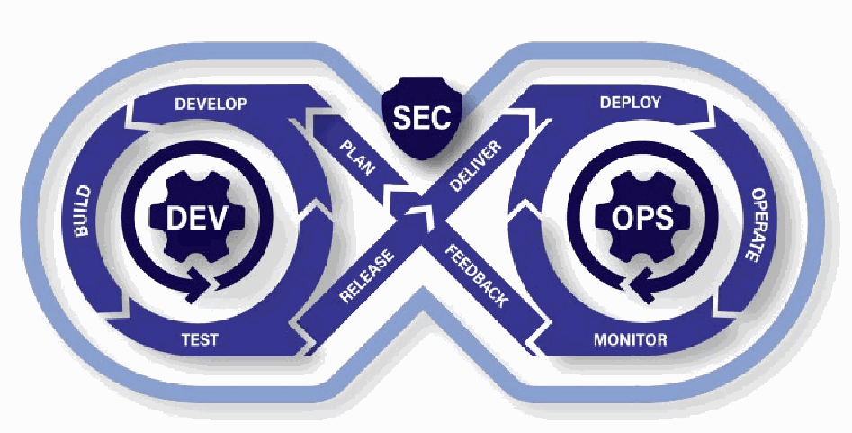
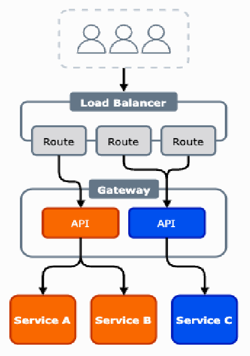
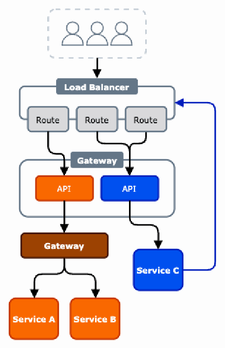
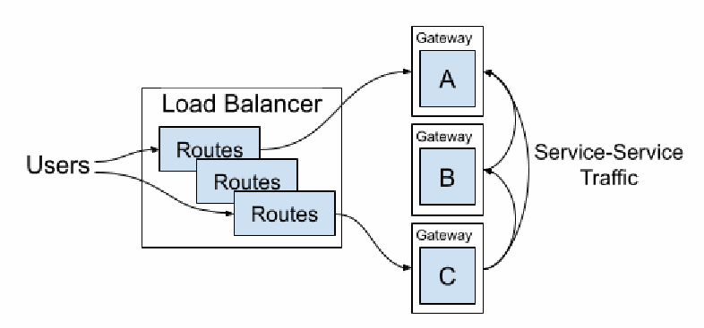

NIST SP 800-228 (Update 1) 日本語訳
英語タイトル : Guidelines for API Protection for Cloud-Native Systems日本語タイトル : クラウドネイティブシステム向けAPI保護ガイドライン
公開日 : 2026-03-13
原文URL : https://csrc.nist.gov/pubs/sp/800/228/upd1/final
翻訳編集 : 自動生成（有志による非公式の日本語訳）, 原文取得日 : 2026-09-27, 訳文 : 556 / 556 ブロック
[要約] SP 800-228 (Update 1) は、クラウドネイティブシステムにおける API のライフサイクル全体を通じたリスクと、その保護のための管理策を示すガイドラインです。API の開発時と実行時のリスク要因や脆弱性の特定と分析、実行前段階と実行段階で推奨される基本的・高度な管理策、実装パターンの長所と短所を扱います。セキュリティ実務者がリスクに基づく段階的な方法で API を保護できるようにすることを目的とし、2026年3月の更新を反映した版です。
NIST Special Publication 800 NIST SP 800-228-upd1
NIST特別刊行物800、NIST SP 800-228-upd1
Guidelines for API Protection for
API保護に関するガイドライン
Cloud-Native Systems
クラウドネイティブシステム
Ramaswamy Chandramouli
Ramaswamy Chandramouli
Zack Butcher
Zack Butcher
This publication is available free of charge from: https://doi.org/10.6028/NIST.SP.800-228-upd1
本刊行物は以下から無料で入手できます: https://doi.org/10.6028/NIST.SP.800-228-upd1
NIST Special Publication 800 NIST SP 800-228-upd1
NIST特別刊行物800、NIST SP 800-228-upd1
Guidelines for API Protection for
API保護に関するガイドライン
Cloud-Native Systems
クラウドネイティブシステム
Ramaswamy Chandramouli Computer Security Division Information Technology Laboratory
Ramaswamy Chandramouli コンピュータセキュリティ部門 情報技術研究所
Zack Butcher Tetrate, Inc.
Zack Butcher Tetrate, Inc.
This publication is available free of charge from: https://doi.org/10.6028/NIST.SP.800-228-upd1
本刊行物は以下から無料で入手できます: https://doi.org/10.6028/NIST.SP.800-228-upd1
June 2025
2025年6月
INCLUDES UPDATES AS OF 03-13-2026; SEE APPENDIX F
2026年3月13日時点の更新を含みます。付録Fを参照してください。
［米国商務省の紋章。公的な標章のため、この非公式サイトには掲載していない。原本 PDF を参照。］
U.S. Department of Commerce Howard Lutnick, Secretary
米国商務省 ハワード・ラトニック長官
National Institute of Standards and Technology
米国国立標準技術研究所（NIST）
Craig Burkhardt, Acting Under Secretary of Commerce for Standards and Technology and Acting NIST Director
クレイグ・バークハート、商務省標準・技術担当次官代行兼NIST所長代行
Certain commercial equipment, instruments, software, or materials, commercial or non-commercial, are identified in this paper in order to specify the experimental procedure adequately. Such identification does not imply recommendation or endorsement of any product or service by NIST, nor does it imply that the materials or equipment identified are necessarily the best available for the purpose.
本論文では、実験の手順を適切に特定するために、特定の商用の機器、装置、ソフトウェア、または材料（商用・非商用を問わない）を挙げています。こうした記載は、NISTがいかなる製品やサービスも推奨または支持することを意味せず、挙げた材料や機器がその目的に最適であると必ずしも意味するものでもありません。
There may be references in this publication to other publications currently under development by NIST in accordance with its assigned statutory responsibilities. The information in this publication, including concepts and methodologies, may be used by federal agencies even before the completion of such companion publications. Thus, until each publication is completed, current requirements, guidelines, and procedures, where they exist, remain operative. For planning and transition purposes, federal agencies may wish to closely follow the development of these new publications by NIST.
本書では、NISTが割り当てられた法定責任に従って現在策定中の他の刊行物を参照する場合があります。本書に記載された情報（概念や方法論を含む）は、関連する補完刊行物が完成する前であっても連邦政府機関が使用できます。したがって、各刊行物が完成するまでは、既存の現行要件、指針および手順が引き続き有効です。計画および移行のため、連邦政府機関はNISTによるこれらの新しい刊行物の策定状況を注意深く確認することが望ましい。
Organizations are encouraged to review all draft publications during public comment periods and provide feedback to NIST. Many NIST cybersecurity publications, other than the ones noted above, are available at https://csrc.nist.gov/publications.
組織には、公開意見募集期間中にすべての草案刊行物を確認し、NISTに意見を提出することを推奨します。上記で示したものを除き、多くのNISTサイバーセキュリティ刊行物は https://csrc.nist.gov/publications で入手できます。
Authority This publication has been developed by NIST in accordance with its statutory responsibilities under the Federal Information Security Modernization Act (FISMA) of 2014, 44 U.S.C. § 3551 et seq., Public Law (P.L.) 113-283. NIST is responsible for developing information security standards and guidelines, including minimum requirements for federal information systems, but such standards and guidelines shall not apply to national security systems without the express approval of appropriate federal officials exercising policy authority over such systems. This guideline is consistent with the requirements of the Office of Management and Budget (OMB) Circular A-130.
権限 本刊行物は、2014年連邦情報セキュリティ近代化法（FISMA）、合衆国法典第44編第3551条以下、ならびに公法113-283に基づく法定責任に従ってNISTが策定しました。NISTは、連邦情報システムの最低要件を含む情報セキュリティ標準および指針を策定する責任を負います。ただし、国の安全保障システムについては、当該システムに関する政策権限を行使する適切な連邦政府職員が明示的に承認しない限り、これらの標準および指針は適用されません。本指針は、行政管理予算局（OMB）通達A-130の要件に整合しています。
Nothing in this publication should be taken to contradict the standards and guidelines made mandatory and binding on federal agencies by the Secretary of Commerce under statutory authority. Nor should these guidelines be interpreted as altering or superseding the existing authorities of the Secretary of Commerce, Director of the OMB, or any other federal official. This publication may be used by nongovernmental organizations on a voluntary basis and is not subject to copyright in the United States. Attribution would, however, be appreciated by NIST.
本書のいかなる内容も、法定権限に基づき商務長官が連邦政府機関に義務付け、拘束力を持たせた標準および指針と矛盾するものと解釈してはなりません。また、本指針は、商務長官、OMB長官、その他の連邦政府職員が有する既存の権限を変更または置き換えるものと解釈してはなりません。非政府組織は本刊行物を任意で使用でき、米国内では著作権の対象となりません。ただし、NISTへの帰属表示があれば歓迎します。
NIST Technical Series Policies Copyright, Use, and Licensing Statements NIST Technical Series Publication Identifier Syntax
NIST技術シリーズの方針／著作権、使用およびライセンスに関する声明／NIST技術シリーズ出版物識別子の構文
Publication History Approved by the NIST Editorial Review Board on 2026-03-12
刊行履歴 NIST編集審査委員会による承認日: 2026-03-12
How to Cite this NIST Technical Series Publication: Chandramouli R, Butcher Z (2025) Guidelines for API Protection for Cloud-Native Systems. (National Institute of Standards and Technology, Gaithersburg, MD), NIST Special Publication (SP) NIST SP 800-228-upd1. Includes updates as of March 13, 2026. https://doi.org/10.6028/NIST.SP.800-228-upd1
NIST技術シリーズ刊行物の引用方法: Chandramouli R, Butcher Z (2025) Guidelines for API Protection for Cloud-Native Systems. (National Institute of Standards and Technology, Gaithersburg, MD), NIST Special Publication (SP) NIST SP 800-228-upd1. 2026年3月13日時点の更新を含みます。 https://doi.org/10.6028/NIST.SP.800-228-upd1
Author ORCID iDs
著者のORCID iD
Ramaswamy Chandramouli: 0000-0002-7387-5858
Ramaswamy Chandramouli: 0000-0002-7387-5858
Contact Information
連絡先
sp800-228-comments@nist.gov
sp800-228-comments@nist.gov
National Institute of Standards and Technology Attn: Computer Security Division, Information Technology Laboratory 100 Bureau Drive (Mail Stop 8930) Gaithersburg, MD 20899-8930
米国国立標準技術研究所 宛先: コンピュータセキュリティ部門、情報技術研究所 100 Bureau Drive（Mail Stop 8930） Gaithersburg, MD 20899-8930
Additional Information Additional information about this publication is available at https://csrc.nist.gov/pubs/sp/800/228/upd1/final, including related content, potential updates, and document history.
追加情報 本刊行物に関する追加情報（関連コンテンツ、更新予定、文書履歴を含む）は、https://csrc.nist.gov/pubs/sp/800/228/upd1/final で確認できます。
All comments are subject to release under the Freedom of Information Act (FOIA).
すべての意見は、情報自由法（FOIA）に基づく公開の対象となります。
Abstract
概要
Modern enterprise IT systems rely on a family of application programming interfaces (APIs) for integration to support organizational business processes. Hence, a secure deployment of APIs is critical for overall enterprise security. This, in turn, requires the identification of risk factors or vulnerabilities in various phases of the API life cycle and the development of controls or protection measures. This document addresses the following aspects of achieving that goal: (a) the identification and analysis of risk factors or vulnerabilities during various activities of API development and runtime, (b) recommended basic and advanced controls and protection measures during the pre-runtime and runtime stages of APIs, and (c) an analysis of the advantages and disadvantages of various implementation options for those controls to enable security practitioners to adopt an incremental, risk-based approach to securing their APIs.
現代のエンタープライズITシステムは、組織の業務プロセスを支える統合のために、複数のアプリケーション・プログラミング・インターフェース（API）に依存しています。そのため、APIを安全に導入することは、企業全体のセキュリティにとって重要です。その実現には、APIライフサイクルの各段階におけるリスク要因や脆弱性を特定し、管理策または保護対策を策定する必要があります。本書では、次の点を扱います。(a) APIの開発および実行時の各活動におけるリスク要因または脆弱性の特定と分析、(b) APIの実行前段階および実行段階において推奨される基本的・高度な管理策と保護対策、(c) それらの管理策を実装する各種選択肢の長所と短所の分析。これにより、セキュリティ実務者がリスクに基づく段階的な方法でAPIを保護できるようにします。
Keywords
キーワード
API; API endpoint; API gateway; API key; API schema; web application firewall.
API、APIエンドポイント、APIゲートウェイ、APIキー、APIスキーマ、ウェブアプリケーションファイアウォール。
Reports on Computer Systems Technology
コンピュータシステム技術に関する報告書
The Information Technology Laboratory (ITL) at the National Institute of Standards and Technology (NIST) promotes the U.S. economy and public welfare by providing technical leadership for the Nation’s measurement and standards infrastructure. ITL develops tests, test methods, reference data, proof of concept implementations, and technical analyses to advance the development and productive use of information technology. ITL’s responsibilities include the development of management, administrative, technical, and physical standards and guidelines for the cost-effective security and privacy of other than national security-related information in federal information systems. The Special Publication 800-series reports on ITL’s research, guidelines, and outreach efforts in information system security, and its collaborative activities with industry, government, and academic organizations.
米国国立標準技術研究所（NIST）の情報技術研究所（ITL）は、国の計測および標準インフラに対する技術的リーダーシップを発揮し、米国経済と公共の福祉の向上を促進しています。ITLは、情報技術の発展と生産的な利用を促すため、試験、試験方法、参照データ、概念実証の実装、および技術分析を開発します。ITLの責務には、連邦情報システムにおける国家安全保障関連以外の情報の費用対効果に優れたセキュリティとプライバシーを確保するための、管理的、事務的、技術的、物理的な標準および指針の策定が含まれます。特別刊行物800シリーズは、情報システムセキュリティに関するITLの研究、指針、普及活動、ならびに産業界、政府、学術機関との協働活動を報告します。
Patent Disclosure Notice
特許開示に関する通知
NOTICE: ITL has requested that holders of patent claims whose use may be required for compliance with the guidance or requirements of this publication disclose such patent claims to ITL. However, holders of patents are not obligated to respond to ITL calls for patents and ITL has not undertaken a patent search in order to identify which, if any, patents may apply to this publication.
通知: ITLは、本刊行物の指針または要件に準拠するために使用が必要となる可能性のある特許請求項を保有する者に対し、その請求項をITLに開示するよう求めています。ただし、特許保有者にITLの特許情報照会へ回答する義務はなく、またITLは、本刊行物に適用される特許の有無を特定するための特許調査を実施していません。
As of the date of publication and following call(s) for the identification of patent claims whose use may be required for compliance with the guidance or requirements of this publication, no such patent claims have been identified to ITL.
刊行日時点で、本刊行物の指針または要件に準拠するために使用が必要となる可能性のある特許請求項の特定を求めたところ、そのような特許請求項はITLに報告されていません。
No representation is made or implied by ITL that licenses are not required to avoid patent infringement in the use of this publication.
本刊行物の使用において特許侵害を避けるためのライセンスが不要であると、ITLが明示または黙示に表明するものではありません。
Table of Contents
目次
List of Figures
図一覧
List of Tables
表一覧
Acknowledgments
謝辞
The authors would like to thank Orion Letizi, technical writer at Tetrate, for providing continuous, ongoing edits during the development of this document. The authors also thank Erica Hughberg (an engineer at Tetrate) and James Gough (a Distinguished Engineer at Morgan Stanley) for their feedback on the initial outline for controls. Their extensive hands-on experience in running API security programs in large enterprises helped NIST address current API security issues and incorporate state-of-practice API security controls in these recommendations. Last but not the least, the authors would also like to express their thanks to Isabel Van Wyk of NIST for her detailed and extensive editorial review.
著者らは、本書の策定中に継続して編集作業を行ったTetrateのテクニカルライター、Orion Letiziに謝意を表します。また、最初の管理策案に意見を寄せたTetrateのエンジニアErica Hughbergと、Morgan Stanleyのディスティングイッシュド・エンジニアJames Goughにも感謝します。大企業でAPIセキュリティプログラムを運用してきた両氏の豊富な実務経験により、NISTは現在のAPIセキュリティ課題に対応し、実務で広く採用されているAPIセキュリティ管理策を本推奨に取り入れることができました。最後に、詳細かつ綿密な編集レビューを行ったNISTのIsabel Van Wykにも感謝します。
Executive Summary
エグゼクティブサマリー
Application programming interfaces (APIs) provide the means to integrate and communicate with the modern enterprise IT application systems that support business processes. However, a lack of due diligence can introduce vulnerabilities and risk factors that exploit the connectivity and accessibility features of APIs. If these vulnerabilities are not identified, analyzed, and addressed through control measures, attack vectors could threaten the security posture of the application systems spanned by these APIs. A systematic and effective means of identifying and addressing these vulnerabilities is only possible by treating the development and deployment of APIs as an iterative life cycle using paradigms like development, security, and operations (DevSecOps).
アプリケーション・プログラミング・インターフェース（API）は、業務プロセスを支える現代のエンタープライズITアプリケーションシステムを統合し、相互に通信する手段を提供します。一方、適切な注意を怠ると、APIの接続性やアクセス容易性を悪用する脆弱性やリスク要因を招く可能性があります。こうした脆弱性が特定、分析され、管理策によって対処されなければ、攻撃経路が、APIを介して連携するアプリケーションシステムのセキュリティ態勢を脅かすおそれがあります。これらの脆弱性を体系的かつ効果的に特定して対処するには、開発、セキュリティ、運用（DevSecOps）などのパラダイムを用い、APIの開発と展開を反復的なライフサイクルとして扱う必要があります。
This document provides guidelines and recommendations on controls and protection measures for secure API deployments in the enterprise. In addition, an analysis of the advantages and disadvantages of various implementation options (called patterns) for those controls enable security practitioners to choose the most effective option for their IT ecosystem.
本書は、企業環境でAPIを安全に展開するための管理策および保護対策に関する指針と推奨事項を示します。また、管理策のさまざまな実装方法（パターンと呼ぶ）の長所と短所を分析し、セキュリティ実務者が各自のITエコシステムに最も効果的な方法を選択できるようにします。
Developing these controls and analyzing their implementation options should be guided by several overarching principles:
これらの管理策の策定と実装方法の分析は、次のような全体原則を指針とすべきです。
•The guidance for controls should cover all APIs, regardless of whether they are exposed to customers/partners or used internally within the enterprise.
•管理策に関する指針は、顧客やパートナーに公開されているか、企業内部で使用されているかにかかわらず、すべてのAPIを対象とすべきです。
•With the vanishing of perimeters in modern enterprise IT applications, all controls should incorporate the concept of zero trust.
•現代のエンタープライズITアプリケーションでは境界が消失しつつあるため、すべての管理策にゼロトラストの考え方を取り入れるべきです。
•The controls should span the entire API life cycle and be classified into (a) pre-runtime protections and (b) runtime protections that are then subdivided into basic and advanced protections to enable incremental risk-based adoption.
•管理策はAPIライフサイクル全体を対象とすべきであり、(a) 実行前の保護策と (b) 実行時の保護策に分類すべきです。このうち実行時の保護策はさらに基本的な保護策と高度な保護策に細分され、段階的かつリスクに基づく導入を可能にします。
1. Introduction
1. 序論
Application programming interfaces (APIs) represent an abstraction of the underlying implementation of a digital enterprise — they describe what actions users are allowed to take. Given the spatial (e.g., on-premises, multiple clouds) and logical (e.g., microservices) nature of current enterprise applications, APIs are needed to integrate and establish communication pathways between internal and third-party services and applications. The growing prevalence of microservice-oriented architectures and software as a service (SaaS), which are nearly always delivered via APIs, has resulted in network-based APIs being utilized across organizations in every type of application, including server-based monolithic, microservices-based, browser-based client, and the Internet of Things (IoT).
アプリケーション・プログラミング・インターフェース（API）は、デジタル企業の基盤となる実装を抽象化し、ユーザーに許可される操作を定義します。現在の企業向けアプリケーションは、物理的配置（オンプレミス、複数のクラウドなど）と論理構成（マイクロサービスなど）の両面で多様化しているため、内部およびサードパーティのサービスやアプリケーションを統合し、通信経路を確立するにはAPIが必要です。マイクロサービス指向アーキテクチャと、ほぼ常にAPI経由で提供されるサービスとしてのソフトウェア（SaaS）の普及により、ネットワークベースのAPIは、サーバー型モノリシック、マイクロサービス型、ブラウザベースのクライアント、モノのインターネット（IoT）など、あらゆる種類のアプリケーションで組織全体に利用されています。
An API is a collection of commands or endpoints that operate on data or objects via some protocol to define how two pieces of software communicate. At runtime, service instances send requests to a specific API endpoint. An API gateway hosts many APIs and is responsible for mapping each request to its target API endpoint, applying policy for that endpoint (e.g., authentication, rate limiting), and routing that request to a service instance, which implements that API endpoint, as shown in Fig. 1.
APIとは、何らかのプロトコルを介してデータやオブジェクトを操作し、2つのソフトウェア間の通信方法を定義するコマンドまたはエンドポイントの集合です。実行時には、サービスインスタンスが特定のAPIエンドポイントにリクエストを送信します。APIゲートウェイは複数のAPIをホストし、各リクエストを対象のAPIエンドポイントに対応付け、そのエンドポイントのポリシー（認証、レート制限など）を適用してから、そのAPIエンドポイントを実装するサービスインスタンスへリクエストをルーティングします。図1に示すとおりです。
![Fig. 1. API, API endpoint, service, and service instance. UML-style diagram of six boxes with labeled, directed relationships and multiplicities. A key marks API, API Endpoint and Service as Design Time (gray) and Service Instance, API Gateway and Request as Runtime (white). API (1) is composed of API Endpoint (1..n), drawn with a filled diamond at API. Service (1) implements API Endpoint (1..n), drawn with a hollow diamond at Service. Service Instance (1..n) is an instance of Service (1), drawn with a hollow diamond at Service. API Gateway (0..n) hosts API (0..n). Request (1) targets API Endpoint (1). Request (0..n) is served by Service Instance (1). API Gateway (1) applies policy & routes Request (0..n). API Gateway (0..n) receives requests from Service Instance (1).](assets/228upd1/p0012-figure-01.png)
図1. API、APIエンドポイント、サービス、サービスインスタンス。6 つの箱を、名前と多重度を付けた有向の関係で結んだ UML 風の図である。凡例（Key）では、API、API Endpoint（APIエンドポイント）、Service（サービス）が Design Time（設計時、灰色）、Service Instance（サービスインスタンス）、API Gateway（APIゲートウェイ）、Request（リクエスト）が Runtime（実行時、白）とされている。API（1）は API Endpoint（1..n）から構成される（composed of。API 側に塗りつぶしたひし形）。Service（1）は API Endpoint（1..n）を実装する（implements。Service 側に白抜きのひし形）。Service Instance（1..n）は Service（1）のインスタンスである（instance of。Service 側に白抜きのひし形）。API Gateway（0..n）は API（0..n）をホストする（hosts）。Request（1）は API Endpoint（1）を対象とする（targets）。Request（0..n）は Service Instance（1）が処理する（served by）。API Gateway（1）は Request（0..n）にポリシーを適用してルーティングする（applies policy & routes）。API Gateway（0..n）は Service Instance（1）からリクエストを受ける（receives requests from）。
Fig. 1. API, API endpoint, service, and service instance
図1. API、APIエンドポイント、サービス、サービスインスタンス
Network-based APIs are built to be consumed by remote applications over the network and present a unique set of challenges. Traditionally, network-based APIs are thought of as being customer-oriented, partner-oriented, or internal, which are referred to as “third-party,” “second-party,” and “first-party” APIs, respectively. First-party APIs can be exposed to callers inside of the organization on the same API gateway, but they are also often consumed directly by internal callers without traversing a dedicated API serving stack. Second- and third-party APIs are typically exposed to callers outside of the organization via an API gateway.
ネットワークベースのAPIは、リモートアプリケーションがネットワーク経由で利用するよう設計されており、特有の課題があります。従来、ネットワークベースのAPIは顧客向け、パートナー向け、または内部向けとされ、それぞれ「サードパーティ」「セカンドパーティ」「ファーストパーティ」APIと呼ばれます。ファーストパーティAPIは、組織内部の呼び出し元に対して同じAPIゲートウェイ上で公開できるが、専用のAPI提供スタックを経由せず、内部の呼び出し元が直接利用する場合も多い。セカンドパーティAPIとサードパーティAPIは、通常、APIゲートウェイを介して組織外の呼び出し元に公開されます。
Most first-party API integrations occur via a service API (i.e., they map to a single service). However, APIs that are hosted by the API gateway typically have endpoints that map to many different services, especially for second- and third-party APIs. These are called facade APIs because they present a single facade to an outside caller over potentially many different service APIs. Multiple services are commonly grouped together into an application along organizational lines with an application mapping to a team. Fig. 2 shows a schematic diagram of a service API, a facade API, and an application (i.e., monolithic) API.
ファーストパーティAPI統合の多くは、サービスAPI（すなわち、単一のサービスに対応付けられるAPI）を介して行われます。一方、APIゲートウェイがホストするAPIは、特にセカンドパーティAPIやサードパーティAPIの場合、複数の異なるサービスに対応するエンドポイントを持つことが多い。これらはファサードAPIと呼ばれ、複数のサービスAPIを介していても、外部の呼び出し元には単一の窓口を提供します。組織上の区分に沿って複数のサービスを1つのアプリケーションにまとめ、アプリケーションをチームに対応させる構成が一般的です。図2は、サービスAPI、ファサードAPI、アプリケーション（モノリシック）APIの概略を示します。
![Fig. 2. Service API, facade API, and application (monolithic). Three examples stacked vertically. Top: Auth API with endpoints POST /login, GET /user and POST /authorize, all connected to Auth API Implementation inside Auth Service. Middle: Baz Facade API with endpoints POST /foo, DELETE /foo/{id}, GET /bar/{id} and PUT /bar/{id}; the first two connect to the matching endpoints of Foo API (POST /foo, GET /foo/{id}, DELETE /foo/{id}), and the last two to the matching endpoints of Bar API (GET /bar/{id}, DELETE /bar/{id}, PUT /bar/{id}). All Foo API endpoints connect to Foo API Implementation inside Foo Service, and all Bar API endpoints to Bar API Implementation inside Bar Service. Bottom: Foo API (POST /foo, DELETE /foo/{id}) connects to Foo API Implementation and Bar API (GET /bar/{id}, PUT /bar/{id}) to Bar API Implementation, both inside a single Monolith Service.](assets/228upd1/p0013-figure-01.png)
図2. サービスAPI、ファサードAPI、アプリケーション（モノリシック）。3 つの例を上下に並べた図である。上段：Auth API の 3 つのエンドポイント POST /login、GET /user、POST /authorize がすべて、Auth Service 内の Auth API Implementation（実装）に接続している。中段：Baz Facade API（ファサードAPI）にはエンドポイント POST /foo、DELETE /foo/{id}、GET /bar/{id}、PUT /bar/{id} があり、前の 2 つは Foo API（POST /foo、GET /foo/{id}、DELETE /foo/{id}）の同名のエンドポイントに、後の 2 つは Bar API（GET /bar/{id}、DELETE /bar/{id}、PUT /bar/{id}）の同名のエンドポイントに接続している。Foo API のエンドポイントはすべて Foo Service 内の Foo API Implementation に、Bar API のエンドポイントはすべて Bar Service 内の Bar API Implementation に接続している。下段：Foo API（POST /foo、DELETE /foo/{id}）は Foo API Implementation に、Bar API（GET /bar/{id}、PUT /bar/{id}）は Bar API Implementation に接続し、どちらの実装も 1 つの Monolith Service 内にある。
Fig. 2. Service API, facade API, and application (monolithic)
図2. サービスAPI、ファサードAPI、アプリケーション（モノリシック）
Whenever systems communicate, there is some API involved (e.g., Comma-Separated Values (CSV) over File Transfer Protocol (FTP)). While this Special Publication (SP) focuses on “modern” APIs that are exposed via mechanisms like Hypertext Transfer Protocol (HTTP)/ Representational State Transfer (REST), gRPC Remote Procedure Calls (gRPC), or Simple Object Access Protocol (SOAP), the principles are universal and should be applied to all APIs and various communication styles (e.g., request/response, message-based/asynchronous).
システム間の通信には、常に何らかのAPIが関与する（例: ファイル転送プロトコル（FTP）経由のカンマ区切り値（CSV））。本特別刊行物（SP）は、ハイパーテキスト転送プロトコル（HTTP）／レプレゼンテーショナル・ステート・トランスファー（REST）、gRPCリモートプロシージャコール（gRPC）、または簡易オブジェクトアクセスプロトコル（SOAP）などの仕組みで公開される「現代的な」APIに焦点を当てます。ただし、ここで示す原則は普遍的であり、あらゆるAPIおよびさまざまな通信形態（リクエスト／レスポンス、メッセージベース／非同期など）に適用すべきです。
1.1. Zero Trust and APIs: The Vanishing Perimeter
1.1. ゼロトラストとAPI: 消失する境界
One of the most important implications of zero trust is that there is no meaningful distinction between an “internal” and “external” caller because the perimeter is the service instance itself.
ゼロトラストの最も重要な含意の一つは、「内部」の呼び出し元と「外部」の呼び出し元に実質的な区別がないことです。境界となるのはサービスインスタンスそのものです。
That is, all callers are trusted if they are authorized to be trusted. This contrasts with traditional approaches to API security in which the only “APIs” are those exposed to “external” callers, and API-oriented controls are only enforced at the perimeter, typically via an API gateway.
つまり、信頼されることを認可されていれば、すべての呼び出し元が信頼されます。これは、従来のAPIセキュリティの考え方とは異なります。従来は「外部」の呼び出し元に公開されるものだけを「API」とみなし、API向けの管理策は通常APIゲートウェイを介して境界でのみ適用していました。
SP 800-207A [6] discusses zero trust at runtime and the principle of shrinking the perimeter to the service instance using the five runtime controls of identity-based segmentation:
SP 800-207A [6]は、実行時のゼロトラストと、IDベースのセグメンテーションに関する5つの実行時管理策を用いて境界をサービスインスタンスまで縮小する原則を論じています。
1.Encryption in transit — To ensure message authenticity and prevent eavesdropping, thus preserving confidentiality
1.通信中の暗号化 — メッセージの真正性を確保し、盗聴を防いで機密性を維持する
2.Authenticate the calling service — Verify the identity of the software sending requests
2.呼び出し元サービスの認証 — リクエストを送信するソフトウェアのIDを検証する
3.Authorize the service — Using that authenticated identity, check that the action or communication being performed by the service is allowed
3.サービスの認可 — 認証済みIDを用いて、サービスが実行する操作または通信が許可されているか確認する
4.Authenticate the end user — Verify the identity of the entity triggering the software to send the request, often a non-person entity (NPE) (e.g., service account, system account)
4.エンドユーザーの認証 — ソフトウェアにリクエスト送信を開始させる主体のIDを検証します。多くの場合、その主体は非人間主体（NPE）（サービスアカウント、システムアカウントなど）である
5.Authorize the end user to access resources — Using the authenticated end-user identity, check that they are allowed to perform the requested action on the target resource
5.エンドユーザーによるリソースアクセスの認可 — 認証済みエンドユーザーのIDを用いて、対象リソースに対して要求された操作を実行できるか確認する
Achieving a zero-trust runtime requires applying these five controls to all API communications. Additional controls that are necessary for safe and secure API operations beyond identity-based segmentation should be enforced on all APIs in a system, including those exposed to the outside world (i.e., public APIs) and those intended only for other applications in a given infrastructure (i.e., internal APIs).
実行時のゼロトラストを実現するには、すべてのAPI通信にこれら5つの管理策を適用する必要があります。IDベースのセグメンテーションに加えて、APIを安全かつ確実に運用するために必要な管理策は、外部に公開されるAPI（パブリックAPI）も、特定のインフラ内で他のアプリケーションだけが使用するAPI（内部API）も含め、システム内のすべてのAPIに適用すべきです。
1.2. API Life Cycle
1.2. APIライフサイクル
Like all software, APIs grow and change over time as requirements drift and usage patterns change. They also go through a continuous, iterative life cycle, including:
他のソフトウェアと同様に、APIも要件の変化や利用パターンの変化に応じて、時間とともに成長し、変化します。また、継続的かつ反復的なライフサイクルをたどり、その過程には次の段階が含まれます。
•Plan, Develop, Build, Test, Release — These “pre-runtime” life cycle phases lead to a service that can be deployed in production.
•計画、開発、ビルド、テスト、リリース — これらの「実行前」ライフサイクル段階を経て、本番環境に展開できるサービスが作られます。
•Deploy, Operate, Monitor, Feedback — These “runtime” life cycle phases involve running and operating a service in production.
•展開、運用、監視、フィードバック — これらの「実行時」ライフサイクル段階では、本番環境でサービスを稼働・運用します。
Department of Defense (DoD) Enterprise DevSecOps is an example of a software development life cycle paradigm. A detailed description of each phase of this paradigm is given in [1]. Application of the DevSecOps paradigm in the context of cloud-native applications can be found in [4][5].
米国国防総省（DoD）のエンタープライズDevSecOpsは、ソフトウェア開発ライフサイクルのパラダイムの一例です。このパラダイムの各段階の詳細は[1]に記載されています。クラウドネイティブアプリケーションの文脈でDevSecOpsパラダイムを適用する方法は[4][5]を参照してください。

図3. DevSecOpsライフサイクルの各段階。無限大記号の形をしたループで、左右が交差する中央上部に SEC と記した盾がある。左のループは DEV と記した歯車を囲み、PLAN（計画）、DEVELOP（開発）、BUILD（ビルド）、TEST（テスト）、RELEASE（リリース）の段階が記されている。右のループは OPS と記した歯車を囲み、DELIVER（デリバリー）、DEPLOY（展開）、OPERATE（運用）、MONITOR（監視）、FEEDBACK（フィードバック）の段階が記されている。
Fig. 3. DevSecOps life cycle phases
図3. DevSecOpsライフサイクルの各段階
1.3. Document Goals
1.3. 本書の目的
This document recommends controls for API protection except for API tools that embed one or more of the following control categories as part of its feature set:
本書は、機能の一部として次の管理策カテゴリを1つ以上組み込んでいるAPIツールを除き、API保護のための管理策を推奨します。
1.Pre-runtime API protections — These controls need to be applied when designing and building APIs.
1.実行前のAPI保護 — APIの設計時および構築時に適用する管理策。
2.Runtime API protections — These controls need to be applied to every API request that an infrastructure serves, not just at the perimeter.
2.実行時のAPI保護 — これらの管理策は、境界だけでなく、インフラが処理するすべてのAPIリクエストに適用する必要があります。
Each of these two categories is further divided into two subcategories based on organizational maturity (i.e., basic and advanced), which enables enterprises to adopt them using an incremental, risk-based approach.
これら2つのカテゴリはそれぞれ、組織の成熟度に基づいてさらに2つのサブカテゴリ（基本と高度）に分けられており、これにより企業は段階的かつリスクに基づくアプローチで導入できます。
A prerequisite for defining any API protection measure or policy irrespective of its category or sub-category is that the protections m ust be expressed in terms of nouns (e.g., resource) and verbs (e.g., “create customer record” using the verb POST/CR) that pertain to API components, API endpoint components, API requests, and API responses. These, in turn, contain references to resources (e.g., customer record [CR]), data, and operations on those resources.
カテゴリやサブカテゴリを問わず、API保護対策またはポリシーを定義する前提として、保護策は、APIコンポーネント、APIエンドポイントコンポーネント、APIリクエストおよびAPIレスポンスに関係する名詞（リソースなど）と動詞（POST/CRという動詞による「顧客レコードを作成する」など）で表現する必要があります。これらはさらに、リソース（顧客レコード[CR]など）、データ、およびリソースに対する操作への参照を含みます。
1.4. Relationship to Other NIST Documents
1.4. 他のNIST文書との関係
Today, most software development and integration are based on APIs. Section 1.2 articulated the close relationship between software and APIs, demonstrated that API development and deployment follow the same iterative life cycle as the software, and provided NIST guidelines on DevSecOps.
現在、ソフトウェア開発と統合の大半はAPIに基づいています。1.2節では、ソフトウェアとAPIの密接な関係を述べ、APIの開発と展開がソフトウェアと同じ反復型ライフサイクルに従うことを示し、DevSecOpsに関するNISTの指針を紹介しました。
Another distinguishing feature of the controls recommended for protecting APIs is the capacity to provide assurance for conforming to the principles of zero trust. This is because there is no distinction between internal and external API requests or calls due to the absence of an identifiable network perimeter and the distributed nature of applications on-premises and in multiple clouds. This security assurance can be achieved with authentication and authorization controls using identity-based segmentation [2]. Documents that provide recommendations on the configuration of authentication and authorization controls in the context of cloud-native applications (e.g., [2][3]) are also relevant in the context of configuring controls for API protection.
API保護のために推奨する管理策のもう一つの特徴は、ゼロトラストの原則への適合を保証できることです。識別可能なネットワーク境界が存在せず、オンプレミスや複数クラウドにアプリケーションが分散しているため、内部と外部のAPIリクエストまたは呼び出しを区別できないからです。認証・認可の管理策をIDベースのセグメンテーションとともに用いることで、このセキュリティ保証を実現できます[2]。クラウドネイティブアプリケーションにおける認証・認可管理策の設定を推奨する文書（例: [2][3]）は、API保護管理策の設定にも関連します。
1.5. Document Structure
1.5. 本書の構成
This document is organized as follows:
本書の構成は次のとおりです。
•Section 2 describes risk factors and vulnerabilities associated with APIs and the attack vectors that could exploit those vulnerabilities.
•第2節では、APIに関連するリスク要因と脆弱性、およびそれらの脆弱性を悪用し得る攻撃経路について説明します。
•Section 3 recommends controls to protect APIs and classifies them into basic and advanced categories that need to be applied prior to runtime or enforced during runtime.
•第3節では、APIを保護するための管理策を推奨し、それらを、実行前に適用する必要がある、または実行時に強制する必要がある基本および高度のカテゴリに分類します。
•Section 4 provides a detailed analysis of implementation options or patterns for the controls described in Sec. 3 and outlines the advantages and disadvantages of each pattern.
•第4節では、第3節の管理策を実装する選択肢またはパターンを詳細に分析し、各パターンの利点と欠点を示します。
•Section 5 provides the summary and conclusions.
•第5節では、要約と結論を示します。
•Appendix A provides the classification taxonomy for APIs.
•付録Aでは、APIの分類体系を示します。
•Appendix B illustrates the API controls related to each DevSecOps phase
•付録Bでは、各DevSecOpsフェーズに関連するAPI管理策を図示します。
•Appendix C provides a list of Limit Types
•付録Cでは、制限タイプの一覧を示します。
•Appendix D provides a list of API risks by Risk Category
•付録Dでは、リスクカテゴリ別にAPIリスクの一覧を示します。
•Appendix E provides a list of recommended security controls by API Lifecycle Stage
•付録Eでは、APIライフサイクル段階別に推奨セキュリティ管理策の一覧を示します。
2. API Risks: Vulnerabilities and Exploits
2. APIのリスク: 脆弱性とエクスプロイト
This section considers some common risk factors that are associated with API deployments, including:
本節では、APIの展開に関連する一般的なリスク要因をいくつか取り上げます。次のものが含まれます。
•Lack of visibility of APIs in the enterprise inventory [7]
•企業内のAPI資産台帳における可視性の欠如 [7]
•Missing, incorrect, or insufficient authorization [7]
•認可の欠如、誤り、または不十分な認可 [7]
•Broken authentication [7]
•認証の不備 [7]
•Unrestricted resource consumption [7]
•リソース消費の制限不足 [7]
•Leaking of sensitive information
•機密情報の漏えい
•Insufficient verification of input data
•入力データの検証不足
2.1. Lack of Visibility of APIs in the Enterprise Inventory
2.1. 企業内API資産台帳における可視性の欠如
Most organizations have gaps in their API inventories, even if they otherwise have mature inventory management capabilities. The enterprise estate cannot be protected without an accurate API inventory, and unknown incidents may occur at the API level. Common reasons for the lack of visibility include:
多くの組織では、ほかの資産台帳管理が成熟していても、API資産台帳に抜けがあります。正確なAPI資産台帳がなければ企業のIT資産全体を保護できず、APIレベルで未知のインシデントが発生するおそれがあります。可視性が欠如する一般的な理由には、次のものがあります。
•Organizational silos: APIs are built by many teams across an organization, deployed across cloud and on-premises environments, and inherited in mergers and acquisitions. Security concerns may not receive sufficient attention, and establishing accurate, up-to-date inventories may be difficult. Further, a lack of automation and integration with the API inventory management system exacerbates the challenge of maintaining an accurate inventory.
•組織のサイロ化: APIは組織内の多数のチームによって構築され、クラウド環境とオンプレミス環境にまたがって展開され、合併や買収によって引き継がれます。セキュリティ上の懸念に十分な注意が払われない場合があり、正確で最新のインベントリを整備するのが難しいことがあります。さらに、自動化の欠如やAPIインベントリ管理システムとの統合の欠如により、正確なインベントリを維持する課題は一層深刻になります。
•Rogue or shadow APIs: APIs that are defined for internal use (e.g., debugging, testing, ad hoc solutions to business problems) may not be appropriately documented and often bypass standard security review practices.
•不正APIまたはシャドーAPI: デバッグ、テスト、業務上の課題に対する臨時の解決策など、内部利用向けに定義されたAPIは、適切に文書化されず、標準的なセキュリティレビューを迂回することが多い。
•Zombie or deprecated APIs: APIs may have been replaced or superseded by newer systems but have not yet been entirely removed (e.g., because all callers have not yet migrated to the alternative, there no longer exists a team responsible for the system). They risk falling behind the latest security policies and protections.
•ゾンビAPIまたは非推奨API: 新しいシステムに置き換えられたり、後継システムが導入されたりしても、すべての呼び出し元が代替先へ移行していない、またはシステムを担当するチームが存在しなくなったなどの理由で、APIが完全には廃止されていない場合があります。その結果、最新のセキュリティポリシーや保護策への対応が遅れるおそれがあります。
2.2. Missing, Incorrect, or Insufficient Authorization
2.2. 認可の欠如、誤り、または不十分な認可
Authorization requires a high-reliability, low-latency system for making decisions about user access to resources at request time. Application developers must integrate their application with the same authorization system to keep it updated on users, resources, and permissions as the system changes over time (e.g., users create and delete resources, assign new permissions). Even then, developers may incorrectly enforce access decisions in their application code. In the industry-recognized catalogue of API risks, three of the top 10 (i.e., 1, 3, and 5) focus on authorization [7].
認可には、リクエスト時にリソースへのユーザーアクセスを判断する、信頼性が高く低遅延のシステムが必要です。アプリケーション開発者は、ユーザー、リソース、権限が時間とともに変化する（例：ユーザーがリソースを作成・削除する、新しい権限を割り当てる）のに合わせて最新の状態に保つため、アプリケーションを同じ認可システムに統合しなければなりません。それでもなお、開発者がアプリケーションコードでアクセス判断を誤って適用する可能性があります。業界で広く認知されているAPIリスクのカタログでは、上位10件のうち3件（すなわち1、3、5）が認可に関するものです [7]。
In line with identity-based segmentation, every service for an API endpoint should perform two levels of authorization: 1) service authorization and 2) end-user-to-resource authorization [6]. However, implementing both levels of authorization can still leave many APIs open to risk. Individual fields of a resource often need to be authorized independently of the resource itself. For example, if additional debug information is embedded in an internal field of the API object, that field should not be visible to external callers (i.e., callers not authorized to see privileged debug information).
IDベースのセグメンテーションに沿って、APIエンドポイントに対する各サービスは、(1) サービス認可と (2) エンドユーザーからリソースへの認可という2段階の認可を行うべきです[6]。ただし、両段階を実装しても、多くのAPIには依然としてリスクが残り得ます。リソースの個々のフィールドには、リソース自体とは独立した認可が必要となることが多い。例えば、APIオブジェクトの内部フィールドに追加のデバッグ情報が含まれる場合、そのフィールドは外部の呼び出し元（特権的なデバッグ情報を閲覧する権限のない呼び出し元）に見えるべきではありません。
There are at least three sources of authorization risks:
認可リスクには、少なくとも次の3つの原因があります。
1.Missing authorization: There is no fine-grained, resource-level authorization present. For example, a legacy system may be operating under different access models (e.g., in a perimeter-based model, access is authorization), or there may be implementation bugs (i.e., an access check that should be enforced is not).
1.認可の欠如: リソース単位のきめ細かな認可が存在しません。例えば、レガシーシステムが異なるアクセスモデルで動作している場合がある（境界ベースのモデルではアクセスを認可として扱うなど）。または、適用すべきアクセス確認が実行されないといった実装上の不具合があります。
2.Incorrect authorization: The application performs an end-user-to-resource authorization check but fails because it checks the wrong end-user identity, the wrong permission, and/or the wrong target resource.
2.誤った認可: アプリケーションはエンドユーザーからリソースへの認可を確認するものの、誤ったエンドユーザーID、誤った権限、または誤った対象リソースを確認しているために、その確認が機能しません。
3.Insufficient authorization: The application performs a resource-level authorization that is successful, but the resource itself contains privileged information that is not intended for the level of access implied by access to the resource itself. This is often the root cause of leaking sensitive information (see Sec. 2.5).
3.不十分な認可: アプリケーションによるリソース単位の認可確認は成功しても、リソース自体に、そのリソースへのアクセスから想定される権限レベルでは閲覧できない特権情報が含まれています。これは機密情報漏えいの根本原因となることが多い（2.5節参照）。
2.3. Broken Authentication
2.3. 認証の不備
Authentication is a prerequisite for authorization, particularly two aspects: the authentication system itself is robust, and the application uses the authenticated identities correctly. Risks that an authentication system needs to mitigate include [8]:
認証は認可の前提条件であり、特に、認証システム自体が堅牢であることと、アプリケーションが認証済みIDを正しく使用することが重要です。認証システムが緩和する必要のあるリスクには、次のものがあります[8]。
•Credential Stuffing is a type of brute force attack, where an attacker knows an account's name, and tries to brute force a ton of different passwords to unlock it. (They "stuff all the credentials they can find" into the victim system's authorization system in the hopes that something will stick). The attacker is able to carry out this since mitigation features such as rate limits, Captcha are absent.
•クレデンシャルスタッフィングはブルートフォース攻撃の一種です。攻撃者はアカウント名を把握し、多数のパスワードを次々に試してアカウントのロック解除を狙う（見つけた認証情報をすべて標的システムの認可システムに「詰め込み」、どれかが通ることを期待します）。レート制限やCAPTCHAなどの緩和機能がないため、攻撃者はこの攻撃を実行できます。
•Brute-force attacks on a single account without mitigations, which is closely related to unrestricted resource consumption (see Sec. 2.4)
•対策を講じない単一アカウントへのブルートフォース攻撃。このリスクはリソース消費の制限不足と密接に関連する（2.4節参照）。
•Insecure practices, such as weak passwords, passing sensitive data in public channels (e.g., the URL), missing password validation for changes to sensitive account data, and using weak keys or poor algorithms to encrypt user data in transit and at rest
•安全でない慣行。例えば、弱いパスワードの使用、公開チャネル（URLなど）での機密データの受け渡し、重要なアカウントデータの変更時におけるパスワード検証の欠如、転送中および保存中のユーザーデータ暗号化における弱い鍵や不適切なアルゴリズムの使用。
•Bad or incorrect token validation, including not validating at all, ignoring expiry, and using insecure signing schemes or weak signing keys
•不適切または誤ったトークン検証。まったく検証しない、有効期限を無視する、安全でない署名方式を使う、弱い署名鍵を使うなど。
With a robust and secure authentication system in place, the application must use those credentials correctly. Risks to mitigate include:
堅牢で安全な認証システムを導入したうえで、アプリケーションは認証情報を正しく使用しなければなりません。緩和すべきリスクには次のものがあります。
•Missing authentication (e.g., tokens can be present but simply not checked), often due to a bug or misconfiguration in the application
•認証の欠如（例: トークンは存在しても確認されません）。多くの場合、アプリケーションのバグまたは設定ミスが原因です。
•Weak or predictable tokens, default accounts, and default passwords (e.g., a hard-coded bootstrap account with the same username and password on all devices, test accounts with predictable names and weak/guessable passwords)
•弱い、または推測可能なトークン、デフォルトアカウント、デフォルトパスワード（例: すべてのデバイスで同じユーザー名とパスワードを使うハードコードされた初期アカウント、予測可能な名前と弱く推測しやすいパスワードを使うテストアカウント）。
2.4. Unrestricted Resource Consumption
2.4. リソース消費の制限不足
Services consume resources to serve APIs, many of which can affect external systems or the real world when serving an API call. The effects are an intended part of the business flow, but automation creates avenues for abuse by malicious users. Therefore, usage must be restricted to protect against malicious attackers abusing the system with a denial-of-service attack (DoS) or for its impact on external systems.
サービスはAPIを提供するためにリソースを消費し、その多くはAPIリクエストへの応答時に外部システムや現実世界にも影響を及ぼし得ます。これらの影響は業務フロー上意図されたものだが、自動化によって悪意のあるユーザーが悪用できる経路が生じます。そのため、システムを悪用したサービス拒否（DoS）攻撃や外部システムへの影響を防ぐため、利用を制限する必要があります。
2.4.1. Unrestricted Compute Resource Consumption
2.4.1. 計算資源の無制限な消費
Broadly, the risks associated with unrestricted compute resource consumption (e.g., memory, CPU, storage) are best mitigated via a combination of rate limiting, timeouts, circuit breaking (i.e., limits on the number of concurrent outstanding requests), bot/abuse detection, and application changes (e.g., reject file uploads over 20MB in size, return at most 10 items in response to a list request). These risks manifest as:
大まかに言えば、計算資源（メモリ、CPU、ストレージなど）の無制限な消費に伴うリスクは、レート制限、タイムアウト、サーキットブレーカー（同時に処理中のリクエスト数を制限する機構）、ボット／不正利用の検出、およびアプリケーションの変更（例: 20 MBを超えるファイルアップロードを拒否する、一覧リクエストの応答を最大10件にする）を組み合わせることで最も適切に緩和されます。これらのリスクは次の形で現れます。
•DoS attacks via bandwidth saturation or resource starvation
•帯域幅の飽和またはリソース枯渇によるDoS攻撃。
•Unreliable performance due to resource utilization for one user or service that impacts others
•あるユーザーまたはサービスのリソース利用が他者に影響を及ぼすことによる、性能の不安定化。
•Cost amplification, in which an attacker can spend a small amount of resources (e.g., money, compute, bandwidth) to make requests that trigger a system to spend a much larger amount of resources to service the request
•コスト増幅: 攻撃者が少量のリソース（資金、計算資源、帯域幅など）を使ってリクエストを送信し、その処理のためにシステムがはるかに多くのリソースを費やす状態。
Even internal API consumption poses many of these risks. In most organizations, it is much easier for a developer to accidentally cause a DoS on an internal service than for an external attacker to maliciously cause such an attack. This is a potential security event that necessitates the need for a zero trust approach.
内部APIの利用にも、これらのリスクの多くが伴います。多くの組織では、外部の攻撃者が意図的に内部サービスへDoS攻撃を仕掛けるより、開発者が誤って内部サービスをDoS状態にするほうがはるかに起こりやすい。これはゼロトラストのアプローチを必要とする潜在的なセキュリティ事象です。
2.4.2. Unrestricted Physical Resource Consumption
2.4.2. 物理資源の無制限な消費
Critical business operations can be impacted when an attacker targets software systems that control physical processes (e.g., SCADA systems). APIs may also result in text messages being sent to users, charges to credit cards, or the consumption of expensive third-party resources. For example, a common challenge seen by organizations that adopt AI is the accidental over-use of expensive AI APIs, which can result in large unplanned expenses for the business. These risks may manifest as:
攻撃者が物理プロセスを制御するソフトウェアシステム（SCADAシステムなど）を標的にすると、重要な業務運用に影響が及ぶことがあります。APIによって、ユーザーへのテキストメッセージ送信、クレジットカードへの課金、高額なサードパーティ資源の消費が発生することもあります。例えば、AIを導入する組織によく見られる課題として、高価なAI APIを誤って過剰利用し、事業に大きな予期せぬ費用が発生することがあります。これらのリスクは次の形で現れ得ます。
•Impacts on business operations (e.g., damage to equipment and personnel, the creation of fake orders that require human effort to sort and remove)
•業務運用への影響（機器や人員への損害、人手で仕分け・削除する必要のある偽注文の作成など）。
•Impacts on customer relationships (e.g., scalpers automatically buying inventory to relist at a higher price elsewhere)
•顧客関係への影響（転売業者が在庫を自動購入し、別の場所で高値で再販売するなど）。
•Infrastructure co-opted for abuse or harassment (e.g., multi-factor authentication fatigue attacks, where an attacker triggers text spam to a user’s phone via an SMS 2-factor authentication system [9])
•インフラの不正利用または嫌がらせへの悪用（攻撃者がSMS二要素認証システムを通じてユーザーの電話に大量のテキストメッセージを送らせる、多要素認証疲労攻撃など[9]）。
•Unplanned expenses (e.g., consuming far more of a third-party service than planned by satisfying requests made by a malicious user)
•予期しない費用（悪意のあるユーザーからのリクエストに応答し、想定を大幅に超えるサードパーティサービスを消費するなど）。
These risks are best mitigated by a combination of rate limiting, quotas, spending policy controls in third-party software, bot/abuse detection, and application or business flow changes. Mitigations for both compute and physical resource consumption are similar. For compute resources, how users interact with a system should be limited. For physical resources, how the user interacts with a system and how a system interacts with external systems should be limited and considered early in the design phase. Mitigating these risks can sometimes require business flow changes.
これらのリスクは、レート制限、クォータ、サードパーティソフトウェアの支出ポリシー管理、ボット／不正利用の検出、アプリケーションまたは業務フローの変更を組み合わせて緩和するのが最も効果的です。計算資源と物理資源の消費への緩和策は共通します。計算資源については、ユーザーがシステムとどのようにやり取りできるかを制限すべきです。物理資源については、ユーザーとシステムのやり取り、およびシステムと外部システムのやり取りを制限すべきであり、設計の早期段階から考慮すべきです。これらのリスクの緩和には、業務フローの変更が必要となる場合もあります。
2.5. Leaking Sensitive Information to Unauthorized Callers
2.5. 権限のない呼び出し元への機密情報漏えい
Unintentionally leaking business data via APIs is closely related to missing, incorrect, or insufficient authorization (see Sec. 2.2). While correct and robust authorization should mitigate this risk, sensitive data can still be leaked from APIs via side channels. The two most common side channels exploited by attackers are response codes and error information, and common risks include:
APIを介した意図しない業務データの漏えいは、認可の欠如、誤り、または不十分さと密接に関連する（2.2節参照）。適切で堅牢な認可によってこのリスクは緩和されるはずであるが、サイドチャネルを通じてAPIから機密データが漏えいする可能性は残ります。攻撃者が悪用する最も一般的な2つのサイドチャネルは、応答コードとエラー情報です。一般的なリスクには次のものがあります。
•Enumeration of the resources (e.g., users, objects) in a system: This can have secondary impacts on the business, like revealing the customer set, information about product inventory, or the identity of employees in an organization. A common method of enumeration is enabled by services responding with “Not Found” status codes instead of “Permission Denied,” allowing an attacker to distinguish between resources that exist (403) and those that do not (404).
•システム内のリソース（ユーザー、オブジェクトなど）の列挙。これにより、顧客層、製品在庫に関する情報、組織の従業員の身元などが明らかになり、二次的な業務影響が生じるおそれがあります。列挙を可能にする一般的な方法として、サービスが「アクセス拒否」ではなく「見つからない」のステータスコードを返すことがあります。これにより攻撃者は、存在するリソース（403）と存在しないリソース（404）を区別できます。
•Revealing information about the internal implementation of the infrastructure to attackers: While security through obscurity is no security at all, it is still prudent to make it as hard as possible for attackers to discover an infrastructure’s fine-grained specifics, which are often included in error messages (e.g., the exact versions of common software being run, internal names of systems for future pivot attacks).
•インフラの内部実装に関する情報が攻撃者に漏れます。隠ぺいによるセキュリティはセキュリティではないものの、エラーメッセージに含まれることが多い詳細なインフラ情報（稼働中の一般的なソフトウェアの正確なバージョン、将来の横展開攻撃に利用され得るシステム内部名など）を、攻撃者が可能な限り発見しにくくするのが賢明です。
2.6. Insufficient Verification of Input Data
2.6. 入力データの検証不足
Trusting unverified inputs is one of a major class of recurring security bugs in software. There are at least two levels of verification that APIs need to consider:
未検証の入力を信頼することは、ソフトウェアで繰り返し発生する主要なセキュリティバグの一種です。APIでは、少なくとも次の2段階の検証を考慮する必要があります。
•Validating that the input is syntactically correct
•入力が構文上正しいことを検証します。
•Ensuring that valid input is not malicious
•正しい形式の入力が悪意のあるものでないことを確認します。
2.6.1. Input Validation
2.6.1. 入力検証
A service must validate that each request (i.e., input) matches the API’s definition, all expected fields are present and of the correct type, and no unexpected fields are present. For example, an API definition may say, “The ‘name’ field is required and must be a non-empty string less than 100 characters long,” which must be verified at runtime on every request.
サービスは各リクエスト（入力）がAPIの定義に適合し、想定されるすべてのフィールドが含まれて正しい型であり、想定外のフィールドが含まれていないことを検証する必要があります。例えばAPI定義に「nameフィールドは必須で、100文字未満の空でない文字列でなければならない」とある場合、実行時に各リクエストについて検証する必要があります。
The lack of input validation results in a variety of risks, including:
入力検証がないと、次のようなさまざまなリスクが生じます。
•Impacting the availability of APIs
•APIの可用性が損なわれます。
The “query of death” (QoD) [24] is a DoS attack via specially crafted requests o that trigger pathological worst-case behavior in the server (i.e., the server itself may crash due to bad input handling).
「死のクエリ」（QoD）[24]は、巧妙に細工したリクエストによってサーバーで病的な最悪ケースの動作を引き起こすDoS攻撃である（不適切な入力処理により、サーバー自体がクラッシュする場合があります）。
•Invalid or malicious data being stored in the system, which can cause latent issues (e.g., failure to restart during recovery, crashes when accessing invalid records)
•無効または悪意のあるデータがシステムに保存され、潜在的な問題を引き起こす（例: 復旧時に再起動できない、無効なレコードにアクセスしたときにクラッシュします）。
•Unanticipated error handling during request processing, which leaks internal information
•リクエスト処理中に想定外のエラー処理が発生し、内部情報が漏えいします。
2.6.2. Malicious Input Protection
2.6.2. 悪意のある入力からの保護
While the input may satisfy “syntactic” validation, it also needs to be verified as non-malicious before it is used. Malicious input is any input that is syntactically valid but attempts to get the system to misbehave, potentially in a way that can be exploited to trigger an attack. Extending the “name” example above, a caller may send a request that contains a name field with a string less than 100 characters (i.e., valid), but that string may be a Structured Query Language (SQL) injection attack. Common risks include:
入力は「構文」検証を通過しても、使用前に悪意がないことを確認する必要があります。悪意のある入力とは、構文上は有効でもシステムを誤動作させようとする入力であり、攻撃を引き起こすために悪用される可能性があります。前述の「name」の例では、呼び出し元は100文字未満の有効なnameフィールドを含むリクエストを送信できるが、その文字列が構造化照会言語（SQL）インジェクション攻撃である場合があります。一般的なリスクには次のものがあります。
•Data leaks, which may lead to regulatory fines (General Data Protection Regulation (GDPR), California Consumer Privacy Act (CCPA)) or corruption (e.g., a SQL injection attack [7])
•データ漏えいによる規制上の罰金（一般データ保護規則（GDPR）、カリフォルニア州消費者プライバシー法（CCPA）など）やデータ破損（SQLインジェクション攻撃[7]など）。
•Unanticipated or unrestricted resource utilization (e.g., an attacker automates account creation and uploads multi-gigabyte “profile pictures” to each account)
•予期しない、または制限のないリソース利用（攻撃者がアカウント作成を自動化し、各アカウントに数ギガバイトの「プロフィール画像」をアップロードするなど）。
•Exposing a surface that attackers can use to pivot within the infrastructure or leverage to mount further attacks on others (e.g., by allowing servers to be used for server-side request forgery [SSRF])
•攻撃者がインフラ内で横展開したり、他者へのさらなる攻撃に利用したりできる攻撃対象面をさらすこと（サーバー側リクエストフォージェリ（SSRF）にサーバーが使われることを許すなど）。
•Cost amplification attacks, like the “billion laughs attack” (XML expansion) [10] or “zip bombs” (zip archive expansion) [11]
•「10億笑い攻撃」（XML展開）[10]や「zip爆弾」（ZIPアーカイブ展開）[11]などのコスト増幅攻撃。
2.7. Credential Canonicalization: Preparatory Step for Controls
2.7. 認証情報の正規化: 管理策導入の準備段階
A common problem at the API gateway is handling the many different credentials that clients use to call APIs. For example, mobile apps use a certificate, clients use an API key and expect HTTPS, internal users may use JWTs, internal applications expect an mTLS connection with a SPIFFE identity, and others use HTTPS and a Kerberos ticket. All of them also need to convey the user’s credential (e.g., OAuth Bearer token, a custom JWT, some trusted internal header). The combination is immense and challenging for application developers to perform correctly. As a result, organizations may only perform authentication and authorization at the edge via the API gateway. A solution to this problem is to standardize the credentials that an application sees at the API gateway — that is, to canonicalize them.
APIゲートウェイでよく生じる問題の一つは、クライアントがAPI呼び出しに使う多種多様な認証情報の処理です。例えば、モバイルアプリは証明書を使い、クライアントはAPIキーを使ってHTTPS接続を期待し、内部ユーザーはJWTを使い、内部アプリケーションはSPIFFE IDを含むmTLS接続を期待し、その他のクライアントはHTTPSとKerberosチケットを使います。これらはすべて、ユーザーの認証情報（OAuthベアラートークン、独自のJWT、信頼された内部ヘッダーなど）も伝える必要があります。その組み合わせは膨大で、アプリケーション開発者が正しく処理するのは難しい。その結果、組織はAPIゲートウェイのエッジでのみ認証と認可を行う場合があります。この問題の解決策は、APIゲートウェイでアプリケーションが参照する認証情報を標準化すること、すなわち正規化することです。
2.7.1. Gateways Straddle Boundaries
2.7.1. ゲートウェイは境界をまたぐ
A gateway is something in an infrastructure that straddles a boundary and is typically the only way for traffic to cross that boundary. One of the most important policies that the API gateway enforces is authentication, ideally of both the user and the calling service.
ゲートウェイとは、インフラ内で境界をまたぎ、通常その境界を越えるトラフィックが通過する唯一の経路となる要素です。APIゲートウェイが適用する最も重要なポリシーの一つは認証であり、理想的にはユーザーと呼び出し元サービスの両方を認証します。
Identity-based segmentation states that every server should authenticate and authorize both the calling service and the end user of every request and that those policies should be enforced at every hop in the infrastructure [6]. However, changing legacy systems to support new identities is often not possible. The challenge lies in implementing identity-based segmentation and support for both service and user identities without impacting other parts of the infrastructure.
IDベースのセグメンテーションでは、すべてのサーバーが各リクエストについて、呼び出し元サービスとエンドユーザーの両方を認証・認可すべきであり、そのポリシーをインフラ内のすべてのホップで適用すべきであるとされます[6]。ただし、新しいIDに対応するためにレガシーシステムを変更することは多くの場合不可能です。課題は、インフラの他の部分に影響を与えずに、サービスIDとユーザーIDの両方のサポートを含めてIDベースのセグメンテーションを実装することです。
API gateways can be used to draw a boundary around the parts of an infrastructure that perform identity-based segmentation. Within that boundary, all applications expect a standard set of credentials (e.g., user identity via a JWT in a specific header and service identity via a SPIFFE X.509 certificate). Common policies, practices, and tooling can then be used to ensure that all applications perform authentication and authorization correctly. Legacy schemes may continue to be used outside of the boundary. To reach inside, traffic must traverse a gateway that can canonicalize the incoming request’s credentials into the expected form.
APIゲートウェイを使用して、IDベースのセグメンテーションを実施するインフラ部分を囲む境界を設けることができます。その境界内では、すべてのアプリケーションが標準化された認証情報（特定のヘッダー内のJWTによるユーザーID、SPIFFE X.509証明書によるサービスIDなど）を想定します。共通のポリシー、慣行、ツールを用いて、すべてのアプリケーションが認証と認可を正しく行うようにできます。レガシー方式は境界の外側で引き続き使用できます。境界の内側へ到達するには、受信リクエストの認証情報を想定形式に正規化できるゲートウェイをトラフィックが通過しなければなりません。
2.7.2. Requests With a Service Identity But No User Identity
2.7.2. サービスIDはあるがユーザーIDがないリクエスト
Consider a batch job that runs nightly and touches data for many users. This is a risk because it requires special casing by the applications. For some service identities, end-user authorization is not required, but for all others, it is required. Any special casing increases the opportunity for incorrect or insufficient authorization.
多数のユーザーのデータを扱う夜間バッチジョブを考えます。アプリケーションごとの特別扱いが必要になるため、これはリスクとなります。一部のサービスIDではエンドユーザー認可が不要だが、それ以外では必要です。特別扱いが増えるほど、誤った認可や不十分な認可が行われる可能性が高まります。
The solution is to adopt service accounts that represent some system in a user identity domain. That service account can be for an internal system and, therefore, have permission to act on the data of many other users, or it can be for a user’s applications with correspondingly fewer permissions. The API gateway can mediate with the user authentication system to exchange the service’s runtime identity for a service account credential that represents the service in the user identity domain and attach that service account credential as the end-user credential to requests that it forwards into the part of the infrastructure that supports identity-based segmentation.
解決策は、ユーザーIDドメイン内のシステムを表すサービスアカウントを採用することです。そのサービスアカウントは、内部システム用として多数のユーザーのデータを操作する権限を持たせることも、ユーザーのアプリケーション用として比較的少ない権限を持たせることもできます。APIゲートウェイはユーザー認証システムと連携し、サービスの実行時IDを、ユーザーIDドメイン内でサービスを表すサービスアカウント認証情報と交換できます。そのサービスアカウント認証情報をエンドユーザー認証情報として、IDベースのセグメンテーションをサポートするインフラ部分へ転送するリクエストに付加します。
Applications that perform identity-based segmentation will need to configure a policy for that service account user so that it can act on all of the data that the batch job previously used its service identity to access. At the same time, the application can remove any support for special data access without an end-user credential. Finally, the existing infrastructure can be leveraged to audit and manage both user and service access to data.
IDベースのセグメンテーションを実施するアプリケーションでは、バッチジョブがサービスIDを使って以前アクセスしていたすべてのデータを操作できるよう、そのサービスアカウントユーザーに対するポリシーを設定する必要があります。同時に、エンドユーザー認証情報なしで特別なデータアクセスを許可する仕組みは削除できます。さらに、既存インフラを活用して、ユーザーおよびサービスによるデータアクセスを監査・管理できます。
An implication of this is that all applications that attempt to implement identity-based segmentation without a user identity should adopt service accounts by changing their application code. This will simplify future migration into the identity segmentation domain and make the system more secure overall.
このことから、ユーザーIDなしでIDベースのセグメンテーションを実装しようとするすべてのアプリケーションは、アプリケーションコードを変更してサービスアカウントを採用すべきです。これにより、将来IDセグメンテーションドメインへ移行しやすくなり、システム全体の安全性も高まります。
2.7.3. Requests With a User Identity But No Service Identity
2.7.3. ユーザーIDはあるがサービスIDがないリクエスト
Consider a cloud-provider API gateway that receives user traffic, terminates TLS, performs end-user authentication, and forwards requests to the infrastructure. The gateway enforces authentication, so some user credential is present. However, unless special care has been taken to communicate the service identity (e.g., via an API key or service account JWT), most notions of the calling workload will be lost at the external gateway provider.
ユーザートラフィックを受信し、TLSを終端し、エンドユーザーを認証して、インフラへリクエストを転送するクラウドプロバイダーのAPIゲートウェイを考えます。ゲートウェイが認証を適用するため、何らかのユーザー認証情報は存在します。しかし、APIキーやサービスアカウントJWTなどを介してサービスIDを伝えるための特別な措置を講じない限り、外部ゲートウェイ事業者の側で呼び出し元ワークロードに関する情報の大半が失われます。
Depending on the specifics of the setup, the only option may be to configure service identity-level policy via the external API gateway’s controls and then implement fine-grained service-to-service policy for how requests can flow from that external gateway into the infrastructure. In other cases, the external gateway can be configured to pass some notion of the external workload (e.g., forwarding the client’s certificate as a header) and then use that to create some canonical workload credential for internal communication (e.g., forwarding the client’s certificate and creating a JWT that represents the external service identity from the certificate’s common name).
構成の詳細によっては、外部APIゲートウェイの管理策を通じてサービスIDレベルのポリシーを設定し、その後、外部ゲートウェイからインフラへ流れるリクエストに対するきめ細かなサービス間ポリシーを実装するしかない場合があります。一方、外部ゲートウェイが外部ワークロードの情報（クライアント証明書をヘッダーとして転送するなど）を渡せるよう設定し、それを内部通信向けの正規ワークロード認証情報の作成に利用できる場合もある（証明書を転送し、その共通名から外部サービスIDを表すJWTを生成するなど）。
![Fig. 4. Handling API calls with user identity but no service identity. Left to right: a Green App box with a smiling user icon labeled End User or NPE; a Gateway; a Frontend; and a Backend, with a Database cylinder below the Backend. The links are drawn as parallel colored bars, each labeled with a credential: Green App to Gateway, OAuth and Kerberos; Gateway to Frontend, OAuth, Service JWT and SPIFFE X.509; Frontend to Backend, OAuth and SPIFFE X.509; Backend to Database, SPIFFE X.509 and OAuth. Two vertical lines pass through the Gateway; at the bottom, a left-pointing arrow labeled Kerberos ID Domain extends left from the left line, and a right-pointing arrow labeled SPIFFE ID Domain extends right from the right line.](assets/228upd1/p0024-figure-01.png)
図4. サービスIDはなくユーザーIDがあるAPI呼び出しの処理。左から右へ、End User or NPE（エンドユーザーまたは NPE）と記した笑顔の利用者アイコンを含む Green App の箱、Gateway（ゲートウェイ）、Frontend（フロントエンド）、Backend（バックエンド）が並び、Backend の下に Database（データベース）の円筒がある。接続は認証情報名を記した色付きの平行な帯で描かれている。Green App と Gateway の間は OAuth と Kerberos、Gateway と Frontend の間は OAuth、Service JWT、SPIFFE X.509、Frontend と Backend の間は OAuth と SPIFFE X.509、Backend と Database の間は SPIFFE X.509 と OAuth である。Gateway を 2 本の縦線が貫いており、下部では左の縦線から左向きに Kerberos ID Domain（Kerberos の IDドメイン）、右の縦線から右向きに SPIFFE ID Domain（SPIFFE の IDドメイン）の矢印が伸びている。
Fig. 4. Handling API calls with user identity but no service identity
図4. サービスIDはなくユーザーIDがあるAPI呼び出しの処理
However, the gateway’s service identity is already in place between the gateway and the first service that performs identity-based segmentation. For that first hop, three identities need to be handled on the request: the gateway’s service identity, the service identity of the external service, and the end user’s identity. As before, external service authorization can be performed via the gateway and simply drop the external service identity. Services should support validating both the end user and a workload identity via metadata from the request in addition to validating workload identity via the transport (e.g., mTLS certificates).
しかし、ゲートウェイと、IDベースのセグメンテーションを最初に実施するサービスとの間では、ゲートウェイのサービスIDがすでに設定されています。この最初のホップでは、リクエスト上の3つのIDを扱う必要があります。ゲートウェイのサービスID、外部サービスのサービスID、エンドユーザーIDです。前述のとおり、ゲートウェイで外部サービスを認可し、その外部サービスIDを破棄することもできます。サービスは、mTLS証明書などのトランスポート情報でワークロードIDを検証することに加え、リクエストのメタデータを用いてエンドユーザーIDとワークロードIDの両方を検証することをサポートすべきです。
For example, suppose that an organization A) uses a SPIFFE X.509 identity via mutual TLS for service identity as a service mesh does, B) uses a JWT bearer token for user identity, and C) chooses to represent an external service identity as a JWT token attached to the request. The mesh can then enforce that the gateway forward traffic to the service via (A), authenticate the service JWT and authorize the external service (C), and authenticate the end user (B) before forwarding a request to the application. This would fully support authenticating and authorizing all of the communicating parties, and the service in question would not need to be aware of the external service identity or credential. This is accomplished by Gateway bridging two identity domains (Kerberos and SPIFFE as shown in Fig.4). Gateways act as a policy enforcement point where we can "canonicalize" incoming credentials (e.g. a Kerberos ticket) into a standard form expected by internal systems (e.g. a SPIFFE Verifiable Identity Document -- "SVID"). The Gateways would simply need to manage a policy of “allowed external service callers” alongside their set of “allowed internal service callers.”
例えば、組織が(A) サービスIDにサービスメッシュと同じ相互TLSによるSPIFFE X.509 IDを用い、(B) ユーザーIDにJWTベアラートークンを用い、(C) 外部サービスIDをリクエストに付加するJWTトークンで表すとします。その場合、メッシュは、(A) を使ってゲートウェイからサービスへトラフィックを転送し、サービスJWTを認証して外部サービス (C) を認可し、アプリケーションへリクエストを転送する前にエンドユーザー (B) を認証するよう強制できます。これにより、通信に関わるすべての主体を認証・認可でき、対象サービスは外部サービスのIDや認証情報を把握する必要がなくなります。図4に示すように、ゲートウェイがKerberosとSPIFFEという2つのIDドメインを橋渡しすることで実現します。ゲートウェイはポリシー適用点として機能し、受信した認証情報（Kerberosチケットなど）を、内部システムが想定する標準形式（SPIFFE検証可能ID文書、すなわち「SVID」など）に「正規化」できます。ゲートウェイは、「許可された内部サービス呼び出し元」の集合に加えて、「許可された外部サービス呼び出し元」のポリシーを管理するだけでよい。
2.7.4. Requests With Both User and Service Identities
2.7.4. ユーザーIDとサービスIDの両方があるリクエスト
In the best case, the legacy systems in question are already doing nearly the right thing in that they have both an end user and a service identity attached to requests. However, legacy system credentials likely do not fully conform to the credentials expected by the parts of the system that implement identity-based segmentation. In that case, those other credentials will need to be translated into the canonical form expected by services that perform identity-based segmentation in the infrastructure. Essentially, the user’s authenticated credential should be exchanged with an identity provider for the canonical form expected by the identity-based segmentation portion of the infrastructure (e.g., a JWT bearer token), and the external service’s identity should be represented to the internal system as a token so that the policy can be enforced on all three identities in the first hop.
対象となるレガシーシステムが、リクエストにエンドユーザーIDとサービスIDの両方を付加しているなら、最善の状態に近い。ただし、レガシーシステムの認証情報は、IDベースのセグメンテーションを実施するシステム部分が想定する認証情報に完全には準拠しない可能性が高い。その場合、他の認証情報を、インフラ内でIDベースのセグメンテーションを実施するサービスが想定する正規形式へ変換する必要があります。基本的には、ユーザーの認証済み認証情報をIDプロバイダーと交換して、インフラのIDベースのセグメンテーション部分が想定する正規形式（JWTベアラートークンなど）にすべきです。また、外部サービスIDを内部システム向けのトークンとして表し、最初のホップで3つすべてのIDに対するポリシーを適用できるようにすべきです。
2.7.5. Reaching Out to Other Systems
2.7.5. 他のシステムへの接続
A similar problem presents itself in reverse when a service that performs identity-based segmentation needs to reach out to legacy systems that expect legacy credentials. One option is to integrate modern applications with legacy credential systems so that those applications can fetch the legacy credential they need, which can significantly delay the sunsetting of those legacy systems. A better option is to perform a credential exchange on traffic leaving the identity-based segmentation subset of the infrastructure.
同様の問題は逆方向にも起こります。IDベースのセグメンテーションを実施するサービスが、レガシー認証情報を必要とするレガシーシステムへ接続する場合です。一つの方法は、現代的なアプリケーションをレガシー認証情報システムと連携させ、必要なレガシー認証情報を取得できるようにすることだが、レガシーシステムの廃止が大幅に遅れる可能性があります。よりよい方法は、インフラのIDベース・セグメンテーション対象部分から出るトラフィックで認証情報を交換することです。
For example, an external SaaS API may expect a cloud provider service account as credentials. An egress gateway can be deployed to authenticate and authorize credentials that are used inside of the organization (i.e., identity-based segmentation) and exchange the internal identities for the external identities that are needed by the other system. In this way, services that perform modern identity-based segmentation can integrate with legacy systems with little impact and minimize any code dependencies on those legacy systems.
例えば、外部SaaS APIがクラウドプロバイダーのサービスアカウントを認証情報として要求することがあります。エグレスゲートウェイを導入し、組織内（すなわちIDベースのセグメンテーション）で使われる認証情報を認証・認可したうえで、内部IDを他システムが必要とする外部IDと交換できます。この方法では、現代的なIDベースのセグメンテーションを実施するサービスが、影響を抑え、レガシーシステムへのコード依存を最小限にしながらレガシーシステムと連携できます。
2.7.6. Mitigating the Confused Deputy
2.7.6. Confused deputy問題の緩和
A 'confused deputy' is a type of privilege escalation where a privileged entity (the 'deputy') is tricked into using its authority on behalf of another, less privileged entity. One of the biggest risks in any scheme that involves credential exchange is a confused deputy [25], where one caller can trick the “deputy” responsible for handling credentials into using credentials that belong to another caller on its behalf, most often to escalate privileges. Any system that brokers multiple credentials needs more and better authentication and authorization before allowing credentials to be accessed.
「confused deputy（混乱した代理人）」は、特権を持つ主体（「代理人」）が、より低い権限の別の主体にだまされ、その主体に代わって自身の権限を使わされる特権昇格の一種です。認証情報を交換する方式に伴う最大のリスクの一つがconfused deputy問題です[25]。これは、ある呼び出し元が、認証情報を扱う責任を持つ「代理人」をだまして、別の呼び出し元に属する認証情報を自分（最初の呼び出し元）に代わって使わせるもので、多くの場合は特権昇格が目的です。複数の認証情報を仲介するシステムでは、認証情報へのアクセスを許可する前に、より強固で十分な認証と認可が必要です。
An alternative approach is to break down the deputy into separate entities that hold only a single credential and map closely to a single application or service. This is the core idea behind the service mesh’s sidecar presenting a service identity on behalf of the application: because the sidecar is one-to-one with a service instance, a service’s identity cannot be confused for another at runtime. This same idea can be applied to API and egress gateways. Deploying them granularly — ideally per application — can minimize or eliminate any mixing of credentials, thereby mitigating any risk of a confused deputy. Section 4 discusses API gateway deployment patterns at length.
代替策として、代理人を、それぞれ単一の認証情報だけを保持し、単一のアプリケーションまたはサービスに密接に対応する個別の主体へ分割できます。これは、サービスメッシュのサイドカーがアプリケーションに代わってサービスIDを提示する中核的な考え方です。サイドカーはサービスインスタンスと一対一に対応するため、実行時にあるサービスのIDを別のサービスのIDと取り違えません。同じ考え方はAPIゲートウェイやエグレスゲートウェイにも適用できます。それらを細かく（理想的にはアプリケーションごとに）配置すれば、認証情報の混在を最小化または解消し、confused deputyのリスクを緩和できます。APIゲートウェイの配置パターンの詳細は第4節で論じます。
2.7.7. Identity Canonicalization
2.7.7. IDの正規化
Canonicalizing credentials is really canonicalizing the identity domains for which one needs to write policy. Integrating identity providers to standardize credentials at the gateway inherently brings those identities into two identity domains: one for users and one for workloads. This allows for concise and consistent sets of policy that govern access to other services and user access to data. Having both policies in place implements identity-based segmentation and dramatically improves security posture.
認証情報の正規化とは、実際には、ポリシーを記述する必要があるIDドメインを正規化することです。IDプロバイダーを統合してゲートウェイで認証情報を標準化すると、IDはユーザー用とワークロード用の2つのドメインに整理されます。これにより、他のサービスへのアクセスとユーザーによるデータアクセスを制御する、簡潔で一貫性のあるポリシー群を作成できます。両方のポリシーを整備することでIDベースのセグメンテーションを実現し、セキュリティ態勢を大きく改善できます。
![Fig. 5. Identity canonicalization for handling API calls. Same layout as Figure 4: a Green App box with a user icon labeled End User or NPE, a Gateway, a Frontend and a Backend with a Database below, linked by labeled colored bars: Green App to Gateway, OAuth and Any Token; Gateway to Frontend, OAuth, JWT and SPIFFE X.509; Frontend to Backend, OAuth and SPIFFE X.509; Backend to Database, SPIFFE X.509 and OAuth. In addition, two curved bars labeled SPIFFE X.509 and Any Token run from the Gateway down to a Token Server box, captioned Accept X Token, mint JWT SVID. Beside the Token Server, a store lists Kerberos => SPIFFE, OAuth => SPIFFE, API Key => SPIFFE, SPIFFE => Kerberos and an ellipsis. Two vertical lines pass through the Gateway; at the bottom, a left-pointing arrow labeled Any Non-SPIFFE ID Domain extends left from the left line, and a right-pointing arrow labeled SPIFFE ID Domain extends right from the right line.](assets/228upd1/p0026-figure-01.png)
図5. API呼び出し処理におけるIDの正規化。図4と同じ配置で、End User or NPE と記した利用者アイコンを含む Green App の箱、Gateway、Frontend、Backend とその下の Database が、認証情報名を記した色付きの帯で結ばれている。Green App と Gateway の間は OAuth と Any Token（任意のトークン）、Gateway と Frontend の間は OAuth、JWT、SPIFFE X.509、Frontend と Backend の間は OAuth と SPIFFE X.509、Backend と Database の間は SPIFFE X.509 と OAuth である。さらに、SPIFFE X.509 と Any Token と記した 2 本の曲がった帯が Gateway から Token Server（トークンサーバー）の箱へ下りており、この箱には「Accept X Token, mint JWT SVID」（トークン X を受け付け、JWT SVID を発行する）と記されている。Token Server の横の格納装置には、Kerberos => SPIFFE、OAuth => SPIFFE、API Key => SPIFFE、SPIFFE => Kerberos と省略記号が並ぶ。Gateway を 2 本の縦線が貫いており、下部では左の縦線から左向きに Any Non-SPIFFE ID Domain（SPIFFE 以外の任意の IDドメイン）、右の縦線から右向きに SPIFFE ID Domain の矢印が伸びている。
Fig. 5. Identity canonicalization for handling API calls
図5. API呼び出し処理におけるIDの正規化
For most organizations, implementing credential canonicalization will require either adopting an identity provider wholesale and standardizing on that throughout (including working out legacy integration so that legacy credentials can be used to get credentials via the new provider) or performing identity exchanges, as described in this section. The API gateway is ideally situated to enforce either choice. Performing identity exchanges also requires a mapping of identities across domains as well as a “token server,” which uses that mapping to mint credentials. Fig.5 shows a Token Server that is a natural extension to the idea of canonicalizing credentials as they enter the system's boundary at the Gateway: rather than managing policy pair-wise for each potential type of credential that a Gateway may have to handle, we specialize and centralize that logic into a broker -- the Token Server -- that is responsible for mapping different types of identity tokens to (and from) the canonical credential the system expects (e.g. an SVID). An Egress Gateway (or the API Gateway itself) can also leverage such a token server to handle mapping from "internal" credentials (an SVID) to "external" credentials on behalf of an application (e.g. a Kerberos ticket or OAuth Bearer token).
多くの組織では、認証情報の正規化を実装するために、IDプロバイダーを全面的に採用して全体を標準化する（新しいプロバイダーから認証情報を取得できるようレガシー環境との統合も行う）か、本節で説明したID交換を行う必要があります。いずれの方法も適用するにはAPIゲートウェイが最適な位置にあります。ID交換には、複数のドメイン間でIDを対応付ける仕組みと、その対応付けを使って認証情報を発行する「トークンサーバー」も必要です。図5のトークンサーバーは、ゲートウェイ境界で認証情報を正規化する考え方を自然に拡張したものです。ゲートウェイが処理し得る認証情報の種類ごとにペア単位のポリシーを管理する代わりに、そのロジックをブローカー、すなわちトークンサーバーに集約し、異なる種類のIDトークンと、システムが想定する正規認証情報（SVIDなど）との間を相互に対応付けます。エグレスゲートウェイ（またはAPIゲートウェイ自体）もこのトークンサーバーを利用して、アプリケーションに代わり、「内部」認証情報（SVID）を「外部」認証情報（KerberosチケットやOAuthベアラートークンなど）へ対応付けられます。
3. Recommended Controls for APIs
3. APIに推奨される管理策
In their earliest form, controls for APIs focused primarily on encryption in transit while delegating most other concerns to the application. Over time, a variety of challenges have emerged that necessitate the evolution of controls, including:
当初、API向け管理策は主に通信中の暗号化を対象とし、その他の懸念事項の大半をアプリケーションに委ねていました。時間とともにさまざまな課題が生じ、管理策の進化が必要になりました。次のものが含まれます。
•The distributed nature of modern enterprise applications, which span multiple on-premises and cloud environments and communicate over the network using APIs
•最新の企業アプリケーションの分散的な性質。これらは複数のオンプレミス環境およびクラウド環境にまたがり、APIを用いてネットワーク経由で通信する
•The requirement to build robust systems that work around transient failures and handle large volumes of traffic
•一時的な障害に対処し、大量のトラフィックを処理できる堅牢なシステムを構築する必要性。
•An increasingly interconnected API with substantial system logic driven by business needs to integrate more deeply with partners and expose richer functionality to users
•パートナーとのより深い統合や、ユーザーへのより豊富な機能の公開というビジネス上の必要性に駆動される、相当量のシステムロジックを備え、ますます相互接続が進むAPI。
•Increasingly sophisticated attackers who have moved up the stack from low-level exploits and DoS attacks to application-level attacks that leverage the APIs that systems use to function
•攻撃者の高度化。低レベルのエクスプロイトやDoS攻撃から、システムの機能を支えるAPIを悪用するアプリケーションレベルの攻撃へと移行しています。
Controls for APIs should address all of the APIs in the organization, including those exposed to end users, those exposed to partners, and those that are only intended for internal consumption. This document’s controls are structured into two primary sections based on the iterative API life cycle (see Sec. 1.2):
API管理策は、エンドユーザーに公開するもの、パートナーに公開するもの、内部利用のみを意図するものを含め、組織内のすべてのAPIを対象とすべきです。本書の管理策は、反復型APIライフサイクル（1.2節参照）に基づき、次の2つの主要区分に整理されています。
1.Pre-runtime protections, which should be applied during design, development, and testing. These include:
1.実行前の保護策。設計、開発、およびテストの段階で適用すべきです。これには次が含まれます。
a.Creating a well-defined specification for the API’s contract using some interface definition language (IDL) (e.g., OpenAPI, gRPC, Thrift)
a.何らかのインターフェース定義言語（IDL）（例：OpenAPI、gRPC、Thrift）を用いて、APIのコントラクトに対する明確に定義された仕様を作成する
b.Defining request and response schemas as part of that API specification
b.そのAPI仕様の一部として、リクエストおよびレスポンスのスキーマを定義する
c.Defining valid ranges of values for fields of each request and response
c.各リクエストおよびレスポンスの各フィールドについて、有効な値の範囲を定義する
d.Tagging the semantic type of each field of each request and response
d.各リクエストおよびレスポンスの各フィールドに、意味的な型のタグを付与する
e.Creating and maintaining an inventory of these API specifications across the organization, including ownership information
e.所有者情報を含め、これらのAPI仕様の組織全体にわたる資産台帳を作成し、維持します。
2.Runtime protections, which should be applied to each request and response to the API at runtime. These include:
2.実行時の保護策。これらは、実行時にAPIへの各リクエストおよびレスポンスに適用すべきです。これには次が含まれます。
a.Encryption in transit
a.転送中の暗号化
b.End-user authentication and authorization
b.エンドユーザーの認証および認可
c.Service-to-service authentication and authorization
c.サービス間の認証および認可
d.Request and response validation
d.リクエストおよびレスポンスの検証
e.Resource consumption mitigations, including rate limiting, timeouts, and circuit breaking
e.レート制限、タイムアウト、サーキットブレーカーなどのリソース消費の緩和策
f.Telemetry (e.g., logging and monitoring) to assess enforcement and detect attacks with minimum log data fields that include a timestamp, client ID, request/response status, and endpoint identifier
f.適用状況を評価し攻撃を検知するためのテレメトリ（例：ロギングおよび監視）。最小限のログデータフィールドには、タイムスタンプ、クライアントID、リクエスト／レスポンスのステータス、およびエンドポイント識別子を含めます。
Within each section, the controls are grouped into “basic” and “advanced” categories:
各節では、管理策は「基本」と「高度」の区分に分類されます。
•Basic protections should be pursued immediately with the goal of obtaining basic insight into the APIs that exist in an organization (Identify in NIST Cybersecurity Framework (CSF) [12]) and can be used to implement essential best practice controls (Protect). Generally, basic protections do not require deep introspection of the API’s request and response payloads but operate at the connection or request metadata level (i.e., on HTTP headers rather than the HTTP body).
•基本的な保護策は、組織内に存在するAPIの基本的な把握（NISTサイバーセキュリティフレームワーク（CSF）[12]の「識別」）を得ることを目標として直ちに進めるべきであり、必須のベストプラクティス管理策（「防御」）の実装にも利用できます。一般に、基本的な保護策ではAPIのリクエスト／レスポンスのペイロードを詳細に解析する必要はなく、接続またはリクエストのメタデータレベル（HTTP本文ではなくHTTPヘッダーなど）で動作します。
•Advanced protections perform deeper analysis on requests and responses. Many of these policies require payload inspection, which is CPU- and latency-intensive. The goal is to enhance basic Protection and begin to cover the Detect and Respond functions in NIST CSF [12]. Addressing these concurrently with basic controls is recommended, but the basic protections may provide the most benefit for resource-constrained organizations.
•高度な保護策では、リクエストとレスポンスをさらに詳細に分析します。この種のポリシーの多くはペイロード検査を必要とし、CPU負荷と遅延が大きい。目的は基本的な「防御」を強化し、NIST CSF [12]の「検知」と「対応」の機能も対象にすることです。基本管理策と同時に取り組むことが推奨されるが、リソースに制約のある組織には基本的な保護策が最も有効となる場合があります。
All organizations should move immediately to act on basic controls, while advanced controls should be evaluated by the organization and applied to APIs based on risk profile.
すべての組織は基本管理策に直ちに取り組むべきです。一方、高度な管理策は組織が評価し、リスクプロファイルに基づいてAPIへ適用すべきです。
3.1. Pre-Runtime Protections
3.1. 実行前の保護策
All API controls must be well-defined and inventoried.
すべてのAPI管理策は明確に定義し、資産台帳に記録する必要があります。
3.1.1. Basic Pre-Runtime Protections
3.1.1. 実行前の基本的な保護策
REC-API-1: All APIs must have a specification in the form of a document that describes what endpoints the API exposes (“API spec” for short). To begin, the API spec can be a literal document, a set of internal wiki pages maintained by a team, or something similar. However, it should eventually migrate to a state-of-the-art IDL.
REC-API-1: すべてのAPIは、そのAPIが公開するエンドポイントを記述した仕様書（以下「API仕様」）を備える必要があります。初期段階では、単独の文書、チームが管理する内部Wikiページ一式などでよい。ただし、最終的には最新のIDLへ移行すべきです。
REC-API-2: API specifications should use a well-defined IDL (e.g., OpenAPI for HTTP/REST, gRPC for protobuf, Thrift, SOAP for XML).
REC-API-2: API仕様には、明確に定義されたIDLを使用すべきである（HTTP/RESTにはOpenAPI、protobufにはgRPC、Thrift、XMLにはSOAPなど）。
•REC-API-2-1: API specs and implementations should conform to industry best practices (e.g., a Create-Read-Update-Delete [CRUD] API exposed as HTTP/REST should map the CRUD endpoints to the HTTP verbs POST, GET, PUT, and DELETE, respectively) for consistency [13]. For operations that do not cleanly map to CRUD, guidance should be provided to maintain consistency and avoid misuse of HTTP verbs.
•REC-API-2-1: API仕様と実装は、一貫性を保つため、業界のベストプラクティスに準拠すべきである（例: HTTP/RESTとして公開するCRUD（作成・読み取り・更新・削除）APIでは、各CRUDエンドポイントをそれぞれHTTP動詞のPOST、GET、PUT、DELETEに対応させるべきである）[13]。CRUDに適切に対応付けられない操作については、一貫性を保ち、HTTP動詞の誤用を避けるための指針を示すべきです。
REC-API-3: Request and response schema for each endpoint should be defined by the API specification, including validation guidelines for the values of each field of the request and response (e.g., “the name field is a string and must be shorter than 100 characters”). Additional information makes integration easier and less error-prone for clients and presents the opportunity for automated enforcement, such as the maximum latency (e.g., “the server will drop requests that take longer than 5 seconds to process”) and rate limits (e.g., “by default, 5 calls per minute are allowed”).
REC-API-3: 各エンドポイントのリクエストとレスポンスのスキーマをAPI仕様で定義し、各フィールドの値に関する検証指針も含めるべきである（例: 「nameフィールドは文字列で、100文字未満でなければなりません」）。最大遅延（例: 「処理に5秒を超える時間がかかるリクエストはサーバーが破棄する」）やレート制限（例: 「既定では1分あたり5回の呼び出しを許可する」）などの追加情報によって、クライアント側での統合が容易になり、エラーも起こりにくくなるほか、これらの制約を自動的に適用できるようになります。
REC-API-4: Establish a centralized API governance framework. The framework should incorporate the following functions at a minimum:
REC-API-4: 集中型APIガバナンスの枠組みを確立します。この枠組みには、少なくとも次の機能を含めるべきです。
•REC-API-4.1: A centralized API platform team model should be created in which a central team provides a self-service platform for application teams to build APIs
•REC-API-4.1: 集中型のAPIプラットフォームチームモデルを設け、中央チームがアプリケーションチーム向けにAPI構築のセルフサービスプラットフォームを提供すべきです。
•REC-API-4.2: Organizational API inventory of all internal (including shadow and Zombie APIs) and external APIs should be maintained. This is in line with the Identify directive of the CSF [12]. The documentation requirements for the inventory should include:
•REC-API-4.2: シャドーAPIやゾンビAPIを含むすべての内部APIと外部APIについて、組織のAPI資産台帳を維持すべきです。これはCSF [12]の「識別」の指針に沿います。資産台帳の文書化要件には、次のものを含めるべきです。
•Each API’s specification, though the inventory does not need to be the API documentation
•各APIの仕様。ただし、資産台帳そのものをAPI仕様書にする必要はありません。
•Ownership information about the API to simplify the translation of runtime problems to organizational response
•実行時の問題を組織の対応担当者へ引き継ぎやすくするためのAPI所有者情報
•Runtime information to enable operations and security teams to understand the impact of each API (e.g., service instances, instance IP addresses, runtime service ID, traffic volume, rate of requests and errors, the status of policy enforcement)
•各APIの影響を運用チームとセキュリティチームが理解するための実行時情報（サービスインスタンス、インスタンスのIPアドレス、実行時サービスID、トラフィック量、リクエスト率とエラー率、ポリシー適用状況など）
•REC-API-4.3: Use tools to improve visibility, such as API discovery tools and scheduled automated scans to detect all running APIs.
•REC-API-4.3: API検出ツールや定期的な自動スキャンなどを用いて、実行中のすべてのAPIを検出し、可視性を高めます。
•REC-API-4.4: Establish strategies regarding API versioning, deprecation, and sunsetting, including a focus on secure migration paths.
•REC-API-4.4: 安全な移行経路に重点を置きながら、APIのバージョン管理、非推奨化、廃止に関する方針を定めます。
3.1.2. Advanced Pre-Runtime Protections
3.1.2. 実行前の高度な保護策
REC-API-5: Request and response validation in the schema should be included in the API’s specification (e.g., a string field must be non-empty and shorter than 255 characters, or an integer value must be non-negative and less than 2 million). This simplifies documentation and enables runtime tooling to validate request and response schema and syntax.
REC-API-5: API仕様には、スキーマにおけるリクエストとレスポンスの検証条件を含めるべきである（例: 文字列フィールドは空でなく255文字未満、整数値は0以上200万未満）。これにより文書化が簡潔になり、実行時ツールでリクエストとレスポンスのスキーマおよび構文を検証できます。
•Use primitive types in API schemas to reinforce this. For example, if a value is always semantically positive, model it in the schema as an unsigned integer rather than a regular integer (e.g., protobuf’s “uint” rather than “int”). Negative values are then disallowed by construction without any validation needed [14].
•これを補強するため、APIスキーマではプリミティブ型を使用します。例えば、意味上常に正の値となる項目は、通常の整数ではなく符号なし整数としてスキーマに定義する（protobufの「uint」を「int」の代わりに使うなど）。このように型を定義すれば、追加の検証なしに負の値を排除できます[14]。
•This principle extends to zero or default values as well. Users (malicious or not) will frequently omit fields that the application expects. One approach to this is annotating fields as “required” or “optional” and rejecting requests with zero values for required fields. However, the application must handle missing optional fields. A second approach adopted by both Golang and protobuf/gRPC is to define “zero values” for each primitive type. Application code must either handle the zero value for each field or reject the request with a validation error.
•この原則はゼロ値や既定値にも当てはまります。悪意の有無にかかわらず、ユーザーはアプリケーションが想定するフィールドを省略することが多い。フィールドを「必須」または「任意」と注記し、必須フィールドの値がゼロのリクエストを拒否する方法があります。ただし、アプリケーションは任意フィールドが欠けている場合を処理しなければなりません。Goとprotobuf/gRPCが採用する別の方法では、各プリミティブ型に「ゼロ値」を定義します。アプリケーションコードは各フィールドのゼロ値を処理するか、検証エラーとしてリクエストを拒否する必要があります。
REC-API-6: Annotate each field as public or internal for each request and response or with the level of trust or permission required for access. These annotations simplify documentation and enable runtime tooling to remove trusted data for untrusted callers as a cross-cutting policy rather than something that must be built into the business logic of each service. An in-application approach is much harder to implement correctly and to audit in practice.
REC-API-6: 各リクエストおよびレスポンスの各フィールドに、公開／内部、またはアクセスに必要な信頼レベルや権限を注記します。これらの注記により文書化が簡潔になるとともに、各サービスの業務ロジックに組み込むのではなく、横断的なポリシーとして、信頼されていない呼び出し元に対して信頼されたデータを削除する実行時ツールを利用できます。アプリケーション内でこの方法を実装するのは、実務上、正しく実装し監査することがはるかに難しい。
•REC-API-6.1: Annotate endpoints and fields with required permissions to enable the use of tooling to automate fine-grained per-field authorization checks. Those authorization checks could then be performed by the API serving infrastructure on behalf of the application or via a common library in the application with standard logging and metrics to facilitate easy audits and ensure continuous enforcement. Once the annotations are present, a variety of runtime implementations are possible.
•REC-API-6.1: エンドポイントとフィールドに必要な権限を注記し、ツールでフィールド単位のきめ細かな認可確認を自動化できるようにします。認可確認は、アプリケーションに代わってAPI提供インフラが行うことも、標準化されたログとメトリクスを備える共通ライブラリをアプリケーション内で使って行うこともできます。これにより容易に監査し、継続的な適用を確保できます。注記があれば、さまざまな実行時実装が可能になります。
REC-API-7: Annotate each field with its semantic type to indicate fields that contain sensitive information, such as personally identifiable information (PII), protected health information (PHI), or payment card information (PCI). This enables runtime systems to track data flow through the system, trigger alerting, and apply cross-cutting policy to ensure that data does not leak across inappropriate boundaries.
REC-API-7: 個人識別情報（PII）、保護対象保健情報（PHI）、決済カード情報（PCI）など、機密情報を含むフィールドを示せるよう、各フィールドに意味上の型を注記します。これにより実行時システムでシステム内のデータフローを追跡し、アラートを発し、データが不適切な境界を越えて漏えいしないよう横断的なポリシーを適用できます。
REC-API-8: Include runtime information in the API inventory with ownership (REC-API-4). This becomes substantially more valuable when annotated with runtime information (e.g., service instances and their IP addresses, runtime identities of the service instances, metrics or health information for the service, runtime metrics for traffic between services). This information can help security identify the blast radius of an event, operations to identify problems and root causes, and application teams to understand their application’s behavior. Correlating this information with the APIs being served makes it simple to link clients to servers as the problem is traced back to its root.
REC-API-8: API資産台帳に所有者情報（REC-API-4）とともに実行時情報を含めます。サービスインスタンスとIPアドレス、サービスインスタンスの実行時ID、サービスのメトリクスや健全性情報、サービス間トラフィックの実行時メトリクスなどを注記すると、価値が大きく高まります。この情報により、セキュリティ担当者はインシデントの影響範囲を、運用担当者は問題と根本原因を、アプリケーションチームはアプリケーションの動作を把握できます。提供中のAPIと関連付ければ、問題を根本原因まで追跡する過程でクライアントとサーバーを容易に結び付けられます。
•API discovery tools must be deployed during runtime and reconciliation between declared specifications, and live traffic must be performed as part of maintaining an accurate API inventory. The objective of this type of discovery and reconciliation is to identify differences between what is deployed and what should be deployed in production, including shadow, orphan, and zombie API endpoints.
•正確なAPI資産台帳を維持するため、実行時にAPI検出ツールを展開し、申告された仕様と実際のトラフィックを照合する必要があります。検出と照合の目的は、本番環境で実際に展開されているものと展開すべきものとの差異を特定することであり、シャドー、孤立、ゾンビ状態のAPIエンドポイントも対象に含みます。
3.2. Runtime Protections
3.2. 実行時の保護策
For runtime protections for APIs, apply zero trust principles as a baseline, and augment them with additional policy on requests and their payloads.
APIの実行時保護策では、ゼロトラストの原則を基礎として適用し、リクエストやペイロードに関する追加ポリシーで補強します。
3.2.1. Basic Runtime Protections
3.2.1. 実行時の基本的な保護策
REC-API-9: All runtime communication must be encrypted, even when the API is “public data” or otherwise unauthenticated. This is necessary to ensure that data has not been tampered with (integrity) and to prevent eavesdropping (confidentiality). Details on encryption in transit can be found in SP 800-53, control SC-8 [15] and SP 800-207A, control ID-SEG-REC-1 [6]. Details on cryptographic algorithms and key lengths can be found in SP 800-57 [16] and Federal Information Processing Standards (FIPS) publication 140-3 [17].
REC-API-9: APIが「公開データ」を扱う場合や認証を必要としない場合であっても、すべての実行時通信を暗号化しなければなりません。これは、データが改ざんされていないこと（完全性）を確保し、盗聴を防止する（機密性）ために必要です。通信中の暗号化の詳細は、SP 800-53の管理策SC-8 [15]とSP 800-207Aの管理策ID-SEG-REC-1 [6]を参照してください。暗号アルゴリズムと鍵長の詳細は、SP 800-57 [16]および連邦情報処理標準（FIPS）140-3 [17]を参照してください。
REC-API-10: Perform general request and response validation policies (e.g., WAF, bot detection, DoS mitigation) to mitigate malicious payloads and unrestricted resource consumption. These can and should be executed early in the API serving stack to protect other components (e.g., authentication system) from DoS attacks. Since these protections are general and cross-cutting, there is little risk of unintentionally leaking sensitive information.
REC-API-10: 悪意のあるペイロードとリソース消費の制限不足を緩和するため、一般的なリクエスト／レスポンス検証ポリシー（WAF、ボット検出、DoS緩和など）を実施します。これらはAPI提供スタックの早い段階で実行でき、また実行すべきです。そうすれば、他のコンポーネント（認証システムなど）をDoS攻撃から保護できます。一般的で横断的な保護策であるため、機密情報を意図せず漏えいするリスクは小さい。
REC-API-11: Ensure the robust authentication and correct processing of authentication credentials.
REC-API-11: 堅牢な認証を確保し、認証情報を正しく処理します。
•REC-API-11-1: Protect against credential stuffing and other brute-force attacks:
•REC-API-11-1: クレデンシャルスタッフィングなどのブルートフォース攻撃から保護します。
•Implement rate limiting and account lockouts after repeated failed login attempts.
•ログイン試行の失敗が繰り返された後は、レート制限とアカウントロックアウトを実施します。
•Enforce multi-factor authentication (MFA) to prevent account takeovers.
•アカウント乗っ取りを防ぐため、多要素認証（MFA）を強制します。
•Use bot detection and CAPTCHAs to prevent automated attacks.
•自動化された攻撃を防ぐため、ボット検出とCAPTCHAを使用します。
•Implement adaptive authentication that adjusts security controls based on login behavior and risk level.
•ログイン時の挙動とリスクレベルに応じてセキュリティ管理策を調整する、適応型認証を実施します。
•Leverage credential screening services (e.g., Have I Been Pwned API) to detect compromised credentials.
•危殆化した認証情報を検出するため、認証情報スクリーニングサービス（例：Have I Been Pwned API）を活用します。
•REC-API-11-2: Authenticate the calling user and service, as described in SP 800-207A, controls ID-SEG-REC2 and ID-SEG-REC4 [6].
•REC-API-11-2: SP 800-207Aの管理策ID-SEG-REC2およびID-SEG-REC4 [6]に従い、呼び出し元のユーザーとサービスを認証します。
•There are (at minimum) two identities in every API communication: the software calling the API and the end user of that software. For example, it is common to use an API key to identify calling software and an OAuth Bearer token to identify the end user. This is true even if the end-user identity is an NPE (i.e., internal software calling other internal software should use something like a service account to identify the user making the requests). The service identity may contain information (e.g., the device being used to access the system) in addition to a token from the software itself (e.g., an API key).
•すべてのAPI通信には、少なくとも2つのIDがあります。APIを呼び出すソフトウェアと、そのソフトウェアのエンドユーザーです。例えば、呼び出し元ソフトウェアの特定にはAPIキー、エンドユーザーの特定にはOAuthベアラートークンを使うことが一般的です。エンドユーザーIDが非人間主体（NPE）の場合も同様である（内部ソフトウェアが別の内部ソフトウェアを呼び出す場合、リクエストを行うユーザーを示すサービスアカウントなどを使用します）。サービスIDには、ソフトウェア自体のトークン（APIキーなど）に加え、システムへアクセスするデバイスなどの情報を含めることもできます。
•REC-API-11-3: Identities (e.g., tokens) must be cryptographically verifiable and should not use weak signing algorithms (e.g., no JWTs with “alg: none,” weak algorithms, or short key lengths) or long expiration times (i.e., credentials are cycled regularly). SP 800-57 [16] discusses the strengths of cryptographic algorithms and the necessary key lengths for each. Token signing keys must also be rotated periodically to prevent token forgery attacks.
•REC-API-11-3: ID（例：トークン）は暗号学的に検証可能でなければならず、弱い署名アルゴリズム（例：「alg: none」のJWT、弱いアルゴリズム、短い鍵長）や長い有効期限を使用すべきでない（すなわち、認証情報は定期的に更新されます）。SP 800-57 [16]では、暗号アルゴリズムの強度と、それぞれに必要な鍵長を論じています。また、トークン偽造攻撃を防ぐため、トークン署名鍵は定期的にローテーションしなければなりません。
•REC-API-11-4: Authentication should use standard mechanisms whenever possible. For example, end-user authentication should use a mechanism such as OpenID Connect (OIDC), OAuth2, or SAML. Services should use a mechanism like SPIFFE SVIDs, JSON Web Tokens (JWTs), API keys, or similar.
•REC-API-11-4: 認証には、可能な限り標準的な仕組みを用いるべきです。例えば、エンドユーザー認証にはOpenID Connect（OIDC）、OAuth 2、SAMLなどの仕組みを用いるべきです。サービスにはSPIFFE SVID、JSON Web Token（JWT）、APIキーなどの仕組みを用いるべきです。
•REC-API-11-5: Use opaque tokens for untrusted systems. Credential tokens commonly encode information about the internals of the system (e.g., minting a JWT to represent a user in the infrastructure that includes claims that represent the user’s capabilities in the system) to simply and reliably enforce authorization per hop (e.g., validate the JWT, and check whether it contains the “claim” that represents the permission for an API endpoint). These claims encode all local operations that can be performed with data from the request and the local application. Returning a token with these details to an external user may risk leaking information about the internals of the system. This is where the following issues become critical to the safety of the API: how permissions are modeled, the set of internal permissions/claims that map to a given external API endpoint, and information about the path that the request traverses through the infrastructure.
•REC-API-11-5: 信頼されていないシステムには不透明トークンを使用します。認証情報トークンには、ホップごとの認可を簡潔かつ確実に適用するため、システム内部の情報（例: ユーザーのシステム内能力を表すクレームを含むJWTを発行する）が含まれることが多い。例えばJWTを検証し、APIエンドポイントに対する権限を示す「クレーム」が含まれているか確認します。これらのクレームは、リクエストのデータとローカルアプリケーションを用いて実行できるすべてのローカル操作を表します。このような詳細を含むトークンを外部ユーザーに返すと、システム内部の情報が漏えいするおそれがあります。APIの安全性を確保するうえで、権限のモデル化、内部権限／クレームと各外部APIエンドポイントの対応関係、リクエストがインフラ内でたどる経路に関する情報が重要となります。
•REC-API-11-6: Secure the storage and transmission of tokens using robust encryption algorithms (e.g., AES-256) during transit (e.g., TLS 1.2+). Authentication tokens should be sent using securing HTTP headers, not URLs.
•REC-API-11-6: 転送中（TLS 1.2以降など）は堅牢な暗号アルゴリズム（AES-256など）を用いて、トークンの保存と送信を安全に行います。認証トークンは、URLではなく、安全なHTTPヘッダーを使って送信すべきです。
•REC-API-11-7: Verify signatures, and check for expiry during token validation. For example, when processing JWTs, the “exp” claim RFC 7519 [18] must be checked. Similarly, when processing an X.509 SVID, check the validity period’s “Not Before” and “Not After” [19].
•REC-API-11-7: トークンを検証する際は、署名を検証し、有効期限を確認します。例えば、JWTを処理する場合は、RFC 7519 [18]の「exp」クレームを確認しなければなりません。同様に、X.509 SVIDを処理する場合は、有効期間の「Not Before」と「Not After」を確認します[19]。
REC-API-12: Authorize the calling user and service for each identity on the request, including whether the calling software system is allowed to access the API endpoint and whether the end user is authorized to take the action on the resource represented by the endpoint (see SP 800-207A [6], controls ID-SEG-REC2 and ID-SEG-REC4).
REC-API-12: リクエストに含まれる各IDについて、呼び出し元のユーザーとサービスを認可します。これには、呼び出し元ソフトウェアシステムがAPIエンドポイントへのアクセスを許可されているか、およびエンドユーザーがそのエンドポイントで表されるリソースに対して当該操作を行う権限を持つかの確認を含む（SP 800-207A [6]の管理策ID-SEG-REC2およびID-SEG-REC4参照）。
•REC-API-12.1: Use access control models (e.g., attribute-based access control) to achieve fine-grained (granular) service-to-service authorization.
•REC-API-12.1: 属性ベースアクセス制御などのアクセス制御モデルを使用し、サービス間のきめ細かな（粒度の細かい）認可を実現します。
•REC-API-12.2: Use standardized authorization schemes (e.g., OAuth 2.0 or JWT) for end-user-to-resource authorization.
•REC-API-12.2: エンドユーザーからリソースへの認可には、OAuth 2.0やJWTなどの標準化された認可方式を使用します。
•REC-API-12.3: Implement an authorization auditing tool to regularly check for missing or weak authorization mechanisms (see Sec. 2.2). Additionally, use unit and integration tests that identify exposed data to ensure that role permission assignments are consistent with data sensitivity levels.
•REC-API-12.3: 認可監査ツールを実装して、認可機構の欠如や弱点を定期的に確認する（2.2節参照）。さらに、公開データを特定する単体テストと統合テストを使用し、ロールへの権限割り当てがデータの機密度と一貫していることを確認します。
•REC-API-6 discusses annotating each request or endpoint with the permission required by the end user to call that endpoint on a resource. Runtime tooling can then be implemented to ensure that those annotations are transformed into runtime permission checks against the authorization system. Combined with a robust DevOps process to ensure that annotations are present on APIs before they can be deployed, there can be a high degree of assurance that the correct authorization is being performed at the platform level. SP 800-204B discusses using the service mesh to achieve this [3].
•REC-API-6では、リクエストまたはエンドポイントに、エンドユーザーがリソース上でそのエンドポイントを呼び出すために必要な権限を注記する方法を説明しました。実行時ツールを実装すれば、それらの注記を認可システムに対する実行時の権限確認へ変換できます。APIを展開する前に注記が付いていることを堅牢なDevOpsプロセスで確保すれば、プラットフォームレベルで適切な認可が行われていると高い確度で保証できます。サービスメッシュを利用した実現方法はSP 800-204B [3]を参照してください。
REC-API-13: Validate each request and response per the API schema before it is processed by the business logic (e.g., ensure that the request has a “name” field that is a string and no other fields). This ensures that applications only receive well-formed input (called client-side validation) and minimizes a class of errors and data leaks due to inline validation in the business logic. Additionally, validate that each response from the server (called server-side validation) conforms to the expected response schema to help prevent a variety of data leaks, abuses, or mistakes. Responses after the repeated invocation of APIs are checked to ensure that implementation conforms to API specification.
REC-API-13: 業務ロジックで処理する前に、APIスキーマに従って各リクエストとレスポンスを検証する（例: リクエストに文字列型の「name」フィールドがあり、他のフィールドが存在しないことを確認します）。これにより、アプリケーションは形式の整った入力のみを受け取り（クライアント側検証）、業務ロジック内のインライン検証が原因となるエラーやデータ漏えいを減らせます。さらに、サーバーからの各レスポンスも想定されるレスポンススキーマに適合するか検証する（サーバー側検証）。これにより、さまざまなデータ漏えい、不正利用、誤りを防ぎやすくなります。APIを繰り返し呼び出した後のレスポンスも確認し、実装がAPI仕様に適合していることを確かめます。
REC-API-14: Authenticate, authorize, then validate in that order to minimize the risk of leaking data to attackers, since validation messages are at especially high risk of leaking information. For example, rejecting a request with a validation error for using a duplicate user-supplied name as another user may unintentionally leak information to callers regarding the existence of a resource. A likely mitigation may be an underlying per-user segregation of user-provided data, which often requires business logic changes in the application. Generic validations (REC-API-10) are exceptions to this because they are not business logic-aware and do not risk leaking information. They can be safely implemented by the platform ahead of authentication, which is often desirable to help protect the authentication and authorization systems from DoS and other attacks.
REC-API-14: 攻撃者への情報漏えいリスクを最小化するため、認証、認可、検証の順で行います。検証メッセージは特に情報漏えいのリスクが高い。例えば、別のユーザーが入力したものと重複する名前を使ったリクエストを検証エラーで拒否すると、リソースの存在を呼び出し元に意図せず漏らす可能性があります。ユーザーごとにユーザー提供データを分離する基盤は有効な緩和策となり得るが、アプリケーションの業務ロジック変更が必要なことが多い。一般的な検証（REC-API-10）は、業務ロジックを認識せず、情報漏えいのリスクもないため例外です。これらは認証前にプラットフォームで安全に実装でき、認証・認可システムをDoSなどの攻撃から保護するために、そうすることがしばしば望ましい。
REC-API-15: Enforce limits on API and resource usage. API gateway teams should provide reasonable defaults for the organization, and application teams should be able to enforce more fine-grained limits in their application or leverage the platform. Those limits should include:
REC-API-15: APIおよびリソースの利用に制限を設けます。APIゲートウェイチームは組織向けの妥当な既定値を提供すべきであり、アプリケーションチームはアプリケーション内でよりきめ細かな制限を適用するか、プラットフォームを活用できるようにすべきです。制限には次のものを含めるべきです。
•REC-API-15-1: Rate-limit all API access for all callers to ensure fair utilization across users, help with capacity planning, and mitigate the risk of unrestricted resource consumption. See REC-API-16 for recommendations on specific rate-limiting implementations.
•REC-API-15-1: 公平な利用、容量計画の支援、リソース消費の無制限化リスクの緩和を目的として、すべての呼び出し元によるすべてのAPIアクセスにレート制限を適用します。具体的なレート制限の実装に関する推奨事項はREC-API-16を参照してください。
•REC-API-15-2: Apply timeouts to all requests, including the API gateway. This should be done at the TCP level, where connections are automatically timed out after a modest time (e.g., 5 minutes) rather than the operating system’s default of more than one hour per connection. Timeouts should also be configured at the application level. If a required operation should complete in five seconds as part of the API contract, set a 6-second timeout for it. This ensures that the resources in a service do not wait for a response that will never arrive.
•REC-API-15-2: APIゲートウェイを含むすべてのリクエストにタイムアウトを設定します。これはTCPレベルで行うべきであり、オペレーティングシステムの既定値である接続あたり1時間超ではなく、例えば5分など適度に短い時間が経過した後に接続が自動的にタイムアウトするようにします。アプリケーションレベルでもタイムアウトを設定すべきです。API契約の一部として必要な操作が5秒で完了すべきであれば、その操作には6秒のタイムアウトを設定します。これにより、サービス内のリソースが決して返ってこない応答を待つことがなくなります。
•REC-API-15-3: Apply bandwidth and payload limits to enforce maximum request and response sizes. The “correct” limit is highly contextual and based on the organization and application (e.g., a bank will have very different expectations than a video streaming company). This helps avoid a variety of risks related to malicious input and DoS.
•REC-API-15-3: 帯域幅とペイロードを制限し、リクエストとレスポンスの最大サイズを適用します。適切な上限は組織とアプリケーションに大きく左右される（銀行と動画ストリーミング事業者では想定が大きく異なるなど）。これにより、悪意のある入力やDoSに関連するさまざまなリスクを避けやすくなります。
•REC-API-15-4: Validate and limit user-supplied query parameters (e.g., amount of processing done, size of their response based on user input), especially in the context of what the system can support and what is typical for users of the system. For example:
•REC-API-15-4: ユーザー提供のクエリパラメーター（処理量、ユーザー入力に基づくレスポンスサイズなど）を検証して制限します。特に、システムが処理できる範囲や一般的な利用状況を考慮します。例を次に示します。
The number of elements returned per page of a paginated list API. If a typical o user has 100 items, cap the maximum number of elements per page to 1000.
ページ分割された一覧APIで、1ページあたりに返す要素数。一般的なユーザーが100項目を扱う場合、1ページあたりの最大要素数を1,000件に制限します。
Time ranges in dynamic queries. If a system is intended for viewing recent o events, and the user can provide a time range, limit that range to the last 30 days rather than allowing the user to query “from 1972 onward.”
動的クエリの期間。システムが直近のイベントを表示する用途で、ユーザーが期間を指定できる場合、「1972年以降」のような検索を許可せず、直近30日間に制限します。
GraphQL and similar API facade systems that support query languages over many o APIs. Enforce limits on the queries that users can execute (i.e., approved or predefined queries only) and caps on the number of outbound calls that are allowed in the execution of a single query.
複数のAPIに対してクエリ言語を提供するGraphQLや類似のAPIファサードシステム。ユーザーが実行できるクエリを承認済みまたは事前定義済みのものに限り、1つのクエリの実行中に許可する外部呼び出し数にも上限を設けます。
REC-API-16: Rate limiting recommendations1 are one of the most effective tools to mitigate unrestricted resource consumption and can increase the attacker’s cost of many attacks that try to leak sensitive information via data exfiltration from API calls (e.g., scraping all chat logs from an organization with a script impersonating a chat client). Most organizations apply some type of rate limit to external traffic, but it is equally important to rate-limit internal callers. Poorly conceived code can unintentionally cause a DoS on an internal system. It is equally critical to consider the limits placed on internal software that call out to external systems (see Sec. 2.6.2). The following recommendations on rate-limiting configuration address common pitfalls and misunderstandings:
REC-API-16: レート制限に関する推奨事項1は、リソースの無制限な消費を緩和する最も効果的な手段の一つであり、API呼び出しからのデータ持ち出し（チャットクライアントを装うスクリプトで組織内の全チャットログを収集するなど）によって機密情報を漏えいさせようとする攻撃のコストを高めます。多くの組織は外部トラフィックに何らかのレート制限を適用しているが、内部の呼び出し元にもレート制限を適用することが同様に重要です。不適切なコードが内部システムに意図せずDoSを引き起こす場合があります。外部システムを呼び出す内部ソフトウェアに設定する制限も同様に重要である（2.6.2節参照）。以下のレート制限設定に関する推奨事項は、よくある落とし穴や誤解に対処します。
•REC-API-16-1: Rate limits are not quotas. A quota is a usage limit on an API over an extended duration (e.g., per month) that is associated with a user’s payment or billing structure. Many organizations have “API usage tiers” that map prices to higher per-month limits. These quotas need to be strictly enforced and are typically used to generate billing reports that are sent to customers. In contrast, rate limits are intended to protect the system from overuse and help ensure fair usage across separate, concurrent callers. Rate limits do not need to be exact in the way that quotas must be.
•REC-API-16-1: レート制限はクォータとは異なります。クォータは、ユーザーの支払いまたは請求体系に関連付けられた、長期間（例: 月単位）のAPI利用上限です。多くの組織では、月ごとの上限を高くする料金プランとして「API利用ティア」を設けています。こうしたクォータは厳密に適用する必要があり、通常は顧客に送付する請求レポートの作成にも使われます。一方、レート制限は過剰利用からシステムを保護し、個別の同時呼び出し元間で公平な利用を確保するためのものです。クォータのように厳密な値である必要はありません。
•REC-API-16-2: Rate limits for total load provide little benefit and should be dimensioned by user (e.g., 83 requests per 5 minutes per user) using the source IP address or end-user credential as the key. Rate limits without a user dimension (e.g., service can receive 1,000 requests per 5 minutes total) are not particularly effective and allow some users to impact others (e.g., DoS risk). This is true even when total limits are dimensioned by service instance (e.g., a single instance cannot receive more than 100 requests per 5 minutes). Circuit-breaking functions must be used to provide protective limits on concurrency for a service instance. More information on circuit breaking and other resiliency and load-shedding techniques can be found in SP 800-204A, Sec. 2.3 [2].
•REC-API-16-2: 全体負荷に対するレート制限の効果は小さく、送信元IPアドレスまたはエンドユーザー認証情報をキーとして、ユーザー単位（例: 5分あたりユーザー1人につき83リクエスト）で設定すべきです。ユーザー単位でないレート制限（例: サービス全体で5分あたり1,000リクエスト）は特に効果的ではなく、一部のユーザーが他のユーザーに影響を及ぼす（DoSリスクなど）ことを許してしまいます。サービスインスタンス単位で全体上限を設定する場合も同様である（例: 1インスタンスあたり5分で100リクエストまで）。サービスインスタンスを保護するために同時実行数の上限を設けるには、サーキットブレーカー機能を使用しなければなりません。サーキットブレーカー、その他のレジリエンス対策や負荷切り離し手法の詳細は、SP 800-204Aの2.3節[2]を参照してください。
•REC-API-16-3: Rate limits should be short in duration (e.g., per 60 seconds, per five minutes). A rate limit is defined as the number of calls allowed over a time period (e.g., 24,000 requests per 24 hours; 1,000 requests per hour; 16.5 requests per minute). Most systems allow for the configuration of both the number of calls and the amount of time over which they are allowed. Shorter time limits allow clients to experience a few
•REC-API-16-3: レート制限の期間は短くすべきである（例: 60秒単位、5分単位）。レート制限は、一定期間に許可する呼び出し回数として定義する（例: 24時間で24,000リクエスト、1時間で1,000リクエスト、1分で16.5リクエスト）。多くのシステムでは、許可する呼び出し回数と期間の両方を設定できます。短い時間制限にすると、クライアントは少数の
intermittent failures every one or five minutes as their traffic grows organically rather than total failure with 24-hour limits. Additionally, the system will experience smoother traffic overall because a single client must pace their consumption over a longer duration, resulting in less load from each client at any given time.
断続的な失敗を、トラフィックが自然に増加するにつれて1分ごとまたは5分ごとに経験するだけで済み、24時間制限の場合のような全面的な失敗には至りません。さらに、単一クライアントが長い期間にわたって利用量を調整するため、各時点でのクライアントごとの負荷が小さくなり、システム全体のトラフィックもより平滑になります。
•REC-API-16.4: Rate limits should be defined per user, service, or network parameter (e.g., IP).
•REC-API-16.4: レート制限は、ユーザー、サービス、またはネットワークパラメーター（IPなど）ごとに定義すべきです。
•REC-API-16-5: Adopt robust threshold-setting strategies to avoid arbitrary or ineffective limits, such as token bucket or leaky bucket algorithms or adaptive limits based on user behavior or service tier.
•REC-API-16-5: 任意で効果のない上限を避けるため、トークンバケットやリーキーバケットのアルゴリズム、またはユーザーの行動やサービス階層に基づく適応型上限など、堅牢な閾値設定方法を採用します。
•REC-API-16-6: Set limits for concurrent requests.
•REC-API-16-6: 同時リクエスト数に上限を設定します。
•REC-API-16-7: Deploy real-time monitoring tools (e.g., Open Telemetry) to detect sudden traffic spikes and send alerts. Set hard limits on third-party API consumption.
•REC-API-16-7: OpenTelemetryなどのリアルタイム監視ツールを導入して急なトラフィック増加を検出し、アラートを送信します。サードパーティAPIの利用には厳格な上限を設けます。
REC-API-17: Fine-grained request and user blocking allows the API serving stack to block individual users via their end-user credential and/or network address, which enables an effective response during an ongoing incident (see the Respond function in the CSF [12]). The actual enforcement can be handled by separate components (e.g., network-level blocking implemented by a firewall or the load balancer; credential-level blocking implemented by the API gateway, bot/abuse detection systems, or the authorization system). For relevant information on these techniques, refer to SP 800-53, AC-3 [15] and SP 800-204B, Sec. 4.6 [3].
REC-API-17: リクエストおよびユーザーをきめ細かくブロックすると、API提供スタックでエンドユーザー認証情報またはネットワークアドレスに基づき個々のユーザーを遮断できます。これにより、進行中のインシデントに効果的に対応できる（CSF [12]の「対応」機能参照）。実際の適用は別のコンポーネントで実施できる（ファイアウォールやロードバランサーによるネットワークレベルの遮断、APIゲートウェイ、ボット／不正利用検出システム、認可システムによる認証情報レベルの遮断など）。これらの手法に関する情報はSP 800-53 AC-3 [15]およびSP 800-204B 4.6節[3]を参照してください。
REC-API-18: API access must be monitored to ensure that the API serving stack provides sufficient telemetry to assess the availability of APIs and ensure that policies are being enforced. The traditional triad of logging, metrics, and distributed traces is recommended. All three should be tagged with information about the API being accessed in addition to the runtime service so that service calls can be traced back to APIs. For the API gateway itself, a range of signals should be produced to enable the identification of:
REC-API-18: API提供スタックが、APIの可用性を評価し、ポリシーが適用されていることを確認するために十分なテレメトリを提供するよう、APIアクセスを監視する必要があります。従来のログ、メトリクス、分散トレースの3点セットが推奨されます。サービス呼び出しからAPIまで遡って追跡できるよう、3種類すべてに、実行時サービスに加えてアクセス対象APIの情報を付与すべきです。APIゲートウェイ自体については、次の事項を識別できるよう、さまざまなシグナルを生成すべきです。
•Basic communication information, like the information included in the Common Log Format [20] (e.g., who called, what method, from what origin)
•共通ログ形式[20]に含まれるような基本的な通信情報（呼び出し元、メソッド、送信元など）。
•Health (e.g., rate of requests, rate of errors, latency) per API and API endpoint
•APIおよびAPIエンドポイントごとの健全性（リクエストレート、エラー率、遅延など）
•Enforcement results per policy class (e.g., requests allowed or denied due to missing or incorrect authentication or authorization checks, requests blocked due to rate limiting) to assess the aggregate enforcement of each policy
•ポリシークラス別の適用結果（認証または認可の欠如・誤りによって許可または拒否されたリクエスト、レート制限によって遮断されたリクエストなど）。各ポリシーが全体としてどのように適用されたかを評価します。
•The health of the services behind the API gateway
•APIゲートウェイの背後にあるサービスの健全性。
Fine-grained blocking by network addresses and user credentials (REC-API-17) that are augmented with blocking based on monitored data (REC-API-18) (e.g., payload pattern or anomaly score) is essential for real-time incident response and containment, especially for APIs that handle sensitive data. General information on audit and logging controls can be found in SP 800-53 [15], AU-2 Event Logging, AU-3 Content of Audit Records, and AU-12 Audit Record Generation. Information on service mesh telemetry, which can be used for audit and logging, can be found in SP 800-204A [2], SM-DR21 through SM-DR24.
ネットワークアドレスやユーザー認証情報によるきめ細かな遮断（REC-API-17）に、監視データ（ペイロードのパターンや異常スコアなど）に基づく遮断（REC-API-18）を組み合わせることは、リアルタイムのインシデント対応と封じ込めに不可欠です。特に機密データを扱うAPIで重要となります。監査およびログ管理策の一般情報は、SP 800-53 [15]のAU-2（イベントログ記録）、AU-3（監査記録の内容）、AU-12（監査記録の生成）を参照してください。監査やログ記録に利用できるサービスメッシュのテレメトリは、SP 800-204A [2]のSM-DR21からSM-DR24を参照してください。
3.2.2. Advanced Runtime Protections
3.2.2. 実行時の高度な保護策
REC-API-19: Field-level validation using API schema annotations can be used to validate the values of requests and responses at runtime. This is beyond the basic syntactic validation of REC-API-13 (e.g., “there is a name field, and it is a string”) and more like semantic validation (e.g., “the name field must not be longer than 100 characters,” or “the amount field must be positive and less than 2 million”). This can be implemented by the API gateway as part of a cross-cutting policy. An API spec is required (REC-API-2) and should be in a central inventory (REC-API-4). The API gateway team can then enforce the validation of all requests traversing an API gateway. This reduces the risks of insufficient input verification and leaking sensitive information compared to ad hoc, error-prone implementations in each application or standard implementations embedded in the application itself via SDK, which tend to be difficult to update. A timely update is an imperative for infrastructure that enforces security policy. The Controls REC-API-13 and REC-API-19 (Syntactic and Semantic Validation of API Schemas) should occur at every hop within the infrastructure, including internal service-to-service communications. This ensures that requests and responses are continuously validated, regardless of their origin, and helps prevent lateral movement and bypasses inside the environment.
REC-API-19: APIスキーマの注記を使ったフィールド単位の検証により、実行時にリクエストとレスポンスの値を検証できます。これはREC-API-13の基本的な構文検証（例: 「nameフィールドがあり、その型が文字列である」）を超えた意味検証である（例: 「nameフィールドは100文字を超えてはならない」「amountフィールドは正の値で200万未満でなければなりません」）。横断的なポリシーとしてAPIゲートウェイに実装できます。API仕様（REC-API-2）が必要であり、中央の資産台帳（REC-API-4）に登録すべきです。そのうえでAPIゲートウェイチームは、APIゲートウェイを通過するすべてのリクエストに検証を適用できます。これにより、アプリケーションごとの場当たり的で誤りやすい実装や、アプリケーションにSDK経由で組み込まれて更新が難しい標準実装に比べ、入力検証不足や機密情報漏えいのリスクを低減できます。セキュリティポリシーを適用するインフラでは、適時の更新が不可欠です。REC-API-13およびREC-API-19（APIスキーマの構文検証と意味検証）は、内部のサービス間通信を含め、インフラ内のすべてのホップで実施すべきです。これにより、リクエストとレスポンスを発生元にかかわらず継続的に検証し、環境内の横展開や迂回を防ぎやすくなります。
REC-API-20: Authorization and filtering using API schema annotations enforce access to resources and fields per caller. The API gateway itself is the policy enforcement point, and it defers to an authorization system to make decisions. The information from the API schema is enough to extract credentials from the request, identify the target endpoint and its associated tags/permissions, and use them to form a call to the authorization service (e.g., “is the request’s end user allowed to perform the endpoint’s permission on the object targeted by the request?”). The API gateway can then enforce the result of the call at runtime. There are at least three levels of assurance that can be achieved, and each build on the previous one to further mitigate risks at increased runtime or development-time cost:
REC-API-20: APIスキーマの注記を使った認可とフィルタリングにより、呼び出し元ごとにリソースおよびフィールドへのアクセスを制御します。APIゲートウェイ自体がポリシー適用点となり、判断を認可システムに委ねます。APIスキーマの情報から、リクエストの認証情報、対象エンドポイント、それに関連するタグ／権限を取り出し、認可サービスへの問い合わせを構成できる（例: 「リクエストのエンドユーザーは、対象エンドポイントに必要な権限を、リクエストが対象とするオブジェクトに対して行使できますか」）。APIゲートウェイは実行時にその結果を適用できます。少なくとも3段階の保証レベルがあり、各段階は前段階を基礎として、実行時または開発時のコストを増すことでリスクをさらに緩和します。
•REC-API-20-1: Resource-level authorization as a cross-cutting policy should be enforced on all requests using endpoint-level annotations that define the permissions required to call the endpoint (REC-API-6.1). This can be done at the platform level by leveraging the API gateway. When combined with a distributed gateway pattern (Sec. 4.3), this implements ID-SEG-REC-4 [6] at every hop.2 This also helps prevent and potentially eliminate missing authorizations (Sec. 2.2), depending on the organizational guardrails in place. For example, an organization can build an API inventory by mandating an API spec with endpoint-level permission annotations as part of each app’s “ticket to the platform” (i.e., the data that an app team needs to submit to run their application on the organization’s infrastructure and platform). Combined with standard patterns for authentication (REC-API-11), this can ensure that the correct authentication and authorization are performed. However, additional organizational controls are required to ensure that the permissions are correct and sufficient to fully mitigate the risks around authorization (see Sec. 2.2).
•REC-API-20-1: エンドポイントの呼び出しに必要な権限を定義するエンドポイントレベルの注記（REC-API-6.1）を用いて、横断的なポリシーとしてリソースレベルの認可をすべてのリクエストに適用すべきです。これはAPIゲートウェイを活用してプラットフォームレベルで実施できます。分散型ゲートウェイパターン（4.3節）と組み合わせると、すべてのホップでID-SEG-REC-4 [6]を実装できます。2これは、組織に設けられたガードレールによっては、認可の欠如（2.2節）を防止し、場合によっては解消するのにも役立ちます。例えば、各アプリの「プラットフォームへのチケット」（組織のインフラとプラットフォーム上でアプリケーションを実行するためにアプリチームが提出する必要のあるデータ）の一部として、エンドポイント単位の権限注記を含むAPI仕様を義務付けることで、組織はAPI資産台帳を構築できます。標準的な認証パターン（REC-API-11）と組み合わせることで、適切な認証と認可が行われることを保証できます。ただし、認可に関するリスク（2.2節参照）を十分に緩和するため、権限が正確かつ十分であることを保証する追加の組織的管理策が必要です。
Achieving correct and sufficient authorization at the resource level is likely all that most organizations need to achieve. It mitigates the predominant risks identified by the OWASP API Security Top 10 [7] with respect to authorization. Moving beyond this level of assurance into REC-API-20.2 and REC-API-20.3 shifts the focus to mitigating the risk of leaking sensitive information.
リソースレベルで適切かつ十分な認可を実現すれば、ほとんどの組織に必要な水準を満たせると考えられます。OWASP API Security Top 10 [7]で特定された認可関連の主要リスクを緩和できます。この保証レベルを超えてREC-API-20.2およびREC-API-20.3へ進むと、機密情報漏えいリスクの緩和に重点が移ります。
•REC-API-20-2: Field-level visibility as a cross-cutting policy can leverage basic “public” and “private” annotations on each field. The authorization check effectively asks whether data should be visible to external callers.3 These coarse-grained public/private annotations are particularly effective on common types that are shared across many APIs in the organization. For example, a standard error reporting pattern used by all APIs can leverage field-level annotations to differentiate user-facing errors versus developer-facing errors to mitigate the risk of leaking sensitive information via errors. The gRPC Status proto [21] is an example of a consistent error reporting pattern. In the gRPC case, field-level annotations would reside in the message used for the status’s “details.”
•REC-API-20-2: 横断的なポリシーとして、各フィールドに付与した基本的な「公開」／「非公開」の注記を利用し、フィールド単位で可視性を制御できます。認可確認では、外部の呼び出し元にデータを見せるべきかを判断します。3組織内の多くのAPIで共有される一般的な型では、このような粗い公開／非公開注記が特に有効です。例えば、すべてのAPIで共通のエラー報告方式を使い、フィールド注記でユーザー向けエラーと開発者向けエラーを区別すれば、エラーを介した機密情報漏えいのリスクを緩和できます。gRPC Status proto [21]は、一貫したエラー報告方式の一例です。gRPCでは、フィールド注記をstatusの「details」に使われるメッセージに付与します。
•REC-API-20-3: Field-level authorization can be leveraged as a cross-cutting policy (REC-API-6.1). This extends the idea of REC-API-19.1 down to the level of each individual field of the response and allows for the filtering of API objects per use to implement sophisticated access control schemes.
•REC-API-20-3: フィールド単位の認可を横断的なポリシーとして活用できる（REC-API-6.1）。これはREC-API-19.1の考え方をレスポンス内の個々のフィールドにまで拡張し、用途に応じてAPIオブジェクトをフィルタリングして、高度なアクセス制御方式を実現します。
While this kind of approach offers a very high level of data security, it causes a sharp increase in the number of policy checks that the authorization system must perform and requires active participation by application developers to keep permissions per field up to date as the application evolves. For example, a resource-level authorization check requires one authorization decision per request. A field-level authorization check requires one authorization decision for the request plus an additional decision for each field of the response. Even an object with a modest number of fields (e.g., 5) results in whole-number multiples more policy decisions made by the authorization system. For developers, the purpose and permission of an endpoint rarely change, but the fields of the request and response objects for that endpoint regularly evolve over time. This makes upkeep for permissions at the field level more expensive for application developers versus endpoint-level annotations (REC-API-19.1). As a result of the cost and load on the authorization system, this level of fine-grained checking is typically only used in the most high-risk situations and only by sophisticated organizations.
この方法は非常に高いデータセキュリティを実現する一方、認可システムが行うポリシー確認の数を大きく増やし、アプリケーションの進化に合わせてフィールドごとの権限を最新に保つため、アプリケーション開発者の継続的な関与も必要となります。例えば、リソースレベルの認可確認では1リクエストにつき1回の認可判断が必要です。フィールド単位の認可確認では、リクエストに対して1回、さらにレスポンス内の各フィールドに対して追加の判断が必要となります。5フィールド程度の比較的小さなオブジェクトでも、認可システムが行うポリシー判断の数は整数倍に増えます。開発者にとって、エンドポイントの目的や権限はほとんど変わらない一方、そのエンドポイントのリクエスト／レスポンスオブジェクトのフィールドは定期的に変化します。そのため、フィールド単位の権限を維持するコストは、エンドポイントレベルの注記（REC-API-19.1）より高くなります。認可システムへのコストと負荷から、通常、このきめ細かな確認は最も高リスクな状況で、高度な組織に限って用いられます。
SP 800-204B [3] discusses the advantages of using a distributed API gateway architecture when implementing fine-grained authorization checks. When choosing to implement these authorization policy checks under the centralized and hybrid patterns, care must be taken to ensure that the gateways are not bypassed. For example, a service-level authorization policy could disallow any traffic except from the API gateway as a means of defeating an attempt to bypass gateway checks via pivoting inside the infrastructure.
SP 800-204B [3]では、きめ細かな認可確認を実装する際に分散型APIゲートウェイアーキテクチャを使う利点を説明しています。集中型またはハイブリッド型のパターンでこれらの認可ポリシー確認を実装する場合、ゲートウェイを迂回されないよう注意する必要があります。例えば、インフラ内での横展開によってゲートウェイ確認を回避されないよう、サービスレベルの認可ポリシーでAPIゲートウェイ以外からのトラフィックを拒否できます。
REC-API-21: Traffic monitoring and policy using semantic field labels can log and monitor the flow of sensitive data in a system. Further, the API gateway can be used as a policy enforcement point to control the flow of that data, potentially blocking traffic flows that transit significant amounts of data. Ultimately, with annotations and enforcement in place, the flow of sensitive data in the organization can be governed by mandatory access control (MAC) policies. A MAC policy is enforced by the authorization system, regardless of the user or resource in question. For example, a MAC policy may require PCI data to be isolated from systems that do not implement Payment Card Industry Data Security Standard (PCI DSS) controls to maintain security and prevent potential breaches. Such a MAC policy can be enforced with a combination of PCI-compliant services in the infrastructure and data tags on the semantic types of data that flow through the system.
REC-API-21: 意味上のフィールドラベルを使ったトラフィック監視とポリシーにより、システム内の機密データの流れをログに記録し、監視できます。さらにAPIゲートウェイをポリシー適用点として利用し、そのデータの流れを制御できます。大量のデータを転送するトラフィックフローを遮断する場合もあります。注記と適用機構を整備すると、最終的には組織内の機密データの流れを強制アクセス制御（MAC）ポリシーで統制できます。MACポリシーは、ユーザーやリソースにかかわらず認可システムによって適用されます。例えば、セキュリティを維持し侵害の可能性を防ぐため、PCIデータを、PCIデータセキュリティ基準（PCI DSS）管理策を実装していないシステムから隔離するMACポリシーを設定できます。このようなポリシーは、インフラ内のPCI準拠サービスと、システム内を流れるデータの意味型に付与されたタグを組み合わせて適用できます。
REC-API-22: Non-signature payload scanning for generative AI APIs analyzes request and response data for sensitive information that may not be a literal attack signature. Tools typically analyze (e.g., via regression, AI, simple matching, and word filtering) the responses returned by servers to score the risk that they contain sensitive information and take action to block that traffic. Increasingly, AI agents are being deployed to assess the risk of data generated by other agents. At a high level, this technique is like a web application firewall (WAF), but WAFs are fundamentally signature-based, while these analyses are fundamentally content-based.
REC-API-22: 生成AI API向けの非シグネチャ型ペイロードスキャンでは、明示的な攻撃シグネチャではない機密情報がリクエストやレスポンスに含まれていないか分析します。一般にツールは、回帰分析、AI、単純なパターン照合、単語フィルタリングなどでサーバー応答を分析し、機密情報を含むリスクを評価して、トラフィック遮断などの措置を講じます。別のエージェントが生成したデータのリスクを評価するため、AIエージェントが使われることも増えています。大まかには、この手法はウェブアプリケーションファイアウォール（WAF）に似ているが、WAFが基本的にシグネチャベースであるのに対し、この分析は基本的にコンテンツベースです。
This is a general category of data egress analysis that is relevant across all APIs, but it has become increasingly important with the growth of generative AI. Generative agents are frequently trained on business-sensitive data, have insight into sensitive business operations and operational data, and are increasingly exposed to the organization and externally as APIs. Since the inception of generative AI agents, a variety of prompt injection attacks [22] have been created to exfiltrate data.
この一般的なカテゴリのデータ送出分析はすべてのAPIに関係するが、生成AIの普及に伴い重要性が増しています。生成AIエージェントは業務上機密性の高いデータで学習されることが多く、機密性の高い業務運用や運用データにアクセスでき、組織内外にAPIとして公開される機会も増えています。生成AIエージェントが登場して以来、データを持ち出すための多様なプロンプトインジェクション攻撃[22]が生み出されています。
Tools for performing non-signature payload inspection should be used whenever an organization is handling data returned by their system, especially when that data is generated on demand (e.g., by AI agents). In most cases outside of dynamically generated output, implementing simple semantic and syntactic validations (REC-API-13, REC-API-18) will typically provide an organization with more risk mitigation for a lower runtime and operational cost.
非シグネチャ型のペイロード検査ツールは、組織が自組織のシステムから返されるデータを扱う場合、特にそのデータがオンデマンドで（例: AIエージェントによって）生成される場合は常に、使用すべきです。動的に生成された出力以外のほとんどの場合、単純な意味検証と構文検証（REC-API-13、REC-API-18）を実装するほうが、通常は実行時および運用時のコストを抑えながら、より大きなリスク緩和効果を得られます。
•REC-API-22-1: Semantic data discovery tools are typically very good for identifying the type of information flowing through a system (e.g., string, email address). Building the inventory of APIs and adopting well-defined API schemas with meaningful annotations takes time. Such runtime tools are helpful for initial discovery and ensure that rollout is complete across all services and that services stay in compliance after the policy is rolled out. When it is reasonable to leverage due to compute and latency constraints, an organization benefits from inspecting traffic for sensitive data flow, even beyond field-level annotations.
•REC-API-22-1: 意味データ検出ツールは、システム内を流れる情報の種類（文字列、メールアドレスなど）を特定するのに適しています。API資産台帳の作成と、意味のある注記を含む明確なAPIスキーマの採用には時間がかかります。こうした実行時ツールは初期検出に有用であり、全サービスへの展開が完了していることや、ポリシー展開後もサービスが準拠していることの確認にも役立ちます。計算資源と遅延の制約上、妥当な場合はフィールド単位の注記にとどまらず、機密データの流れを検査することで組織に利点があります。
API payload scanning/inspection (REC-API-22) must be extended to include behavioral analysis of API sessions, particularly for APIs that expose generative AI or dynamic content.
APIペイロードのスキャン／検査（REC-API-22）は、特に生成AIや動的コンテンツを公開するAPIについて、APIセッションの振る舞い分析も含むように拡張する必要があります。
REC-API-23: Design error codes such that they do not provide a means for resource enumeration (e.g., return an error code 403 Forbidden instead of distinguishing between missing and unauthorized resources).
REC-API-23: リソース列挙の手段とならないようエラーコードを設計する（リソースが存在しない場合と認可されていない場合を区別せず、403 Forbiddenを返すなど）。
REC-API-24: Block resource enumeration attacks through rate limiting, including anomaly detection.
REC-API-24: 異常検知を含むレート制限により、リソース列挙攻撃を遮断します。
REC-API-25: Limit the exposure of sensitive data using data masking in responses and logs.
REC-API-25: レスポンスとログでデータをマスキングし、機密データの露出を制限します。
REC-API-26: Fine-grained blocking for specific requests can prevent a DoS or service crash. These bad inputs can often trigger a cascading failure [23], but the queries may not be malicious in nature (e.g., users using the system in ways that it was not intended or designed for, such as QoD) [24]. These tools help mitigate the risks of unrestricted resource consumption and malicious input validation. For APIs that expose generative AI or dynamic content, the entire session must be blocked. Depending on the complexity of the query and environment, it may be possible to leverage a WAF or non-signature payload scanning tools to block some types of QoDs. However, application code changes may be required — sometimes even rearchitecting the application itself — to mitigate the impact of these kinds of queries.
REC-API-26: 特定のリクエストをきめ細かく遮断することで、DoSやサービスのクラッシュを防げる場合があります。こうした不正な入力はしばしば連鎖障害[23]を引き起こすが、そのクエリ自体は性質上悪意のあるものとは限らない（例: 想定・設計されていない方法でユーザーがシステムを使用する場合。QoDなど[24]）。これらのツールは、リソース消費の無制限化と悪意のある入力検証に関するリスクの緩和に役立ちます。生成AIや動的コンテンツを公開するAPIでは、セッション全体を遮断する必要があります。クエリの複雑さと環境によっては、WAFや非シグネチャ型ペイロードスキャンツールを利用して、一部の種類のQoDを遮断できる場合もあります。ただし、こうしたクエリの影響を緩和するには、アプリケーションコードの変更、場合によってはアプリケーション自体の再設計が必要となることがあります。
The detailed controls in this section fit into broad classes, and their association with the DevSecOps phases is discussed in Appendix B. This emphasizes the observation that APIs should be treated as any other software and go through an iterative, continuous life cycle.
本節で詳述した管理策は大きな分類に整理でき、DevSecOpsの各フェーズとの対応関係を付録Bで説明します。これは、APIを他のソフトウェアと同様に扱い、反復的かつ継続的なライフサイクルを経るべきだという見方を裏付けます。
4. Implementation Patterns and Trade-Offs for API Protections
4. API保護の実装パターンとトレードオフ
Regardless of the mechanism or architecture of an API and its services, the following capabilities are required to realize the controls outlined in this document:
APIとそのサービスの仕組みやアーキテクチャにかかわらず、本書の管理策を実現するには次の機能が必要です。
•Authentication and authorization
•認証と認可
•Request and response validation
•リクエストとレスポンスの検証
•Rate limiting
•レート制限
•Circuit breaking
•サーキットブレーカー
•Error handling
•エラー処理
•Logging and monitoring
•ログ記録と監視
In addition to these core capabilities for security, APIs that serve infrastructure typically deal with other common concerns, such as:
セキュリティに関するこれらの中核機能に加え、インフラストラクチャを提供するAPIでは、通常、次のような共通の懸案事項も扱います。
•Service discovery
•サービスディスカバリー
•Routing
•ルーティング
•Protocol conversion
•プロトコル変換
•Caching
•キャッシュ
The following components are often deployed to provide the above functionality to an API:
APIに対して前述の機能を提供するため、次のコンポーネントがしばしば導入されます。
1.A gateway to implement the API-oriented policy
1.API指向のポリシーを実装するゲートウェイ
2.The service itself to implement the API’s business logic
2.APIのビジネスロジックを実装するサービス本体
3.A method to get traffic to gateway instances (e.g., DNS and a network load balancer) to facilitate service discovery, load balancing, and network reachability to horizontally scaled instances of the gateway itself
3.サービスディスカバリー、負荷分散、および水平方向にスケールされたゲートウェイの各インスタンスへのネットワーク到達性を実現するため、ゲートウェイのインスタンスにトラフィックを到達させる手段（例：DNS、ネットワークロードバランサー）
For example, if the gateway functionality is implemented via a Kubernetes ingress routing to a pod (i.e., the service instance), then callers outside of the network will require the cloud provider or data center network team to provision a network load balancer in front to route network traffic to the Kubernetes load balancer service.
たとえば、ゲートウェイ機能をポッド（すなわちサービスインスタンス）にルーティングするKubernetes Ingressで実装する場合、ネットワーク外部の呼び出し元に対しては、ネットワークトラフィックをKubernetesのロードバランサーサービスへルーティングするネットワークロードバランサーを前段にプロビジョニングするよう、クラウドプロバイダーまたはデータセンターのネットワークチームに依頼する必要があります。
![Fig. 6. API gateway patterns. Three panels separated by vertical rules, titled Centralized, Hybrid and Distributed. Centralized: Users connect to a Load Balancer containing a stack of Routes boxes; arrows go from the routes to two API boxes inside a single Gateway; one API has arrows to services A and B, the other to C. Curved arrows labeled Internal Traffic run from A, B and C back up into the Gateway. Hybrid: the same Users, Load Balancer with Routes, and Gateway with two APIs; one API has an arrow to a second, smaller Gateway that has arrows to A and B, and the other API has an arrow to C. Curved arrows labeled Internal Traffic run from A, B and C back up into the first Gateway. Distributed: Users connect to a Load Balancer with Routes, whose arrows go to services A, B and C, each enclosed in its own box labeled Gateway; curved arrows labeled Internal Traffic link A, B and C directly with each other.](assets/228upd1/p0041-figure-01.png)
図6. APIゲートウェイのパターン。縦線で区切った3つの区画に、Centralized（集中型）、Hybrid（ハイブリッド型）、Distributed（分散型）の見出しがある。集中型：Users（ユーザー）は、Routes（ルート）の箱が重なったLoad Balancer（ロードバランサー）に接続し、ルートから1つのGateway（ゲートウェイ）内の2つのAPIの箱へ矢印が伸びる。一方のAPIからはサービスAとBへ、他方のAPIからはCへ矢印が伸びる。Internal Traffic（内部トラフィック）と記した曲線の矢印がA、B、CからGatewayへ戻っている。ハイブリッド型：同様のUsers、Routesを含むLoad Balancer、2つのAPIを含むGatewayがあり、一方のAPIから2つ目の小さなGatewayへ矢印が伸び、そこからAとBへ矢印が伸びる。他方のAPIからはCへ矢印が伸びる。Internal Trafficと記した曲線の矢印がA、B、Cから1つ目のGatewayへ戻っている。分散型：UsersはRoutesを含むLoad Balancerに接続し、そこから矢印がサービスA、B、Cへ伸びる。各サービスはそれぞれGatewayと記した箱に囲まれている。Internal Trafficと記した曲線の矢印がA、B、Cを直接結んでいる。
Fig. 6. API gateway patterns
図6. APIゲートウェイのパターン
Three patterns have been developed by industry to implement these capabilities, as shown in Fig. 6:
図6に示すように、これらの機能を実装するため、業界では次の3つのパターンが開発されています。
1.Centralized gateway — Protections for all APIs in the enterprise are implemented by a single shared component: an API gateway.
1.集中型ゲートウェイ — 企業内のすべてのAPIに対する保護策を、単一の共有コンポーネントであるAPIゲートウェイで実装します。
2.Hybrid gateway — Cross-cutting policies (e.g., authentication) are implemented in the centralized shared gateway, but application-specific policies (e.g., authorization) are implemented in the application itself or by components that are owned by the application team.
2.ハイブリッドゲートウェイ — 認証などの横断的ポリシーは集中型の共有ゲートウェイで実装するが、認可などのアプリケーション固有ポリシーはアプリケーション自体、またはアプリケーションチームが所有するコンポーネントで実装します。
3.Distributed gateway — All policy checks are performed by gateways that are dedicated to each application, often deployed beside each service instance.
3.分散型ゲートウェイ — すべてのポリシーチェックを、各アプリケーション専用のゲートウェイで実施します。多くの場合、各サービスインスタンスの隣に配置されます。
All three patterns can achieve all of the controls outlined in this document and be used by organizations to operate their APIs safely and confidently. Further, many of these patterns may be in use within a single organization. This section explores the engineering design trade-offs that each pattern provides in terms of risks and operational overhead.
3つのパターンはいずれも、本書で概説するすべての管理策を実現でき、組織がAPIを安全かつ確信を持って運用するために利用できます。また、1つの組織内で複数のパターンが使われることもあります。本節では、各パターンがもたらすエンジニアリング設計上のトレードオフを、リスクと運用負荷の観点から検討します。
Many API gateway products provide management capabilities, such as API key issuance, discovery documentation (i.e., API definition) hosting, documentation for client developers, and support for quotas and billing tiers. These are all valuable features in the enterprise setting, but all of them can be supported across any implementation pattern and are therefore not addressed in this section.
多くのAPIゲートウェイ製品は、APIキーの発行、ディスカバリー用ドキュメント（すなわちAPI定義）のホスティング、クライアント開発者向けドキュメント、クォータや課金階層のサポートなどの管理機能を備えています。これらは企業環境ではいずれも有用な機能だが、どの実装パターンでもサポートできるため、本節では扱いません。
4.1. Centralized API Gateway
4.1. 集中型APIゲートウェイ
The centralized API gateway pattern implements protections for all APIs with a single component (i.e., the API gateway) that is often deployed close to the perimeter of the system. External traffic enters through the gateway, typically via a load balancer. Internal traffic “hairpins” through the gateway as well, which facilitates service-to-service communication inside the infrastructure. That internal, service-to-service traffic may also have to traverse the load balancer for some service instances. Fig. 7 shows a common configuration for a centralized API gateway pattern.
集中型APIゲートウェイのパターンでは、単一のコンポーネント（すなわちAPIゲートウェイ）ですべてのAPIの保護策を実装します。このコンポーネントはしばしば、システムの境界付近に配置されます。外部トラフィックは、一般にロードバランサーを経由してゲートウェイに入ります。内部トラフィックもゲートウェイを経由して折り返す形で流れ、インフラストラクチャ内のサービス間通信を容易にします。また、サービスインスタンスによっては、この内部のサービス間トラフィックもロードバランサーを通過しなければならない場合があります。図7に、集中型APIゲートウェイパターンの一般的な構成を示します。

図7. 集中型APIゲートウェイのパターン。上から下へ、3 人の利用者アイコンを入れた破線の枠から矢印が下り、3 つの Route（ルート）の箱を含む Load Balancer（ロードバランサー）に入る。1 つ目の Route はオレンジ色の API へ、2 つ目と 3 つ目の Route は青色の API へ進み、どちらの API も 1 つの Gateway（ゲートウェイ）の箱の中にある。オレンジ色の API から Service A と Service B（オレンジ色）へ、青色の API から Service C（青色）へ矢印が伸びる。
Fig. 7. Centralized API gateway pattern
図7. 集中型APIゲートウェイのパターン
An API gateway is typically a software application that can be scaled horizontally (i.e., more instances can be deployed side by side). This is one of the reasons why an API gateway often sits behind a load balancer, even for internal service-to-service traffic use cases. Advantages of this pattern include:
APIゲートウェイは通常、水平方向にスケールできるソフトウェアアプリケーションである（すなわち、複数のインスタンスを並べて展開できます）。このため、内部のサービス間通信であっても、APIゲートウェイはロードバランサーの背後に置かれることがよくあります。このパターンの利点は次のとおりです。
•A single policy enforcement point that is easy to monitor and audit, making it simple to verify that policy is enforced for all traffic that traverses the gateway.
•ポリシー適用ポイントが単一で、監視や監査が容易なため、ゲートウェイを通過するすべてのトラフィックにポリシーが適用されていることを簡単に検証できます。
•Implementation that matches the organizational structure. Typically, large organizations have a single API team that owns the centralized gateway component and is responsible for when an API is available, which API endpoints are failing, whether policies are being enforced, whether the configuration is up to date, and other issues.
•組織構造に合った実装。一般に大規模組織では、集中型ゲートウェイコンポーネントを所有する単一のAPIチームが、APIの提供状況、障害が発生しているAPIエンドポイント、ポリシーの適用状況、設定の最新性、その他の問題に責任を負います。
•Streamlined setup for application developers who need to “onboard” their API but do not need to deploy or maintain any additional runtime components.
•APIを「オンボーディング」する必要はあるものの、追加のランタイムコンポーネントを展開・保守する必要がないアプリケーション開発者にとって、設定が簡素です。
Disadvantages of this pattern include:
このパターンの欠点は次のとおりです。
•Shared fate outages. Because there is a single component, an outage of that component causes an outage for all APIs, which can be problematic for mission-critical APIs that need to operate continuously.
•障害時の連鎖的な停止です。コンポーネントが単一であるため、それが停止するとすべてのAPIが停止します。継続稼働が必要なミッションクリティカルなAPIでは、問題となる場合があります。
•Noisy neighbors, where traffic consumes resources for some APIs and increases latency for all APIs. In the worst case, one application team may submit invalid configuration parameters for a service that may crash or cause a DoS on the API gateway, triggering a shared fate outage for other APIs.
•ノイジーネイバーの問題です。一部のAPIへのトラフィックがリソースを消費し、すべてのAPIの遅延を増加させる。最悪の場合、あるアプリケーションチームが無効なサービス設定パラメーターを投入し、APIゲートウェイのクラッシュやDoSを引き起こして、他のAPIも連鎖的に停止することがあります。
•Long change lead times due to managing how the changes to an individual team’s API configuration impact the shared gateway. This is a frequent side effect of controls that are added to mitigate shared fate outages and noisy neighbors.
•チームごとのAPI設定変更が共有ゲートウェイに与える影響を管理するため、変更のリードタイムが長くなります。これは、共有運命型の停止（shared fate outage）やノイジーネイバーを軽減するために追加した管理策によく生じる副作用です。
•Cost attribution. All requests are handled by the central gateways, and resources spent per request per API (e.g., on payload validation) are uneven. Therefore, it can be difficult to attribute API gateway runtime costs to internal application teams. This can be a problem for companies that implement an internal resource economy for planning by assigning cost centers for each application team.
•コストの帰属。すべてのリクエストが中央ゲートウェイで処理され、APIごとの各リクエストに費やされるリソース（例: ペイロード検証）にはばらつきがあります。そのため、APIゲートウェイの実行コストを社内のアプリケーションチームに帰属させることが難しい場合があります。各アプリケーションチームにコストセンターを割り当てて計画する社内リソース配分制度を導入している企業では、これが問題になることがあります。
•Caching the results of policy decisions at runtime becomes critical when implementing the policies outlined in these guidelines due to the sheer number of policy checks required. Caching both increases client-perceived availability and reduces the load on key systems, like authentication and authorization. However, two layers of load balancing (i.e., network load balancer to API gateway and API gateway to service instance) tend to result in poor cache hit rates across policies enforced by the API gateway and for user data in the application layer itself. While some techniques can mitigate this (e.g., distributed caches or streaming connections), they generally add additional development or operational overhead for the application team, API gateway team, or both.
•本ガイドラインで概説するポリシーを実装する際は、多数のポリシーチェックが必要になるため、実行時の判定結果をキャッシュすることが重要です。キャッシュにより、クライアントから見た可用性が向上し、認証や認可などの主要システムの負荷が軽減されます。しかし、2層のロードバランシング（すなわち、ネットワークロードバランサーからAPIゲートウェイへ、さらにAPIゲートウェイからサービスインスタンスへ）があると、APIゲートウェイで適用されるポリシーやアプリケーション層のユーザーデータについて、キャッシュヒット率が低くなる傾向があります。分散キャッシュやストリーミング接続などでこれを緩和できるが、一般にアプリケーションチーム、APIゲートウェイチーム、または両チームの開発・運用負荷が増します。
•Because a shared gateway is located at the perimeter, it can be bypassed (e.g., via an attacker pivoting inside the perimeter), which in turn bypasses the policy checks that are enforced by that gateway. This can be mitigated with techniques like service-to-service access policies that ensure that applications only receive traffic via the centralized gateway or by attaching proofs (i.e., credentials) to the request that allow an application to authenticate that the request was handled by the gateway.
•共有ゲートウェイは境界に配置されるため、攻撃者が境界内に侵入するなどして迂回される可能性があり、その結果、ゲートウェイが適用するポリシーチェックも回避されます。これは、アプリケーションが集中型ゲートウェイ経由のトラフィックだけを受信するようにするサービス間アクセスポリシーや、リクエストに証明（すなわち認証情報）を付与して、アプリケーションがそのリクエストはゲートウェイで処理されたものだと認証できるようにする方法などで軽減できます。
4.2. Hybrid Deployments
4.2. ハイブリッド型の展開
Hybrid gateway deployments split policy enforcement responsibilities between a centralized gateway and the applications themselves. Cross-cutting policies (e.g., authentication, service discovery, routing, rate limiting, caching) are handled by the centralized gateway. Application-specific policies (e.g., authorization, request and response validation, protocol conversion, error handling, logging, monitoring) are handled by the application team. This can manifest in the application itself (e.g., gRPC) or as a separate deployment that handles traffic before the application (e.g., GraphQL, Spring Cloud Gateway). As with the centralized pattern, all internal and external traffic between applications must first go through the centralized gateway and, in some instances, through the load balancer. Fig. 8 shows the schematic diagram of a Hybrid gateway pattern.
ハイブリッド型ゲートウェイの展開では、ポリシー適用の責任を集中型ゲートウェイとアプリケーション自体に分担させる。認証、サービスディスカバリー、ルーティング、レート制限、キャッシュなどの横断的ポリシーは集中型ゲートウェイが処理します。認可、リクエストとレスポンスの検証、プロトコル変換、エラー処理、ログ記録、監視などのアプリケーション固有ポリシーはアプリケーションチームが処理します。これは、アプリケーション自体（例：gRPC）に実装する方法や、アプリケーションより前にトラフィックを処理する別のコンポーネント（例：GraphQL、Spring Cloud Gateway）として展開する方法があります。集中型パターンと同様に、アプリケーション間の内部・外部トラフィックは、まず集中型ゲートウェイを通過し、場合によってはロードバランサーも通過する必要があります。図8に、ハイブリッド型ゲートウェイパターンの模式図を示します。

図8. ハイブリッド型ゲートウェイのパターン。上部は図7と同じで、3 人の利用者アイコンを入れた破線の枠から矢印が 3 つの Route の箱を含む Load Balancer に入り、1 つ目の Route はオレンジ色の API へ、2 つ目と 3 つ目は青色の API へ進む。どちらの API も 1 つの Gateway の箱の中にある。オレンジ色の API からは別の茶色の Gateway の箱へ矢印が下り、そこから Service A と Service B へ矢印が伸びる。青色の API からは Service C へ矢印が伸び、Service C から Load Balancer へ青色の矢印が戻っている。
Fig. 8. Hybrid gateway pattern
図8. ハイブリッド型ゲートウェイのパターン
Overall, this pattern behaves similarly to the centralized API gateway pattern, except that some of the most failure-prone parts of the centralized pattern are delegated to the application teams. This streamlines API gateway operations and enables app teams to move at their own pace. However, it also shifts the responsibility for some runtime operational and security concerns from the API gateway team to those application teams. The exact split of these responsibilities (e.g., sidecar in a service mesh architecture) can vary greatly across different organizations based on their risk profiles and past experiences. Typically, the gateway takes responsibility for:
全体として、このパターンは集中型APIゲートウェイパターンと同様に動作するが、集中型パターンで最も障害が起こりやすい部分の一部をアプリケーションチームに委ねます。これによりAPIゲートウェイの運用が簡素になり、アプリケーションチームがそれぞれのペースで作業できます。一方、ランタイム運用とセキュリティに関する一部の責任が、APIゲートウェイチームから各アプリケーションチームに移ります。責任分担の具体的な形（例：サービスメッシュ構成におけるサイドカー）は、リスクプロファイルや過去の経験に基づき、組織ごとに大きく異なります。通常、ゲートウェイが担う責任は次のとおりです。
•Authentication
•認証
•Rate limiting
•レート制限
•Circuit breaking
•サーキットブレーカー
•Service discovery
•サービスディスカバリー
•Routing
•ルーティング
•Caching
•キャッシュ
•Network-level load balancing
•ネットワークレベルの負荷分散
The application or dedicated gateway is responsible for:
アプリケーションまたは専用ゲートウェイが担う責任は次のとおりです。
•Authorization
•認可
•Request/response validation
•リクエスト／レスポンスの検証
•Protocol conversion
•プロトコル変換
•Error handling
•エラー処理
•Application-instance load balancing
•アプリケーションインスタンスの負荷分散
Both are responsible for logging and monitoring to enable visibility into the state of the system and to ensure that policies are being enforced at runtime.
システムの状態を可視化し、実行時にポリシーが適用されていることを確認するため、ログ記録と監視は両者の責任です。
There are similar advantages as the centralized gateway pattern that also include:
集中型ゲートウェイパターンと同様の利点があり、さらに次の利点もあります。
•Mitigation of most shared-fate outages and noisy neighbors by moving the most error-prone processing (e.g., request validation) out of the shared gateway and delegating to the application or dedicated gateway.
•最もエラーが起きやすい処理（リクエスト検証など）を共有ゲートウェイからアプリケーションまたは専用ゲートウェイに移して委譲することで、連鎖的な停止やノイジーネイバーの大部分を軽減できます。
•Increased iteration speed due to the ability to update configurations with less process overhead and quicken the time involved. This is possible due to the reduced risk of a shared fate outage.
•設定をより少ないプロセス負荷で更新でき、所要時間も短縮できるため、反復・改善の速度が上がります。連鎖的な停止のリスクが低下することで、これが可能になります。
Disadvantages include:
欠点は次のとおりです。
•The enforcement of policies is split across the API gateway and many service instances, which makes it more challenging to ensure that the policy is being enforced consistently and correctly.
•ポリシーの適用がAPIゲートウェイと多数のサービスインスタンスに分散されるため、一貫性と正確性を保ってポリシーが適用されていることの確認が難しくなります。
•There is increased operational burden on application teams compared to the centralized API gateway pattern, as they are now responsible for ensuring that some policies are enforced in their application.
•アプリケーションで一部のポリシーが確実に適用されるようにする責任を負うため、集中型APIゲートウェイパターンに比べて、アプリケーションチームの運用負荷が増します。
•Not all classes of shared fate outages and noisy neighbors can be eliminated because the shared central gateway is doing at least some application layer processing.
•共有中央ゲートウェイが少なくとも一部のアプリケーション層処理を行うため、共有障害（shared fate）による停止やノイジーネイバーのすべての種類をなくせるわけではありません。
•Cost attribution is significantly improved compared to the centralized pattern because the most expensive runtime policies are implemented by the application teams. However, the centralized gateway can still be very expensive to operate at high scales and is as difficult to attribute costs as in the centralized pattern.
•最もコストのかかるランタイムポリシーをアプリケーションチームが実装するため、コストの帰属は集中型パターンより大幅に改善します。ただし、集中型ゲートウェイは大規模運用時に依然として非常に高コストになることがあり、コストの帰属の難しさは集中型パターンと同様です。
•Caching hit rates also suffer similarly to the centralized pattern for the same reasons.
•同じ理由から、キャッシュヒット率も集中型パターンと同様に低下します。
•Bypassability/pivot – the module that enforces policies may be bypassed
•迂回可能性／踏み台化 — ポリシーを適用するモジュールが迂回される可能性がある
4.3. Distributed Gateway Pattern
4.3. 分散型ゲートウェイパターン
In a distributed approach, the gateway is directly associated with the application, which is owned by a single team. This ensures that changes are isolated to services owned by that team and that the potential for shared fate outages does not arise. Changes to each gateway are “safe” from the organization’s perspective: a bad change will not cause additional problems for other teams, and the team that caused the outage to occur can fix the problem.
分散型の方式では、ゲートウェイを単一チームが所有するアプリケーションに直接結び付けます。これにより、変更はそのチームが所有するサービス内に限定され、連鎖的な停止が起きる可能性もなくなります。組織の観点では、各ゲートウェイへの変更は「安全」です。変更に問題があっても他チームに新たな問題を生じさせず、停止を引き起こしたチームが問題を修正できます。
External traffic must still enter through a load balancer (see Fig. 9), which does not enforce any policy and only performs routing. Internal traffic may use the same load balancer but may be routed directly peer-to-peer, removing the central gateway from internal traffic as desired, since enforcement of policy happens at the service instance.
外部トラフィックは引き続きロードバランサー（図9参照）を経由するが、ロードバランサーはポリシーを適用せず、ルーティングだけを行います。内部トラフィックにも同じロードバランサーを使用できるが、必要に応じて中央ゲートウェイを通さず、ピアツーピアで直接ルーティングできます。ポリシーはサービスインスタンスで適用されるためです。
This leaves two key challenges that the implementation must address:
この方式では、実装上、次の2つの主要な課題に対処する必要があります。
1.Ensuring that the remaining shared configuration (i.e., the load balancer) is safe for each team’s changes
1.共有される残りの設定（すなわちロードバランサー）を、各チームの変更に対して安全に保つこと
2.Ensuring that both cross-cutting and application-specific policies are enforced consistently across the organization
2.横断的ポリシーとアプリケーション固有ポリシーの両方を、組織全体で一貫して適用すること
Keeping the load balancer’s configuration safe is a universal problem across all three implementations. However, it is most acute in the distributed pattern because the load balancer must cope with configuration for many applications, while only the API gateway’s configuration needs to be present in the other patterns. Regardless of implementation pattern, this is most often handled at the business process level. Organizations decide on a fixed naming scheme that is enforced by the continuous integration and continuous delivery (CI/CD) process or is otherwise hidden by the organization’s platform (e.g., subdomains-per-service, such as foo.api.example.com and bar.api.example.com; paths-per-service, such as api.example.com/v1/foo and api.example.com/v2/bar).
ロードバランサーの設定を安全に保つ課題は、3つすべての実装パターンに共通します。しかし、分散型パターンでは、他のパターンで必要なのがAPIゲートウェイの設定だけであるのに対し、ロードバランサーが多数のアプリケーションの設定を処理する必要があるため、この課題が最も深刻です。実装パターンにかかわらず、通常はビジネスプロセスレベルで対処します。組織は、継続的インテグレーションおよび継続的デリバリー（CI/CD）プロセスで適用する固定の命名方式を定めるか、組織のプラットフォームによって命名方式が見えないようにする（例：サービスごとのサブドメイン（foo.api.example.com、bar.api.example.com）、サービスごとのパス（api.example.com/v1/foo、api.example.com/v2/bar））。
The challenge of a cross-cutting policy is unique to this pattern. In recent years, it has been solved robustly in open source via the service mesh, which can provide a single point for policy management and use its proxies to enforce those policies (i.e., API protections) at each service instance. The service’s properties [2] and use for security [3][6] have been covered in other NIST guidelines.
横断的ポリシーへの対処は、このパターン特有の課題です。近年では、オープンソースのサービスメッシュによって堅牢に解決されています。サービスメッシュは、ポリシーを一元管理する場所を提供し、そのプロキシを使って各サービスインスタンスでポリシー（すなわちAPI保護）を適用できます。サービスメッシュの特性[2]とセキュリティでの利用[3][6]は、他のNISTガイドラインで説明されています。
![Fig. 9. Distributed API gateway pattern. A dashed box with three user icons sends an arrow down to a Load Balancer with three Route boxes. The first Route leads to two Gateways, those of Service A and Service B; the second and third Routes lead to the Gateway of Service C. Each service sits in its own dashed group (orange for A and B, blue-gray for C) together with a Gateway box containing an API; in each group an arrow goes from the API down to the service and another goes from the service back up to the Gateway. Gray arrows connect the Gateways with one another: a two-headed arrow between the Gateways of B and C, and a line with arrowheads at both ends that runs around the bottom from the Gateway of C to the Gateway of A.](assets/228upd1/p0047-figure-01.png)
図9. 分散型APIゲートウェイのパターン。3 人の利用者アイコンを入れた破線の枠から矢印が下り、3 つの Route の箱を含む Load Balancer に入る。1 つ目の Route は Service A と Service B の 2 つの Gateway へ、2 つ目と 3 つ目の Route は Service C の Gateway へ進む。各サービスは、API を含む Gateway の箱とともにそれぞれの破線の枠（A と B はオレンジ色、C は青灰色）に入っており、各枠内で API からサービスへ矢印が下り、サービスから Gateway へ矢印が戻る。灰色の矢印が Gateway どうしを結んでおり、B と C の Gateway の間は両方向の矢印、C の Gateway から下を回って A の Gateway までは両端に矢じりの付いた線である。
Fig. 9. Distributed API gateway pattern
図9. 分散型APIゲートウェイのパターン
The advantages of a distributed gateway pattern include:
分散型ゲートウェイパターンの利点は次のとおりです。
•All processing is done per application team (i.e., no noisy neighbors), and the risk of a shared fate outage is only present on the load balancer (see Fig. 10), which is a risk shared across all implementation patterns.
•すべての処理がアプリケーションチームごとに行われるため（すなわちノイジーネイバーがなく）、連鎖的な停止のリスクがあるのはロードバランサーだけである（図10参照）。このリスクはすべての実装パターンに共通します。
•It has the highest rate of change for app teams because they have no external dependencies and little chance of causing outages for other teams.
•外部依存がなく、他チームの停止を引き起こす可能性も低いため、アプリケーションチームが最も速いペースで変更できます。
•A cross-cutting policy can be managed by the central API gateway team via the gateway’s control plane (e.g., with the service mesh). This pattern can be adopted harmoniously in a mixed environment, where some APIs are implemented via any of the three patterns in a single organization.
•横断的ポリシーは、中央APIゲートウェイチームがゲートウェイのコントロールプレーンを通じて（例：サービスメッシュを使って）管理できます。このパターンは、1つの組織内で3つのパターンのいずれかを使うAPIが混在する環境にも、無理なく導入できます。
•Cost attribution is straightforward and no more or less challenging than attributing any compute resource spent by teams in the organization.
•コストを各チームに帰属させるのは簡単で、組織内でチームが使用する他のコンピューティングリソースのコストを帰属させる場合と同程度に容易です。
•Cache locality is typically better than in the other patterns because there is only a single layer of load balancing, and the gateway is co-located with the application. This means that gateway policy checks for a given user are cached alongside the application instance that caches business logic data for that user. However, if a user’s request is load-balanced across multiple service instances, then duplicate policy checks have to be performed that would not be required in the other patterns.
•ロードバランシングが1層だけであり、ゲートウェイがアプリケーションと併置されるため、一般に他のパターンよりキャッシュの局所性が高くなります。つまり、特定ユーザーに対するゲートウェイのポリシーチェック結果は、そのユーザーのビジネスロジックデータをキャッシュするアプリケーションインスタンスと同じ場所にキャッシュされます。ただし、ユーザーのリクエストが複数のサービスインスタンスにロードバランスされる場合、他のパターンでは不要な重複ポリシーチェックが必要になります。

図10. 分散型APIゲートウェイパターンにおけるサービス間のトラフィックフロー。左側のユーザーから曲線の矢印が、Routes の箱が 3 つ重なった Load Balancer に入る。最上段と最下段の Routes から曲線の矢印がサービス A とサービス C へ伸び、それぞれ Gateway と記した箱に囲まれている。その間に、同じく Gateway の箱に入ったサービス B がある。右側では、Service-Service Traffic と記した曲線の矢印が C、B、A を結んでいる。
Fig. 10. Service-to-service traffic flows in distributed API gateway pattern
図10. 分散型APIゲートウェイパターンにおけるサービス間のトラフィックフロー
Disadvantages include:
欠点は次のとおりです。
•Because the policy is checked and easily cached per application instance, there can be many more policy checks in the system overall. Any time a user’s request is load-balanced to a new service instance, it is highly likely that a new policy check has to be performed. This is an inherent problem in any zero-trust system, which pushes enforcement to the application instance and likely necessitates the adoption of a distributed cache that is managed alongside or as part of the API-serving infrastructure.
•ポリシーはアプリケーションインスタンスごとにチェックされ、容易にキャッシュできるため、システム全体ではポリシーチェックが大幅に増えることがあります。ユーザーのリクエストが新しいサービスインスタンスにロードバランスされるたびに、新たなポリシーチェックが必要になる可能性が非常に高い。これは、適用をアプリケーションインスタンスに移すあらゆるゼロトラストシステムに固有の問題であり、API提供インフラストラクチャと併置して、またはその一部として管理する分散キャッシュの導入が必要になる可能性があります。
•The pattern puts the most burden on application teams. Those teams have to interact with the team managing the load balancer for each API they expose and need to operate at least some of the API-serving infrastructure (e.g., making sure that they have a gateway deployed and routing). Technology like a service mesh can help simplify this, but a burden remains.
•このパターンはアプリケーションチームの負担が最も大きくなります。チームは公開するAPIごとにロードバランサーの管理チームと連携する必要があり、API提供インフラストラクチャの少なくとも一部（例：ゲートウェイの展開とルーティングの確認）を運用しなければなりません。サービスメッシュなどの技術で簡素化できるが、負担は残ります。
•Auditing and verifying policy enforcement can be challenging as enforcement is distributed across all application instances. A robust, distributed gateway implementation (e.g., a service mesh) can help mitigate this via centralized configuration control combined with distributed enforcement and consistent telemetry. If an organization can audit and verify a hybrid gateway pattern, a distributed gateway pattern can be supported with little additional effort.
•適用がすべてのアプリケーションインスタンスに分散されるため、ポリシー適用の監査と検証が難しい場合があります。堅牢な分散型ゲートウェイの実装（例：サービスメッシュ）では、一元的な設定管理と分散された適用、一貫したテレメトリーを組み合わせることで、これを軽減できます。組織がハイブリッド型ゲートウェイパターンを監査・検証できるなら、わずかな追加作業で分散型ゲートウェイパターンにも対応できます。
4.4. Related Technologies
4.4. 関連技術
Other technologies fit in and overlap with simplified API gateway patterns and architectures. Notable companion technologies include:
他の技術も、簡素化されたAPIゲートウェイのパターンやアーキテクチャに適合し、重なり合う部分があります。主な関連技術は次のとおりです。
•Web application firewalls (WAFs)
•Webアプリケーションファイアウォール（WAF）
•Bot detection
•ボット検知
•DoS and distributed denial of service (DDoS) mitigation
•DoSおよび分散型サービス拒否（DDoS）の軽減
•API endpoint protection
•APIエンドポイント保護
•Web application and API protection (WAAP)
•WebアプリケーションおよびAPI保護（WAAP）
4.4.1. Web Application Firewalls
4.4.1. Webアプリケーションファイアウォール
WAFs mitigate risks related to a request’s metadata and payload without needing the application to be involved. In other words, they can be treated as a cross-cutting policy and managed by a central team. WAFs work at the application level and operate on parsed HTTP requests (i.e., they can implement policy per header and on request bodies). However, WAFs generally do not work at the API level. A WAF can scan a request for a payload that looks like a SQL injection attack, but it cannot assert, for example, that a request has a “name” field that is a string less than 100 characters long. As such, a WAF is an excellent first step for organizations to implement the policies outlined in this document, but it is not a complete solution.
WAFは、アプリケーションを介さずに、リクエストのメタデータやペイロードに関連するリスクを軽減します。つまり、横断的ポリシーとして扱い、中央チームが管理できます。WAFはアプリケーション層で動作し、解析済みのHTTPリクエストを処理する（すなわち、ヘッダーごとのポリシーやリクエスト本文に対するポリシーを実装できます）。ただし、WAFは一般にAPIレベルでは動作しません。たとえば、WAFはSQLインジェクション攻撃らしいペイロードを含むリクエストを検査できるが、リクエストに「name」フィールドがあり、その値が100文字未満の文字列であることまでは検証できません。このため、WAFは本書で概説するポリシーを組織が実装する際の優れた第一歩であるが、完全な解決策ではありません。
The Open Worldwide Application Security Project (OWASP) publishes research on vulnerabilities based on data from its partners [7] as well as a generic set of WAF rules — the Core Rule Set (CRS) [25] — that aim to mitigate many common attacks. The CRS should be treated as a starting point for any organization’s WAF policy. Deploying a WAF with at least the CRS enabled helps mitigate risks, including malicious inputs (see Sec. 2.6.2), unrestricted resource consumption (see Sec. 2.4), and the leaking of sensitive information (see Sec. 2.5).
Open Worldwide Application Security Project（OWASP）は、パートナーのデータに基づく脆弱性調査[7]に加え、一般的な攻撃の多くを軽減することを目的とした汎用WAFルールセットであるCore Rule Set（CRS）[25]を公開しています。組織はCRSをWAFポリシーの出発点として扱うべきです。少なくともCRSを有効にしたWAFを展開すると、悪意のある入力（2.6.2節参照）、制限のないリソース消費（2.4節参照）、機密情報の漏えい（2.5節参照）などのリスクを軽減できます。
There are two primary downsides with WAFs:
WAFには主に2つの欠点があります。
1.WAFs are relatively expensive to run in terms of both latency and compute. They need to parse every request, perform a variety of scans to identify attack signatures (the number of scans depends on the policy configured), and either block or forward the request. While this overlaps heavily with the functionality of an API gateway, a WAF is typically deployed and operated by a separate team in isolation from the API gateway, often as part of the load balancer. This is convenient because the load balancer is the first place where requests are decrypted in the infrastructure. A secondary consequence is that WAF policies are typically only enforced at the perimeter.
1.WAFは、遅延と計算リソースの両面で運用コストが比較的高くなります。すべてのリクエストを解析し、攻撃シグネチャを特定するためにさまざまな検査（数は設定されたポリシーによる）を実施したうえで、リクエストを遮断または転送する必要があります。この機能はAPIゲートウェイと大きく重複するが、通常、WAFはAPIゲートウェイから独立して別のチームが展開・運用し、ロードバランサーの一部として配置されることがよくあります。インフラストラクチャでリクエストを復号する最初の場所がロードバランサーであるため、これは都合のよい構成です。副次的な結果として、WAFポリシーは通常、境界でのみ適用されます。
2.WAFs are fundamentally reactive. They operate based on matching requests to known attack signatures. As a result, they are largely ineffective at mitigating novel attacks, and attackers can leverage a variety of obfuscation techniques to hide known attacks behind novel signatures. Care must be taken to ensure that the WAF is running with the latest attack signature configurations, and custom rules must often be written for the organization.
2.WAFは本質的に事後対応型です。既知の攻撃シグネチャとリクエストを照合して動作します。そのため、新たな攻撃の軽減にはほとんど効果がなく、攻撃者はさまざまな難読化手法を使って既知の攻撃を新しいシグネチャの背後に隠すことができます。WAFが最新の攻撃シグネチャ設定で稼働していることを確認する必要があり、組織独自のルールを作成しなければならないこともよくあります。
In line with a zero trust posture, WAF policies should be enforced as close to the application as possible. This helps mitigate a variety of mechanisms that attackers might use to pivot within or otherwise compromise an infrastructure. As a practical matter, it can be cost-prohibitive to run a full suite of WAF mitigations on every internal and external request. This cost can be mitigated in two ways, which can be combined:
ゼロトラストの考え方に沿って、WAFポリシーは可能な限りアプリケーションに近い場所で適用すべきです。これにより、攻撃者がインフラストラクチャ内で横展開したり、別の方法で侵害したりするために使うさまざまな手法を軽減できます。実際には、内部と外部のすべてのリクエストにWAFの緩和策一式を適用すると、コストが過大になる場合があります。このコストは、組み合わせて使える次の2つの方法で軽減できます。
1.Incorporate the WAF as part of the overall API-serving infrastructure, deploy the WAF itself in a hybrid model (i.e., keep a centralized WAF at the load balancer with a full suite of policies to protect against untrusted traffic), and enforce a minimum set of app-specific WAF policies near each of the applications (e.g., in the distributed gateway). This minimizes policies run on east-west (i.e., generally assumed to be trusted) traffic while still sanitizing less trusted external traffic and tends to result in a good compromise of risk versus cost.
1.WAFをAPI提供インフラストラクチャ全体の一部として組み込み、WAF自体をハイブリッド型モデルで展開し（すなわち、信頼できないトラフィックから保護するためのポリシー一式を備えた集中型WAFをロードバランサーに維持し）、各アプリケーションの近く（例：分散型ゲートウェイ内）で最低限のアプリケーション固有WAFポリシーを適用します。これにより、東西方向（すなわち、一般に信頼できると想定される）のトラフィックに適用するポリシーを最小限にしつつ、信頼度の低い外部トラフィックをサニタイズでき、リスクとコストの良好な妥協点が得られる傾向があります。
2.Deploy the WAF as part of the API gateway implementation itself, which can avoid parsing the request multiple times (i.e., reduce the latency and compute costs of WAF policies), regardless of the API-serving implementation pattern chosen. If the API gateway is hybrid or distributed, then this technique can also be incorporated for further performance improvement.
2.WAFをAPIゲートウェイ実装自体の一部として展開します。これにより、選択したAPI提供の実装パターンにかかわらず、リクエストを複数回解析することを避けられる（すなわちWAFポリシーの遅延と計算コストを低減できます）。APIゲートウェイがハイブリッド型または分散型であれば、この手法を取り入れて性能をさらに向上できます。
4.4.2. Bot Detection
4.4.2. ボット検知
Bot detection typically involves evaluating risk signals, including origin (e.g., source IP, user credentials) and API usage patterns, over time to determine whether a seemingly legitimate user is likely to be a bot (i.e., an automated script acting maliciously). In response to flagging a high-risk user, bot detection systems will either block traffic or serve some kind of bot-defeating measure (e.g., CAPTCHA) before allowing the system to continue to be used. These tools primarily mitigate the risks of unrestricted resource access (see Sec. 2.4) (e.g., maliciously automating account creation in an email system) and leaking sensitive information (see Sec. 2.5), especially data exfiltration by repeated calls.
ボット検知では通常、送信元（例：送信元IP、ユーザー認証情報）やAPIの使用パターンなどのリスク信号を時間をかけて評価し、一見正当なユーザーがボット（すなわち悪意のある自動スクリプト）である可能性を判定します。リスクの高いユーザーにフラグを付けた場合、ボット検知システムはトラフィックを遮断するか、システムの利用を許可する前にCAPTCHAなどのボット対策を実行します。これらのツールは主に、制限のないリソースアクセス（2.4節参照。例：メールシステムでアカウント作成を悪意を持って自動化すること）や、機密情報の漏えい（2.5節参照。特に、繰り返しの呼び出しによるデータ窃取）のリスクを軽減します。
Bot detection is frequently deployed in user-facing applications. It can be more challenging with a purely machine-to-machine API because legitimate and malicious traffic patterns are even harder to differentiate. Many APIs are intended for use by scripts or non-user-facing applications, so human versus computer checks are irrelevant.
ボット検知は、ユーザー向けアプリケーションでは頻繁に展開されます。正当なトラフィックと悪意のあるトラフィックのパターンを見分けるのがさらに難しいため、機械間通信専用のAPIでは、より難しい場合があります。多くのAPIはスクリプトやユーザー向けではないアプリケーションからの利用を想定しているため、人間かコンピューターかを確認しても意味がありません。
4.4.3. Distributed Denial of Service (DDoS) Mitigation
4.4.3. 分散型サービス拒否（DDoS）の軽減
A DDoS attack is a DoS that originates from many different locations or users. This makes it more challenging to mitigate than a traditional DoS attack, which can often be prevented by blocking a small set of users. While DoS attacks may be targeted and application-level, DDoS attacks are often network-oriented in nature and seek to saturate the server’s bandwidth or ability to establish new connections. Because of the primarily network-oriented nature of DDoS attacks, most DDoS mitigation tools are deployed at the network edge as part of the load balancer or even before the load balancer as part of the CDN and DNS system (often called “Global Traffic Management”). Predictably, DDoS mitigation tools help mitigate unrestricted resource consumption (see Sec. 2.4).
DDoS攻撃は、多数の異なる場所またはユーザーから発生するDoS攻撃です。少数のユーザーをブロックすれば防げることが多い従来型のDoS攻撃より、軽減が困難です。DoS攻撃は標的を絞ったアプリケーションレベルの攻撃の場合があるが、DDoS攻撃はネットワーク指向であることが多く、サーバーの帯域幅や新規接続を確立する能力を飽和させようとします。DDoS攻撃は主にネットワーク指向であるため、DDoS軽減ツールの多くはネットワーク境界に展開され、ロードバランサーの一部となるか、CDNやDNSシステム（「グローバルトラフィック管理」と呼ばれることが多い）の一部としてロードバランサーより前に配置されます。DDoS軽減ツールは、予想どおり、制限のないリソース消費（2.4節参照）の軽減に役立ちます。
4.4.4. API Endpoint Protection
4.4.4. APIエンドポイント保護
“API protection” or “API endpoint protection” are nebulous terms for describing a set of capabilities around API inventory, authentication, rate limiting, and data analysis. The exact set of capabilities tends to vary with the implementation. For example, sophisticated implementations can scan requests and responses to tag suspect data on the wire (e.g., to help tag sensitive data and pinpoint possible leaks or exfiltration).
「API保護」または「APIエンドポイント保護」は、APIインベントリー、認証、レート制限、データ分析に関する一連の機能を指す曖昧な用語です。具体的な機能は実装によって異なる傾向があります。たとえば、高度な実装では、通信中の疑わしいデータにタグを付けるためリクエストとレスポンスをスキャンできる（例：機密データの識別や漏えい・窃取の可能性の特定を支援します）。
API protection products are typically packaged with the API gateway. API gateway vendors primarily deliver their products in the centralized API gateway pattern, so these controls are often only enforced at the perimeter. Like a WAF, the policies they enforce are typically cross-cutting and do not require an in-depth understanding at the API payload level. As such, the two products are often marketed in a similar niche. The exact set of risks mitigated by these tools depends on the feature set, but they usually attempt to mitigate a lack of API visibility (see Sec. 2.1), broken authentication (see Sec. 2.3), some aspects of unrestricted compute consumption (see Sec. 2.4), and the leaking of sensitive information (see Sec. 2.5).
API保護製品は通常、APIゲートウェイと一緒にパッケージ化されています。APIゲートウェイベンダーは主に集中型APIゲートウェイパターンで製品を提供するため、これらの管理策は境界でのみ適用されることがよくあります。WAFと同様に、適用するポリシーは通常、横断的であり、APIペイロードレベルの詳細な理解を必要としません。そのため、両製品は似た市場分野で販売されることがよくあります。これらのツールで軽減できるリスクは機能セットによるが、通常はAPIの可視性不足（2.1節参照）、認証の不備（2.3節参照）、制限のない計算リソース消費の一部（2.4節参照）、機密情報の漏えい（2.5節参照）の軽減を試みます。
There is value in any tool that helps organizations inventory and manage their APIs and traffic. However, policy enforcement should be as close to the individual service instance as possible in order to achieve robust API security assurance. In the use case of data classification, these tools can be especially helpful when building an initial inventory. As API definitions are rolled out across the organization, data tagging should be implemented as part of the API schema, and the data flow policy should be enforced via explicit policy (e.g., with an authorization system). The runtime discovery of data flow is particularly important for protecting against exfiltration.
APIやトラフィックのインベントリー作成・管理に役立つツールには、いずれも価値があります。ただし、堅牢なAPIセキュリティ保証を実現するには、ポリシーを個々のサービスインスタンスに可能な限り近い場所で適用すべきです。データ分類のユースケースでは、こうしたツールは初期インベントリーの作成に特に役立ちます。API定義を組織全体に展開する際は、データタグ付けをAPIスキーマの一部として実装し、明示的なポリシー（例：認可システムを使用）によってデータフローポリシーを適用すべきです。実行時にデータフローを検出することは、データ窃取を防ぐうえで特に重要です。
4.4.5. Web Application and API Protection (WAAP)
4.4.5. WebアプリケーションおよびAPI保護（WAAP）
Gartner coined the term “web application and API protection” (WAAP) [27] to describe the trend of packaging these technologies (i.e., WAF, bot detection, DDoS mitigation, API protection) into a single product. Regardless of how the capabilities are implemented, organizations must understand the risks that they are trying to mitigate in the context of their existing security posture.
Gartnerは、これらの技術（WAF、ボット検知、DDoS軽減、API保護）を単一製品にまとめる傾向を表す用語として、「WebアプリケーションおよびAPI保護」（WAAP）[27]を作りました。機能の実装方法にかかわらず、組織は既存のセキュリティ態勢の中で、どのリスクを軽減しようとしているのかを理解する必要があります。
4.5. Summary of Implementation Patterns
4.5. 実装パターンのまとめ
Combining the three patterns in API gateway architecture with the companion technologies discussed Sec. 4.4 provides a comprehensive set of enterprise security solutions for API protection. The key point in each pattern is identifying where to enforce each policy. These decisions result in trade-offs in runtime, architecture, and operations for the application teams utilizing the API-serving infrastructure. Many organizations use a combination of all three patterns deployed in production precisely because of those trade-offs. While all three patterns can be used to successfully implement the controls outlined in this document, the distributed gateway pattern and its companion technologies best align with the principles of zero trust and are strongly recommended for organizations that want to adopt a security-forward approach.
APIゲートウェイアーキテクチャの3つのパターンを、4.4節で説明した関連技術と組み合わせると、API保護のための包括的な企業向けセキュリティソリューションになります。各パターンで重要なのは、個々のポリシーをどこで適用するかを特定することです。この判断によって、API提供インフラストラクチャを利用するアプリケーションチームのランタイム、アーキテクチャ、運用面にトレードオフが生じます。まさにこうしたトレードオフがあるため、多くの組織では本番環境で3つのパターンを組み合わせて使用しています。3つのパターンはいずれも本書で概説する管理策の実装に利用できるが、分散型ゲートウェイパターンとその関連技術がゼロトラストの原則に最もよく沿っており、セキュリティを重視する組織に強く推奨されます。
5. Conclusions and Summary
5. 結論とまとめ
APIs are critical for integrating applications into the digital infrastructure of an enterprise. Given the highly distributed nature of both physical and logical applications, NIST recommends that APIs be operated under zero trust principles, irrespective of whether they are exposed to the outside world or meant to be consumed by other applications within the enterprise’s infrastructure. Like all software, APIs go through an iterative life cycle with phases (i.e., Develop, Build, Deploy, Operate) that can be broadly classified into pre-runtime and runtime stages.
APIは、企業のデジタルインフラストラクチャにアプリケーションを統合するうえで不可欠です。物理・論理の両方のアプリケーションが高度に分散していることから、NISTは、APIが外部に公開されているか、企業インフラストラクチャ内の他のアプリケーションが利用するものかにかかわらず、ゼロトラストの原則に基づいて運用することを推奨します。すべてのソフトウェアと同様、APIは「開発、ビルド、展開、運用」の各段階から成る反復的なライフサイクルを経る。これらは大きく、ランタイム前とランタイムの段階に分類できます。
The sheer proliferation of API deployments, the heterogeneous infrastructures under which they operate, and the access to valuable corporate data that they enable make them targets for exploitation. A detailed analysis of their vulnerabilities and the potential attack vectors that can exploit them is a prerequisite for identifying the appropriate set of protection measures or controls to ensure API security. This document analyzes a spectrum of risk factors that give rise to vulnerabilities, such as the lack of a formal schema, improper inventorying, the lack of robust authentication and authorization support, the improper monitoring of resource consumption, and inadequate control over the leakage of sensitive information.
API展開の急増、APIが動作するインフラストラクチャの異種混在、APIによってアクセス可能になる価値の高い企業データにより、APIは悪用の標的となっています。適切な保護措置または管理策を特定してAPIセキュリティを確保するには、APIの脆弱性とそれを悪用する可能性のある攻撃経路を詳細に分析する必要があります。本書では、正式なスキーマの欠如、不適切なインベントリー管理、堅牢な認証・認可サポートの欠如、リソース消費の不適切な監視、機密情報の漏えいに対する制御不足など、脆弱性につながる幅広いリスク要因を分析しています。
The recommended controls in this document are classified into pre-runtime and runtime protections. They are further subdivided into basic and advanced protections to enable enterprises to use a risk-based and incremental approach to securing their digital assets. Pre-runtime protections focus on API specification parameters (i.e., syntactic and semantic aspects), while runtime protections focus on API request and response operations (e.g., encrypted communication channels, proper authentication and authorization).
本書の推奨管理策は、ランタイム前の保護とランタイムの保護に分類されています。さらに、企業がリスクに基づく段階的な方法でデジタル資産を保護できるよう、基本的な保護と高度な保護に分けています。ランタイム前の保護はAPI仕様のパラメーター（すなわち構文面と意味面）に焦点を当てます。ランタイム保護はAPIのリクエストとレスポンスの処理（例：暗号化された通信チャネル、適切な認証と認可）に焦点を当てます。
These guidelines present a landscape of real-world and state-of-practice implementation options to configure and enforce the recommended controls by describing the advantages and disadvantages of each type of protection deployment or pattern. This will enable practitioners to make an informed decision to realize a robust and cost-effective API security infrastructure for their enterprises.
本ガイドラインでは、推奨管理策を設定・適用するための現実の実装状況と実務上の選択肢を概観し、各種の保護展開またはパターンの利点と欠点を説明しています。これにより実務担当者は、企業で堅牢かつ費用対効果の高いAPIセキュリティインフラストラクチャを実現するため、情報に基づく判断を下せます。
References
参考文献
[1] U.S. Department of Defense Chief Information Officer (2024) DoD Enterprise DevSecOps Fundamentals. Version 2.5, October 2024. Available at https://dodcio.defense.gov/Portals/0/Documents/Library/DoD%20Enterprise%20DevSecOps%20Fundamentals%20v2.5.pdf
[1] U.S. Department of Defense Chief Information Officer（2024年）DoD Enterprise DevSecOps Fundamentals. Version 2.5, October 2024。入手先：https://dodcio.defense.gov/Portals/0/Documents/Library/DoD%20Enterprise%20DevSecOps%20Fundamentals%20v2.5.pdf
[2] Chandramouli R, Butcher Z (2020) Building Secure Microservices-based Applications Using Service-Mesh Architecture. (National Institute of Standards and Technology, Gaithersburg, MD), NIST Special Publication (SP) NIST SP 800-204A. https://doi.org/10.6028/NIST.SP.800-204A
[2] Chandramouli R, Butcher Z（2020年）Building Secure Microservices-based Applications Using Service-Mesh Architecture。（米国標準技術研究所、メリーランド州ゲイザースバーグ）、NIST Special Publication (SP) NIST SP 800-204A。https://doi.org/10.6028/NIST.SP.800-204A
[3] Chandramouli R, Butcher Z, Aradhna C (2021) Attribute-based Access Control for Microservices-based Applications using a Service Mesh. (National Institute of Standards and Technology, Gaithersburg, MD), NIST Special Publication (SP) NIST SP 800-204B. https://doi.org/10.6028/NIST.SP.800-204B
[3] Chandramouli R、Butcher Z、Aradhna C（2021年）Attribute-based Access Control for Microservices-based Applications using a Service Mesh。（米国国立標準技術研究所、メリーランド州ゲイサーズバーグ）、NIST Special Publication (SP) NIST SP 800-204B。https://doi.org/10.6028/NIST.SP.800-204B
[4] Chandramouli R (2022) Implementation of DevSecOps for a Microservices-based Application with Service Mesh. (National Institute of Standards and Technology, Gaithersburg, MD), NIST Special Publication (SP) NIST SP 800-204C. https://doi.org/10.6028/NIST.SP.800-204C
[4] Chandramouli R（2022年）Implementation of DevSecOps for a Microservices-based Application with Service Mesh。（米国国立標準技術研究所、メリーランド州ゲイサーズバーグ）、NIST Special Publication (SP) NIST SP 800-204C。https://doi.org/10.6028/NIST.SP.800-204C
[5] Chandramouli R, Kautz F, Torres-Arias S (2024) Strategies for the Integration of Software Supply Chain Security in DevSecOps CI/CD Pipelines. (National Institute of Standards and Technology, Gaithersburg, MD), NIST Special Publication (SP) NIST SP 800-204D. https://doi.org/10.6028/NIST.SP.800-204D
[5] Chandramouli R、Kautz F、Torres-Arias S（2024年）Strategies for the Integration of Software Supply Chain Security in DevSecOps CI/CD Pipelines。（米国国立標準技術研究所、メリーランド州ゲイサーズバーグ）、NIST Special Publication (SP) NIST SP 800-204D。https://doi.org/10.6028/NIST.SP.800-204D
[6] Chandramouli R, Butcher Z (2023) A Zero Trust Architecture Model for Access Control in Cloud-Native Applications in Multi-Cloud Environments. (National Institute of Standards and Technology, Gaithersburg, MD), NIST Special Publication (SP) NIST SP 800-207A. https://doi.org/10.6028/NIST.SP.800-207A
[6] Chandramouli R、Butcher Z（2023年）A Zero Trust Architecture Model for Access Control in Cloud-Native Applications in Multi-Cloud Environments。（米国国立標準技術研究所、メリーランド州ゲイサーズバーグ）、NIST Special Publication (SP) NIST SP 800-207A。https://doi.org/10.6028/NIST.SP.800-207A
[7] OWASP (2023) OWASP Top 10 API Security Risks. Available at https://owasp.org/API-Security/editions/2023/en/0x11-t10/
[7] OWASP（2023年）OWASP Top 10 API Security Risks。入手先：https://owasp.org/API-Security/editions/2023/en/0x11-t10/
[8] OWASP (2023) API2:2023 Broken Authentication. Available at https://owasp.org/API-Security/editions/2023/en/0xa2-broken-authentication/
[8] OWASP（2023年）API2:2023 Broken Authentication。入手先：https://owasp.org/API-Security/editions/2023/en/0xa2-broken-authentication/
[9] Wikipedia (2025) Fatigue Attack. Available at https://en.wikipedia.org/wiki/Multi-factor_authentication_fatigue_attack
[9] Wikipedia（2025年）Fatigue Attack。入手先：https://en.wikipedia.org/wiki/Multi-factor_authentication_fatigue_attack
[10] Wikipedia (2024) Billion laughs attack. Available at https://en.wikipedia.org/wiki/Billion_laughs_attack
[10] Wikipedia（2024年）Billion laughs attack。入手先：https://en.wikipedia.org/wiki/Billion_laughs_attack
[11] Wikipedia (2025) Zip bomb. Available at https://en.wikipedia.org/wiki/Zip_bomb
[11] Wikipedia（2025年）Zip bomb。入手先：https://en.wikipedia.org/wiki/Zip_bomb
[12] National Institute of Standards and Technology (2024) The NIST Cybersecurity Framework (CSF) 2.0. (National Institute of Standards and Technology, Gaithersburg, MD), NIST Cybersecurity White Paper (CSWP) NIST CSWP 29. https://doi.org/10.6028/NIST.CSWP.29
[12] National Institute of Standards and Technology（2024年）The NIST Cybersecurity Framework (CSF) 2.0。（米国標準技術研究所、メリーランド州ゲイザースバーグ）、NIST Cybersecurity White Paper (CSWP) NIST CSWP 29。https://doi.org/10.6028/NIST.CSWP.29
[13] Wikipedia (2025) Principle of least astonishment. Available at https://en.wikipedia.org/wiki/Principle_of_least_astonishment
[13] Wikipedia（2025年）Principle of least astonishment。入手先：https://en.wikipedia.org/wiki/Principle_of_least_astonishment
[14] F# for fun and profit (2013) Designing with types: Making illegal types unrepresentable. Available at https://fsharpforfunandprofit.com/posts/designing-with-types-making-illegal-states-unrepresentable/
[14] F# for fun and profit（2013年）Designing with types: Making illegal types unrepresentable。入手先：https://fsharpforfunandprofit.com/posts/designing-with-types-making-illegal-states-unrepresentable/
[15] Joint Task Force (2020) Security and Privacy Controls for Information Systems and Organizations. (National Institute of Standards and Technology, Gaithersburg, MD), NIST Special Publication (SP) NIST SP 800-53r5. Includes updates as of December 10, 2020. https://doi.org/10.6028/NIST.SP.800-53r5
[15] Joint Task Force（2020年）Security and Privacy Controls for Information Systems and Organizations。（米国国立標準技術研究所、メリーランド州ゲイサーズバーグ）、NIST Special Publication (SP) NIST SP 800-53r5。2020年12月10日時点の更新を含みます。https://doi.org/10.6028/NIST.SP.800-53r5
[16] Barker E (2020) Recommendation for Key Management: Part 1 – General. (National Institute of Standards and Technology, Gaithersburg, MD), NIST Special Publication (SP) NIST SP 800-57pt1r5. https://doi.org/10.6028/NIST.SP.800-57pt1r5
[16] Barker E（2020年）Recommendation for Key Management: Part 1 – General。（米国標準技術研究所、メリーランド州ゲイザースバーグ）、NIST Special Publication (SP) NIST SP 800-57pt1r5。https://doi.org/10.6028/NIST.SP.800-57pt1r5
[17] National Institute of Standards and Technology (2019) Security Requirements for Cryptographic Modules. (Department of Commerce, Washington, D.C.), Federal Information Processing Standards Publications (FIPS) NIST FIPS 140-3. https://doi.org/10.6028/NIST.FIPS.140-3
[17] National Institute of Standards and Technology（2019年）Security Requirements for Cryptographic Modules。（米国商務省、ワシントンD.C.）、Federal Information Processing Standards Publications (FIPS) NIST FIPS 140-3。https://doi.org/10.6028/NIST.FIPS.140-3
[18] Jones M, Bradley J, Sakimura N (2015) JSON Web Token (JWT). (Internet Engineering Task Force (IETF)), IETF Request for Comments (RFC) 7519. Available at https://datatracker.ietf.org/doc/html/rfc7519
[18] Jones M, Bradley J, Sakimura N（2015年）JSON Web Token (JWT)。（Internet Engineering Task Force (IETF)）、IETF Request for Comments (RFC) 7519。入手先：https://datatracker.ietf.org/doc/html/rfc7519
[19] Cooper D, Santesson S, Farrell S, Boeyen S, Housley R, Polk W (2008) Internet X.509 Public Key Infrastructure Certificate and Certificate Revocation List (CRL) Profile. (Internet Engineering Task Force (IETF)), IETF Request for Comments (RFC) 5280. Available at https://datatracker.ietf.org/doc/html/rfc5280
[19] Cooper D, Santesson S, Farrell S, Boeyen S, Housley R, Polk W（2008年）Internet X.509 Public Key Infrastructure Certificate and Certificate Revocation List (CRL) Profile。（Internet Engineering Task Force (IETF)）、IETF Request for Comments (RFC) 5280。入手先：https://datatracker.ietf.org/doc/html/rfc5280
[20] Wikipedia (2023) Common Log Format. Available at https://en.wikipedia.org/wiki/Common_Log_Format
[21] Github (2016) grpc. Available at https://github.com/grpc/grpc/blob/master/src/proto/grpc/status/status.proto
[20] Wikipedia（2023年）Common Log Format。入手先：https://en.wikipedia.org/wiki/Common_Log_Format
[21] Github（2016年）grpc。入手先：https://github.com/grpc/grpc/blob/master/src/proto/grpc/status/status.proto
[22] Wikipedia (2025) Prompt injection. Available at https://en.wikipedia.org/wiki/Prompt_injection
[23] Wikipedia (2024) Cascading failure. Available at https://en.wikipedia.org/wiki/Cascading_failure
[24] Infoq.com (2020) How to Avoid Cascading Failures in Distributed Systems. Available at https://www.infoq.com/articles/anatomy-cascading-failure/
[22] Wikipedia（2025年）Prompt injection。入手先：https://en.wikipedia.org/wiki/Prompt_injection
[23] Wikipedia（2024年）Cascading failure。入手先：https://en.wikipedia.org/wiki/Cascading_failure
[24] Infoq.com（2020年）How to Avoid Cascading Failures in Distributed Systems。入手先：https://www.infoq.com/articles/anatomy-cascading-failure/
[25] Coreruleset.org (2025) OWASP CRS PROJECT. Available at https://coreruleset.org
[25] Coreruleset.org（2025年）OWASP CRS PROJECT。入手先：https://coreruleset.org
[26] Wikipedia (2025) Confused deputy problem. Available at https://en.wikipedia.org/wiki/Confused_deputy_problem
[26] Wikipedia（2025年）Confused deputy problem。入手先：https://en.wikipedia.org/wiki/Confused_deputy_problem
[27] Gartner.com (2025) Cloud Web Application and API Protection. Available at https://www.gartner.com/reviews/market/cloud-web-application-and-api-protection
[27] Gartner.com（2025年）Cloud Web Application and API Protection。入手先：https://www.gartner.com/reviews/market/cloud-web-application-and-api-protection
Appendix A. API Classification Taxonomy
付録A. API分類体系
A.1. API Classification Based on Degree of Exposure
A.1. 公開範囲に基づくAPIの分類
Since APIs are interfaces that are exposed to relevant stakeholders, they should be classified based on their degree of exposure. Three kinds of APIs are prevalent:
APIは関係するステークホルダーに公開されるインターフェースであるため、公開範囲に基づいて分類すべきです。主に次の3種類のAPIがあります。
1.Open/public APIs are exposed to a broader and wider audience (i.e., customers) and used with external partnerships or services. These are also called “facade APIs,” as they may provide limited access to certain functionalities.
1.オープン／パブリックAPIは、より幅広い対象者（すなわち顧客）に公開され、外部のパートナーシップやサービスで使用されます。特定の機能への限定的なアクセスを提供する場合があるため、「ファサードAPI」とも呼ばれます。
2.Private APIs are used to link various systems within an enterprise and are closely guarded, such as a contract between microservices that are internal to an organization. Variations of private APIs are:
2.プライベートAPIは、企業内の各種システムを連携させるために使用され、厳重に管理されます。例えば、組織内部のマイクロサービス間の契約がこれに当たります。プライベートAPIの種類は次のとおりです。
a.Internal APIs (service APIs): Used by enterprises to streamline their internal workflows and create flexible systems that can adapt to changing business needs
a.内部API（サービスAPI）: 企業が社内ワークフローを効率化し、変化する業務ニーズに適応できる柔軟なシステムを構築するために使用する
b. Composite APIs: Allow multiple data and service calls to be combined to realize efficiency in system design
b. 複合API：複数のデータ呼び出しとサービス呼び出しを組み合わせ、システム設計の効率化を可能にします。
3.Partner APIs are used in the context of collaborative ventures between enterprises, as both rely on shared services or data to deliver value to their end users. In terms of exposure, they represent a middle ground between public and private APIs since access is restricted based on collaborative agreements.
3.パートナーAPIは、企業間の協業事業で使用されます。各社が共有サービスまたは共有データに依存し、それぞれのエンドユーザーに価値を提供します。公開範囲の点では、協業契約に基づいてアクセスが制限されるため、パブリックAPIとプライベートAPIの中間に位置します。
A.2. API Classification Based on Communication Patterns
A.2. 通信パターンに基づくAPIの分類
There are two fundamental API communication patterns that govern how information flows between the components involved in system interactions:
システム内のコンポーネント間で情報がどのように流れるかを定める、基本的なAPI通信パターンは2つあります。
1.Request-response APIs: A communication pattern in which a client sends a request to a server and awaits a corresponding response. It operates synchronously with stateless, independent requests. This pattern is widely employed in diverse API architectures (e.g., RESTful APIs, GraphQL, various web services) and is appropriate for immediate data retrieval or any instant action (e.g., downloading a user’s profile in a social media app). Requests are made with verbs that are appropriate for the API architecture (e.g., HTTP method GET in RESTful architecture, a structured query that specifies the exact data needed in GraphQL architecture).
1.リクエスト／レスポンスAPI：クライアントがサーバーにリクエストを送り、対応するレスポンスを待つ通信パターンです。ステートレスで独立したリクエストを同期的に処理します。このパターンは、RESTful API、GraphQL、各種Webサービスなど、多様なAPIアーキテクチャで広く使われており、データの即時取得や即時の操作（例：ソーシャルメディアアプリでユーザープロファイルをダウンロードする）に適しています。リクエストには、APIアーキテクチャに適した動詞を使用する（例：RESTアーキテクチャではHTTPメソッドGET、GraphQLアーキテクチャでは必要なデータを正確に指定する構造化クエリー）。
2.Event-driven APIs: A better choice for receiving real-time updates (e.g., user’s activities in the same app).
2.イベント駆動型API：リアルタイム更新（例：同じアプリ内でのユーザーの活動）を受け取る場合に適した選択肢です。
A.3. API Classification Based on Architectural Style or Pattern (API Types)
A.3. アーキテクチャスタイルまたはパターン（APIの種類）に基づくAPIの分類
Table 1. API classification based on architectural patterns
表1. アーキテクチャパターンに基づくAPIの分類
| API Name | Network Protocols Supported | Data/Message Formats Supported |
|---|---|---|
| REST | HTTP, HTTPS,FTP | JSON, XML, HTML, Plaintext |
| gRPC | HTTP/2 | Binary — Protocol Buffers (Protobuf) |
| GraphQL | HTTP – POST only | JSON |
| WebSocket | WebSocket | JSON |
| SOAP | HTTP, HTTPS, SMTP | XML |
| API名 | 対応するネットワークプロトコル | 対応するデータ／メッセージ形式 |
|---|---|---|
| REST | HTTP, HTTPS,FTP | JSON, XML, HTML, プレーンテキスト |
| gRPC | HTTP/2 | バイナリ — Protocol Buffers (Protobuf) |
| GraphQL | HTTP – POSTのみ | JSON |
| WebSocket | WebSocket | JSON |
| SOAP | HTTP, HTTPS, SMTP | XML |
A.4 API Classification Based on Data Sensitivity
A.4. データの機密性に基づくAPIの分類
There are environments where APIs must be classified based on sensitivity levels (e.g., public, internal, confidential, restricted) with targeted controls for each classification.
APIを機密性レベル（例：パブリック、内部、機密、制限対象）に基づいて分類し、分類ごとに対象を定めた管理策を適用する必要がある環境があります。
Appendix B. DevSecOps Phases and Associated Classes of API Controls
付録B. DevSecOpsの各段階と関連するAPI管理策クラス
The detailed controls in Sec. 3 fit into several broad classes, and Table 2 shows their associations with the DevSecOps phases (see Sec. 1.2).
3節の詳細な管理策はいくつかの大分類に分かれます。表2に、各管理策とDevSecOpsの各段階との対応を示す（1.2節参照）。
Table 2. DevSecOps phases and associated classes of API controls
表2. DevSecOpsの各段階と関連するAPI管理策クラス
| DevSecOps Phase | Class of API Controls |
|---|---|
| Coding | Well-defined API schema definition that calls to routines for annotating schema definitions |
| Build | Generate routines that validate on-field values in the request and response payloads of API calls and responses, respectively |
| Test | Ensure that validation routines perform as intended in various runs of API requests and responses |
| Deployment | Ensure that the deployment package contains all of the runtime policy enforcement routines, API schema definitions, and APIs and is signed off by appropriate authorities |
| Observe and Monitor | Ensure that certain security incidents (e.g., data leakage) do not occur due to (a) inherent flaws in API design, (b) the lack of input data validation, or (c) engineered attacks realized through a sequence of requests that each pass all validation tests |
| DevSecOpsのフェーズ | API管理策のクラス |
|---|---|
| コーディング | スキーマ定義に注釈を付けるルーチンを呼び出す、明確に定義されたAPIスキーマ定義 |
| ビルド | API呼び出しのリクエストペイロードとレスポンスペイロード内の各フィールド値を、それぞれ検証するルーチンを生成する |
| テスト | APIのリクエストとレスポンスをさまざまに実行した場合に、検証ルーチンが意図どおりに動作することを確認する |
| デプロイ | デプロイパッケージに、すべての実行時ポリシー適用ルーチン、APIスキーマ定義、APIが含まれており、適切な権限者によって承認されていることを確認する |
| 観測と監視 | (a) API設計に内在する欠陥、(b) 入力データ検証の欠如、(c) すべての検証テストを通過する一連のリクエストによって実現される巧妙な攻撃、のいずれかを原因として、特定のセキュリティインシデント（データ漏えいなど）が発生しないことを確認する |
Appendix C. Limit Types Configured During Runtime
付録C. ランタイム中に設定する制限の種類
Table 3. Limit types configured during runtime
表3. ランタイム中に設定する制限の種類
| Limit Type | Description | Examples |
|---|---|---|
| 1. Rate Limits | Controls the number of requests that a client can make within a specific time frame | • 100 requests per minute • 1,000 per hour • 10,000/day |
| 2. Quotas | Restricts total usage over a longer period, often per user or API key | • 1 GB data/month • 500,000 API calls/month |
| 3. Concurrent Connection Limits | Limits the number of simultaneous requests or sessions per client | • 5 concurrent connections • 10 sessions per API key |
| 4. Payload/Request Size Limits | Restricts the maximum size of incoming data to prevent abuse | • Max request body: 2 MB • Max file upload: 10 MB |
| 5. Response Size/Time Limits | Prevents the excessive use of resources by limiting response time or size | • Max response time: 5 sec • Max 1,000 records/request |
| 6. IP-Based or Geographical Limits | Restricts access based on IP addresses or geographical location | • Block high-volume Ips • Restrict access by country |
| 7. User Role-Based Limits | Applies different usage limits based on user roles or subscription levels | • Free tier: 100 requests/day • Pro: 10,000 requests/day |
| 制限の種類 | 説明 | 例 |
|---|---|---|
| 1. レート制限 | クライアントが特定の期間内に行えるリクエスト数を制御する | • 1分あたり100リクエスト • 1時間あたり1,000 • 1日あたり10,000 |
| 2. クォータ | より長い期間における総使用量を、多くの場合ユーザーまたはAPIキーごとに制限する | • 1か月あたり1 GBのデータ • 1か月あたり500,000回のAPI呼び出し |
| 3. 同時接続数の制限 | クライアントごとの同時リクエスト数またはセッション数を制限する | • 同時接続数5 • APIキーあたり10セッション |
| 4. ペイロード／リクエストサイズの制限 | 悪用を防ぐため、受信データの最大サイズを制限する | • リクエスト本文の最大サイズ：2 MB • ファイルアップロードの最大サイズ：10 MB |
| 5. レスポンスサイズ／時間の制限 | 応答時間またはサイズを制限することで、資源の過剰な使用を防ぐ | • 最大応答時間：5秒 • 1リクエストあたり最大1,000レコード |
| 6. IPベースまたは地理的な制限 | IPアドレスまたは地理的な位置に基づいてアクセスを制限する | • 大量アクセスのIPを遮断する • 国によってアクセスを制限する |
| 7. ユーザーの役割に基づく制限 | ユーザーの役割またはサブスクリプションのレベルに応じて、異なる使用制限を適用する | • 無料プラン：1日あたり100リクエスト • Pro：1日あたり10,000リクエスト |
Appendix D. List of API Risks by Risk Categories
付録D. リスクカテゴリー別APIリスク一覧
Provides a list of various types of risks indexed by risk category (cross-referenced to document section) along with a brief description of each.
リスクカテゴリー（本書の節への相互参照付き）ごとに、さまざまなリスクの種類とその簡潔な説明を一覧にします。
Table 4. API risks by risk categories
表4. リスクカテゴリー別APIリスク
| Risk Category | API Risk Name (Section #) | API Risk Description |
|---|---|---|
| Visibility | Lack of Visibility of APIs in Enterprise Inventory (2.1) | Organizations have gaps in API inventories and cannot protect unknown APIs |
| Authorization | Missing Authorization (2.1) | No fine-grained resource-level authorization present |
| Authorization | Incorrect Authorization (2.2) | Authorization check performed but failed due to wrong parameters |
| Authorization | Insufficient Authorization (2.2) | Resource-level authorization succeeds but resource contains privileged information |
| Authentication | Credential Stuffing (2.3) | Brute force attack using known account names with multiple password attempts |
| Authentication | Brute Force Attacks (2.3) | Single account targeted with multiple authentication attempts without mitigation |
| Authentication | Insecure Authentication Practices (2.3) | Use of weak passwords keys algorithms or insecure data transmission |
| Authentication | Token Validation Issues (2.3) | Bad or incorrect token validation including missing validation |
| Authentication | Implementation Authentication Issues (2.3) | Application fails to use authentication system correctly |
| Resource Consumption | DoS via Bandwidth Saturation (2.4.1) | Attacks that exhaust available network bandwidth |
| Resource Consumption | DoS via Resource Starvation (2.4.1) | Attacks that exhaust the compute resources (CPU memory storage) |
| Resource Consumption | Cost Amplification Attacks (2.4.1) | Small attacker resources trigger large system resource consumption |
| Resource Consumption | Physical Process Impact (2.4.2) | APIs controlling physical processes targeted by attackers |
| Resource Consumption | Business Operations Impact (2.4.2) | APIs causing unintended business consequences |
| Resource Consumption | Infrastructure Co-option for Abuse (2.4.2) | Organization's infrastructure used for harassment or abuse |
| Resource Consumption | Unplanned Expenses (2.4.2) | Consumption of expensive third-party services beyond planned usage |
| Information Leakage | Resource Enumeration via Response Codes (2.5) | Different error codes reveal existence of resources |
| リスクカテゴリー | APIリスク名（節番号） | APIリスクの説明 |
|---|---|---|
| 可視性 | エンタープライズインベントリにおけるAPIの可視性の欠如（2 | 組織のAPIインベントリに抜けがあり、未知のAPIを保護できない |
| 認可 | 認可の欠落（2.1） | きめ細かなリソースレベルの認可が存在しない |
| 認可 | 不適切な認可（2.2） | 認可チェックは実行されたが、パラメーターが誤っていたため失敗した |
| 認可 | 不十分な認可（2.2） | リソースレベルの認可は成功するが、そのリソースに特権情報が含まれている |
| 認証 | クレデンシャルスタッフィング（2.3） | 既知のアカウント名を用い、複数のパスワードを試行する総当たり攻撃 |
| 認証 | 総当たり攻撃（2.3） | 緩和策がないまま、単一のアカウントが複数回の認証試行の標的となる |
| 認証 | 安全でない認証の運用（2.3） | 脆弱なパスワード、鍵、アルゴリズム、または安全でないデータ送信の使用 |
| 認証 | トークン検証の問題（2.3） | 検証の欠落を含め、不適切または誤ったトークン検証 |
| 認証 | 実装上の認証の問題（2.3） | アプリケーションが認証システムを正しく使用していない |
| 資源消費 | 帯域幅の飽和によるDoS（2.4.1） | 利用可能なネットワーク帯域幅を使い果たす攻撃 |
| 資源消費 | 資源の枯渇によるDoS（2.4.1） | 計算資源（CPU、メモリ、ストレージ）を使い果たす攻撃 |
| 資源消費 | コスト増幅攻撃（2.4.1） | 攻撃者の少ない資源で、システムの大量の資源消費を引き起こす |
| 資源消費 | 物理プロセスへの影響（2.4.2） | 物理プロセスを制御するAPIが攻撃者に狙われる |
| 資源消費 | 業務運営への影響（2.4.2） | 意図しない業務上の結果を引き起こすAPI |
| 資源消費 | 悪用目的でのインフラの乗っ取り（2.4.2） | 組織のインフラが嫌がらせや悪用に使われる |
| 資源消費 | 想定外の費用（2.4.2） | 想定した利用を超えて、高額なサードパーティサービスが消費される |
| 情報漏えい | レスポンスコードによるリソースの列挙（2.5） | エラーコードの違いにより、リソースの存在が明らかになる |
| Risk Category | API Risk Name (Section #) | API Risk Description |
|---|---|---|
| Information Leakage | Internal Implementation Disclosure (2.5) | Error messages reveal internal system information |
| Input Validation | API Availability Impact (2.6.1) | Invalid input causes service disruption or crashes |
| Input Validation | Invalid Data Storage (2.6.1) | Malicious or invalid data stored in system causing latent issues |
| Input Validation | Error Handling Information Leakage (2.6.1) | Unexpected errors during processing leak internal information |
| Input Validation | Data Leak via Injection (2.6.2) | SQL injection and similar attacks leading to data exposure |
| Input Validation | Unrestricted Resource Utilization (2.6.2) | Malicious input causes excessive resource usage |
| Input Validation | Attack Surface Expansion (2.6.2) | Malicious input used for further attacks or infrastructure pivoting |
| Input Validation | Cost Amplification via Input (2.6.2) | Specially crafted input triggers expensive processing |
| Credential Management | Gateway Boundary Straddling (2.7.1) | Gateways must handle multiple credential types across boundaries |
| Credential Management | Service Identity Without User Identity (2.7.2) | Batch jobs or system processes lack user context |
| Credential Management | User Identity Without Service Identity (2.7.3) | External gateways lose service identity context |
| Credential Management | Multiple Identity Domains (2.7.4) | Legacy systems with different credential formats require translation |
| Credential Management | External System Integration (2.7.5) | Modern systems reach out to legacy credential systems |
| Credential Management | Confused Deputy Attack (2.7.6) | Privileged entity tricked into using authority on behalf of less privileged entity |
| Credential Management | Identity Canonicalization Complexity (2.7.7) | Difficulty in standardizing credentials across identity domains |
| リスクカテゴリー | APIリスク名（節番号） | APIリスクの説明 |
|---|---|---|
| 情報漏えい | 内部実装の開示（2.5） | エラーメッセージにより、内部システムの情報が明らかになる |
| 入力検証 | APIの可用性への影響（2.6.1） | 不正な入力により、サービスの中断やクラッシュが発生する |
| 入力検証 | 不正なデータの保存（2.6.1） | 悪意のあるデータまたは不正なデータがシステムに保存され、潜在的な問題を引き起こす |
| 入力検証 | エラー処理による情報漏えい（2.6.1） | 処理中の予期しないエラーにより、内部情報が漏えいする |
| 入力検証 | インジェクションによるデータ漏えい（2.6.2） | SQLインジェクションなどの攻撃により、データが露出する |
| 入力検証 | 無制限な資源利用（2.6.2） | 悪意のある入力により、過剰な資源使用が発生する |
| 入力検証 | 攻撃対象領域の拡大（2.6.2） | 悪意のある入力が、さらなる攻撃やインフラを足場にした侵入に利用される |
| 入力検証 | 入力によるコスト増幅（2.6.2） | 巧妙に細工された入力により、高コストな処理が引き起こされる |
| クレデンシャル管理 | ゲートウェイによる境界またぎ（2.7.1） | ゲートウェイは、境界をまたいで複数の種類のクレデンシャルを扱わなければならない |
| クレデンシャル管理 | ユーザーIDのないサービスID（2.7.2） | バッチジョブやシステムプロセスにユーザーのコンテキストがない |
| クレデンシャル管理 | サービスIDのないユーザーID（2.7.3） | 外部ゲートウェイがサービスIDのコンテキストを失う |
| クレデンシャル管理 | 複数のIDドメイン（2.7.4） | 異なるクレデンシャル形式を持つレガシーシステムでは変換が必要になる |
| クレデンシャル管理 | 外部システムとの統合（2.7.5） | 最新のシステムがレガシーなクレデンシャルシステムにアクセスする |
| クレデンシャル管理 | 混乱した代理人攻撃（2.7.6） | 特権を持つエンティティが騙され、より低い権限のエンティティに代わって自らの権限を行使する |
| クレデンシャル管理 | IDの正規化の複雑さ（2.7.7） | IDドメイン間でクレデンシャルを標準化することが難しい |
Appendix E. List of Recommended Security Controls by API Lifecycle Stage
付録E. APIライフサイクル段階別の推奨セキュリティ管理策一覧
Provides a list of recommended security control IDs for each API lifecycle stage indexed by control sub-category – Basic, Advanced (cross referenced to document section) along with the identification of the primary control task.
APIライフサイクルの各段階について、推奨されるセキュリティ管理策IDの一覧を、管理策のサブカテゴリー（基本、高度）別に整理して示す（本書の節への相互参照付き）。あわせて、主な管理策タスクを特定します。
Table 5. Recommended security controls by API lifecycle stage
表5. APIライフサイクル段階別の推奨セキュリティ管理策
| API Lifecycle Stage | Sub-Category | Control ID (Section #) | Primary Control Task |
|---|---|---|---|
| Pre-Runtime | Basic | REC-API-1 (3.1.1) | All APIs must have a specification |
| Pre-Runtime | Basic | REC-API-2 (3.1.1) | API specifications should use a well-defined IDL |
| Pre-Runtime | Basic | REC-API-2-1 (3.1.1) | API specs and implementations should conform to industry best practices |
| Pre-Runtime | Basic | REC-API-3 (3.1.1) | Request and response schema |
| Pre-Runtime | Basic | REC-API-4 (3.1.1) | Establish a centralized API governance framework |
| Pre-Runtime | Basic | REC-API-4-1 (3.1.1) | A centralized API platform team |
| Pre-Runtime | Basic | REC-API-4-2 (3.1.1) | Organizational API inventory |
| Pre-Runtime | Basic | REC-API-4-3 (3.1.1) | Use tools to improve visibility |
| Pre-Runtime | Basic | REC-API-4-4 (3.1.1) | Establish strategies regarding API versioning, deprecation, and sunsetting |
| Pre-Runtime | Advanced | REC-API-5 (3.1.2) | Request and response validation in the schema |
| Pre-Runtime | Advanced | REC-API-6 (3.1.2) | Annotate each field as public or internal |
| Pre-Runtime | Advanced | REC-API-6-1 (3.1.2) | Annotate endpoints and fields with required permissions |
| Pre-Runtime | Advanced | REC-API-7 (3.1.2) | Annotate each field with its semantic type |
| Pre-Runtime | Advanced | REC-API-8 (3.1.2) | Include runtime information in the API inventory |
| Runtime | Basic | REC-API-9 (3.2.1) | All runtime communication must be encrypted |
| Runtime | Basic | REC-API-10 (3.2.1) | Perform general request and response validation policies |
| Runtime | Basic | REC-API-11 (3.2.1) | Ensure the robust authentication and correct processing of authentication credentials |
| APIライフサイクル段階 | サブカテゴリー | 管理策ID（節番号） | 主な管理策タスク |
|---|---|---|---|
| 実行前 | 基本 | REC-API-1 (3.1.1) | すべてのAPIに仕様がなければならない |
| 実行前 | 基本 | REC-API-2 (3.1.1) | API仕様は、明確に定義されたIDLを使用すべきである |
| 実行前 | 基本 | REC-API-2-1 (3.1.1) | API仕様と実装は、業界のベストプラクティスに準拠すべきである |
| 実行前 | 基本 | REC-API-3 (3.1.1) | リクエストとレスポンスのスキーマ |
| 実行前 | 基本 | REC-API-4 (3.1.1) | 一元的なAPIガバナンスフレームワークを確立する |
| 実行前 | 基本 | REC-API-4-1 (3.1.1) | 一元的なAPIプラットフォームチーム |
| 実行前 | 基本 | REC-API-4-2 (3.1.1) | 組織のAPIインベントリ |
| 実行前 | 基本 | REC-API-4-3 (3.1.1) | 可視性を高めるためにツールを使用する |
| 実行前 | 基本 | REC-API-4-4 (3.1.1) | APIのバージョン管理、非推奨化、提供終了に関する戦略を確立する |
| 実行前 | 高度 | REC-API-5 (3.1.2) | スキーマ内でのリクエストとレスポンスの検証 |
| 実行前 | 高度 | REC-API-6 (3.1.2) | 各フィールドを公開用か内部用かで注釈付けする |
| 実行前 | 高度 | REC-API-6-1 (3.1.2) | エンドポイントとフィールドに、必要な権限を注釈付けする |
| 実行前 | 高度 | REC-API-7 (3.1.2) | 各フィールドにセマンティック型を注釈付けする |
| 実行前 | 高度 | REC-API-8 (3.1.2) | APIインベントリに実行時情報を含める |
| 実行時 | 基本 | REC-API-9 (3.2.1) | すべての実行時通信は暗号化されなければならない |
| 実行時 | 基本 | REC-API-10 (3.2.1) | リクエストとレスポンスの一般的な検証ポリシーを実施する |
| 実行時 | 基本 | REC-API-11 (3.2.1) | 堅牢な認証と、認証クレデンシャルの正しい処理を確保する |
| API Lifecycle Stage | Sub-Category | Control ID (Section #) | Primary Control Task |
|---|---|---|---|
| Runtime | Basic | REC-API-11-1 (3.2.1) | Protect against credential stuffing and other brute-force attacks |
| Runtime | Basic | REC-API-11-2 (3.2.1) | Authenticate the calling user and service |
| Runtime | Basic | REC-API-11-3 (3.2.1) | Identities (e.g., tokens) must be cryptographically verifiable |
| Runtime | Basic | REC-API-11-4 (3.2.1) | Authentication should use standard mechanisms |
| Runtime | Basic | REC-API-11-5 (3.2.1) | Use opaque tokens for untrusted systems |
| Runtime | Basic | REC-API-11-6 (3.2.1) | Secure the storage and transmission of tokens |
| Runtime | Basic | REC-API-11-7 (3.2.1) | Verify signatures |
| Runtime | Basic | REC-API-12 (3.2.1) | Authorize the calling user and service |
| Runtime | Basic | REC-API-12-1 (3.2.1) | Use access control models |
| Runtime | Basic | REC-API-12-2 (3.2.1) | Use standardized authorization schemes |
| Runtime | Basic | REC-API-12-3 (3.2.1) | Implement an authorization auditing tool |
| Runtime | Basic | REC-API-13 (3.2.1) | Validate each request and response per the API schema |
| Runtime | Basic | REC-API-14 (3.2.1) | Authenticate, authorize, then validate |
| Runtime | Basic | REC-API-15 (3.2.1) | Enforce limits on API and resource usage |
| Runtime | Basic | REC-API-15-1 (3.2.1) | Rate-limit all API access |
| Runtime | Basic | REC-API-15-2 (3.2.1) | Apply timeouts to all requests |
| Runtime | Basic | REC-API-15-3 (3.2.1) | Apply bandwidth and payload limits |
| Runtime | Basic | REC-API-15-4 (3.2.1) | Validate and limit user-supplied query parameters |
| Runtime | Basic | REC-API-16 (3.2.1) | Rate limiting recommendations |
| Runtime | Basic | REC-API-16-1 (3.2.1) | Rate limits are not quotas |
| Runtime | Basic | REC-API-16-2 (3.2.1) | Rate limits for total load provide little benefit |
| APIライフサイクル段階 | サブカテゴリー | 管理策ID（節番号） | 主な管理策タスク |
|---|---|---|---|
| 実行時 | 基本 | REC-API-11-1 (3.2.1) | クレデンシャルスタッフィングその他の総当たり攻撃から保護する |
| 実行時 | 基本 | REC-API-11-2 (3.2.1) | 呼び出し元のユーザーとサービスを認証する |
| 実行時 | 基本 | REC-API-11-3 (3.2.1) | ID（トークンなど）は、暗号学的に検証可能でなければならない |
| 実行時 | 基本 | REC-API-11-4 (3.2.1) | 認証は標準的なメカニズムを使用すべきである |
| 実行時 | 基本 | REC-API-11-5 (3.2.1) | 信頼できないシステムには不透明トークンを使用する |
| 実行時 | 基本 | REC-API-11-6 (3.2.1) | トークンの保存と送信を保護する |
| 実行時 | 基本 | REC-API-11-7 (3.2.1) | 署名を検証する |
| 実行時 | 基本 | REC-API-12 (3.2.1) | 呼び出し元のユーザーとサービスを認可する |
| 実行時 | 基本 | REC-API-12-1 (3.2.1) | アクセス制御モデルを使用する |
| 実行時 | 基本 | REC-API-12-2 (3.2.1) | 標準化された認可方式を使用する |
| 実行時 | 基本 | REC-API-12-3 (3.2.1) | 認可の監査ツールを導入する |
| 実行時 | 基本 | REC-API-13 (3.2.1) | APIスキーマに従って各リクエストとレスポンスを検証する |
| 実行時 | 基本 | REC-API-14 (3.2.1) | 認証、認可、検証の順に行う |
| 実行時 | 基本 | REC-API-15 (3.2.1) | APIと資源の使用に制限を適用する |
| 実行時 | 基本 | REC-API-15-1 (3.2.1) | すべてのAPIアクセスにレート制限を課す |
| 実行時 | 基本 | REC-API-15-2 (3.2.1) | すべてのリクエストにタイムアウトを適用する |
| 実行時 | 基本 | REC-API-15-3 (3.2.1) | 帯域幅とペイロードの制限を適用する |
| 実行時 | 基本 | REC-API-15-4 (3.2.1) | ユーザーが指定するクエリパラメーターを検証し、制限する |
| 実行時 | 基本 | REC-API-16 (3.2.1) | レート制限に関する推奨事項 |
| 実行時 | 基本 | REC-API-16-1 (3.2.1) | レート制限はクォータではない |
| 実行時 | 基本 | REC-API-16-2 (3.2.1) | 総負荷に対するレート制限はほとんど効果がない |
| API Lifecycle Stage | Sub-Category | Control ID (Section #) | Primary Control Task |
|---|---|---|---|
| Runtime | Basic | REC-API-16-3 (3.2.1) | Rate limits should be short in duration |
| Runtime | Basic | REC-API-16-4 (3.2.1) | Rate limits should be defined |
| Runtime | Basic | REC-API-16-5 (3.2.1) | Adopt robust threshold-setting strategies |
| Runtime | Basic | REC-API-16-6 (3.2.1) | Set limits for concurrent requests |
| Runtime | Basic | REC-API-16-7 (3.2.1) | Deploy real-time monitoring tools |
| Runtime | Basic | REC-API-17 (3.2.1) | Fine-grained request and user blocking |
| Runtime | Basic | REC-API-18 (3.2.1) | API access must be monitored |
| Runtime | Advanced | REC-API-19 (3.2.2) | Field-level validation using API schema annotations |
| Runtime | Advanced | REC-API-20 (3.2.2) | Authorization and filtering using API schema annotations |
| Runtime | Advanced | REC-API-20-1 (3.2.2) | Resource-level authorization as a cross-cutting policy |
| Runtime | Advanced | REC-API-20-2 (3.2.2) | Field-level visibility as a cross-cutting policy |
| Runtime | Advanced | REC-API-20-3 (3.2.2) | Field-level authorization |
| Runtime | Advanced | REC-API-21 (3.2.2) | Traffic monitoring and policy using semantic field labels |
| Runtime | Advanced | REC-API-22 (3.2.2) | Non-signature payload scanning |
| Runtime | Advanced | REC-API-22-1 (3.2.2) | Semantic data discovery |
| Runtime | Advanced | REC-API-23 (3.2.2) | Design error codes such that they do not provide a means for resource enumeration |
| Runtime | Advanced | REC-API-24 (3.2.2) | Block resource enumeration attacks through rate limiting |
| Runtime | Advanced | REC-API-25 (3.2.2) | Limit the exposure of sensitive data |
| Runtime | Advanced | REC-API-26 (3.2.2) | Fine-grained blocking for specific requests |
| APIライフサイクル段階 | サブカテゴリー | 管理策ID（節番号） | 主な管理策タスク |
|---|---|---|---|
| 実行時 | 基本 | REC-API-16-3 (3.2.1) | レート制限は期間を短くすべきである |
| 実行時 | 基本 | REC-API-16-4 (3.2.1) | レート制限を定義すべきである |
| 実行時 | 基本 | REC-API-16-5 (3.2.1) | 堅牢なしきい値設定戦略を採用する |
| 実行時 | 基本 | REC-API-16-6 (3.2.1) | 同時リクエストの制限を設定する |
| 実行時 | 基本 | REC-API-16-7 (3.2.1) | リアルタイム監視ツールを導入する |
| 実行時 | 基本 | REC-API-17 (3.2.1) | きめ細かなリクエスト単位・ユーザー単位の遮断 |
| 実行時 | 基本 | REC-API-18 (3.2.1) | APIアクセスは監視されなければならない |
| 実行時 | 高度 | REC-API-19 (3.2.2) | APIスキーマの注釈を用いたフィールドレベルの検証 |
| 実行時 | 高度 | REC-API-20 (3.2.2) | APIスキーマの注釈を用いた認可とフィルタリング |
| 実行時 | 高度 | REC-API-20-1 (3.2.2) | 横断的ポリシーとしてのリソースレベルの認可 |
| 実行時 | 高度 | REC-API-20-2 (3.2.2) | 横断的ポリシーとしてのフィールドレベルの可視性 |
| 実行時 | 高度 | REC-API-20-3 (3.2.2) | フィールドレベルの認可 |
| 実行時 | 高度 | REC-API-21 (3.2.2) | セマンティックなフィールドラベルを用いたトラフィック監視とポリシー |
| 実行時 | 高度 | REC-API-22 (3.2.2) | シグネチャを用いないペイロードのスキャン |
| 実行時 | 高度 | REC-API-22-1 (3.2.2) | セマンティックなデータ検出 |
| 実行時 | 高度 | REC-API-23 (3.2.2) | リソースの列挙手段にならないようにエラーコードを設計する |
| 実行時 | 高度 | REC-API-24 (3.2.2) | レート制限によってリソース列挙攻撃を遮断する |
| 実行時 | 高度 | REC-API-25 (3.2.2) | 機微データの露出を制限する |
| 実行時 | 高度 | REC-API-26 (3.2.2) | 特定のリクエストに対するきめ細かな遮断 |
Appendix F. Change Log
付録F. 変更履歴
This table shows changes incorporated into this report. Errata updates can include corrections, clarifications, or other minor changes in the publication that are either editorial or substantive in nature. Any potential updates for this document that are not yet published in an errata update or revision—including additional issues and potential corrections—will be posted as they are identified; see the publication details for this report.
この表は、本書に反映された変更を示します。正誤表の更新には、出版物に対する編集上または実質的な性質を持つ訂正、明確化、その他の軽微な変更が含まれる場合があります。正誤表の更新または改訂としてまだ公開されていない本書の更新候補（追加の問題や訂正候補を含む）は、特定され次第掲載されます。本書の出版情報を参照すること。
| Publication Identifier | Date | Type of Edit | Change | Location |
|---|---|---|---|---|
| NIST SP 800-228-upd1 | 03-13-2026 | Substantive | Added Table 3, “API Risks by Risk Categories” | Appendix D |
| NIST SP 800-228-upd1 | 03-13-2026 | Substantive | Added Table 4, “Recommended Security Controls by API Lifecycle Stage” | Appendix E |
| 刊行物識別子 | 日付 | 編集の種類 | 変更内容 | 場所 |
|---|---|---|---|---|
| NIST SP 800-228-upd1 | 03-13-2026 | 実質的変更 | 表3「リスクカテゴリー別のAPIリスク」を追加 | 付録D |
| NIST SP 800-228-upd1 | 03-13-2026 | 実質的変更 | 表4「APIライフサイクル段階別の推奨セキュリティ管理策」を追加 | 付録E |